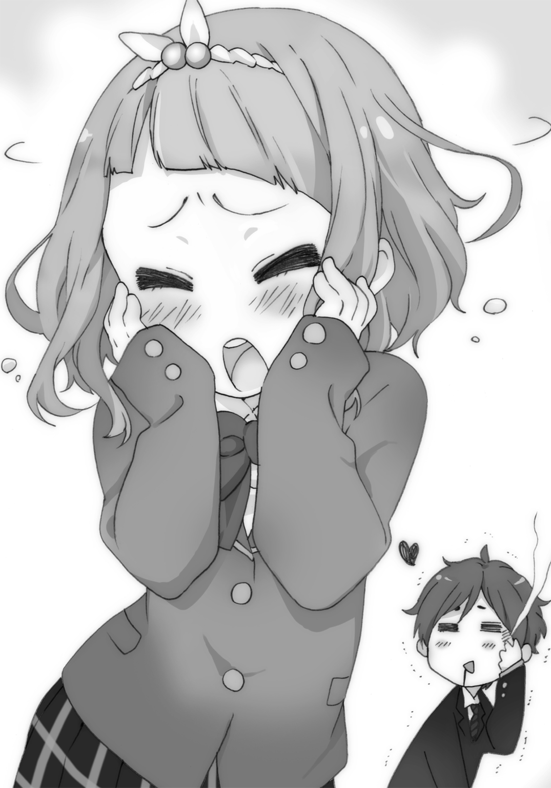

| モノノケグラデーション | |
| 持崎湯葉 | |
この本は縦書きでレイアウトされています。
また、ご覧になる機種により、表示の差が認められることがあります。
 ダッシュエックス文庫DIGITAL
ダッシュエックス文庫DIGITAL
モノノケグラデーション
持崎湯葉
序 章
午前三時。
勤勉な仕事人間か不健康人間か、はたまた体力に自信のあるカップルでなければ活動していないであろうこの時間。
いわば世界で最も活発な生物である人間が、最も消極的になる時間帯だ。
そんな、幽霊もひと仕事終えた刻限に起きている程勤勉でも不健康でもなく彼女もいない俺は、自室のベッドで安らかに寝息を立てていた。しかし、だ。
バタンッ！
「ハル起きて！ 起きなさい、そして覚醒しなさい息子！ このグズ！」
ドアを開く轟音で目覚めた俺の目に映ったのは、何故だか異様に焦っている母であった。
「お、起きた、起きたよ母さん......何なんだよこんな時間に......」
あとたとえどんな事情であれ、実の息子に『グズ』はあんまりだと思う。
「大変なの！ 大変なことを忘れていたの！ 明日......羽音の校外授業があるのよ！」
「............何が大変なのかさっぱりなんだけど。あぁ、あいつ車酔いするんだっけ」
羽音とは中学二年生の妹である。あいつ昔家族でドライブした時、終始青い顔してたっけ。
「違っげ！ そうじゃなくて............ウインナーを買い忘れたのっ！」
「ウインナー？ ウインナーがなんで............っ！」
ああなるほど、そうか。ウインナーか。
「わかった？ お弁当にタコさんウインナー入ってないと、どんな惨事が巻き起こるか......」
そんなの知るか、と言い捨てたい所存。しかし脳裏に刻まれている苦々しい記憶が、それを阻止する。おっと、手が震えていやがる。
「それで俺にどうしろと？」
「今から買ってきてほしいのよ。ウインナー」
「今からかよ......。朝行けばいいじゃん」
「駄目。今ここで寝たら確実に六時まで起きられないわ。ウインナーのこと思い出して起きられたこの事態が既に信じがたい奇跡なんだから。奇跡の勝利なんだから。ウインナーだけに」
なに言ってんの？
「じゃあ自分で行けよ」
「こんな深夜にウインナー買いに行けだなんてあんた......っ！ 信じられない外道ね。股を痛めて産んだことを後悔させる程に......ウインナーだけに」
「腹を痛めてな。そんでウインナー関係ねえじゃねえか」
まごうことなき自業自得じゃないですか。ウインナーって言いたいだけじゃないですか。
「そういうことだから」「いやまだ行くとは......うおっ！」
丁重に断りの旨を告げようとしたところ、突如袖を摑まれベッドから引きずり落とされた。母はというとベッドへ駆け上り、布団にもぐりこんでいく。
「おおおっ寒い！ おい勝手に布団に入るな愚母！」
糾弾し、頭まで被った布団をめくったところ......、
「くかー......くかー......」
「............」
寝つきの良い母であった。
「うおお、寒い！ 皮膚が痛い！」
結局俺は買いに行くのでした。ウインナーを。深夜三時に。
寝間着にジャケットを羽織り、熟睡する母の手に握られていた小銭をポケットに家を出る。
しかし寒い。吸った息が食道を冷却していくのがわかる程、寒い。一年で最も寒い一月の後半、しかも一日で最も寒い時間帯に買い物なんて、本当にどうかしてる。
自らの宿命に憤慨しつつ、俺はコンビニに辿り着く。店員は深夜にウインナーを買う謎の男に対し、怪訝な目を向けるでもなく爽やかなスマイルを提供してくれた。深夜の店員にまで教育の行き届いた素晴らしい店である。今後この店での立ち読みは控えようと、俺は心に誓った。
来た道を戻る中で頭にあったのは睡眠願望だけであった。一つ問題があるとすればどこで寝るかである。
五年来の付き合いになる愛しのベッドは暴君に占領されているため、使えない。
余談だが、我が家は父母俺妹の四人家族だ。しかし父親は単身赴任中で、現在家にはいない。なので現状男は俺しかいないため、何かといいように使われる傾向にあるのだ。難儀なのだ。
寒さに震えながら、微かに川の流れる音が聞こえる土手を進む。夜空には一片の欠けもない丸く妖艶に輝く月が浮かんでいた。
満月なんて意識したの久々だなぁ、と呑気なことを考えていた。が、不意に異変に気づく。河原の方を向くと、深夜のその場において似つかわしくない光景が目に入った。
髪の長い少女と思わしき人影が二つ、満月の光に照らされている。
お二方は対峙していて、一人は長物を構えていた。なにか不穏な雰囲気が漂っている。
「これはまさか......決闘というやつか。女同士で......ブシドー......！」
いや......まさかあれって最近話題の連続傷害事件ってやつか？
実は最近この街では、無差別に一般人が襲われるという穏やかでない事件が起きている。死者が出ているわけではないが、一月中旬に起きた最初の事件から一週間程で、現在被害者は七人にも及んでいる。
被害者の話によると犯人は若い女性で犯行は全て殴る蹴るなどの暴力行為。しかし被害者が口を揃えて言うには、犯人はとても女性とは思えない怪力だとか。不思議な事件である。
もしかしてこの状況......どちらかが襲われようとしているのか？ それなら助けなきゃなのか？ いやでも怖いよなー痛い思いするのはいやだなー。いやいやでも危険にさらされそうな少女を放っておくのはまずいよなー。
悶々悶々、俺は一人土手で迷う。しかし、次の瞬間である。
「ハアアアアアアアアアア！」
何やら長い棒状の武器を持った少女が、電光石火の踏み込みで相手との間を詰める。
危ねえッ！ と危惧したのも束の間、対する丸腰の少女は、なんと怯むことなくその稲妻のような攻撃をかわしたのだ。
休む間もなくその後も、凜々しい声と共に繰り出す斬撃の雨あられ。しかし丸腰の少女は、無言でひらりさらりと人間とは思えない身体能力で避け続ける。むしろ動物的にさえ見える。
俺が武道に関する知識を微塵も持ち合わせていないことを加味した上で状況を説明すると、河原の少女二人はなんかもうシュバババッて感じでやり合っていた。
そんなだから俺は理解が追いつかず、マヌケにもその場で立ち尽くしていた。
「ハアッ！ セイッ！」「........................」
困惑している間にも、河原の少女二人は熱き女の戦いを続けている。
考えた結果、俺はバレないよう身を潜め、二人を見物することにした。帰ってもよさそうだが、万が一も考えて、だ。
目も冴えてきた俺は彼女達の風貌に注目してみた。
まず長物を振り回す少女だが、持っているのは本当にただの棒だった。一メートル程の、木製の丸棒。麵打ち棒という表現が一番近いと思う。いわゆる杖術というやつなのだろう。
容姿に関しては凜と整った顔立ち、髪は腰までまっすぐ伸びた黒髪で、前髪が水平に綺麗に切り揃えられている。日本古来の黒髪少女といった印象だ。ただ身につけている服が水色のダッフルコートに白いミニスカートと、少なくとも戦闘中に着る服ではないのは気になる。
対して素手で麵打ち棒をいなしている少女は、くりっとした瞳にフランス人形のような顔立ち。髪は同じく腰まで伸びたロングであるが、栗色の癖っ毛で手入れがされていないのか所々跳ねている。こちらは見方によっては外国人にも見える風貌だ。服は何故か白のワンピース一枚である。見ているだけで寒そうである。もうその時点で一般人とは思えないのである。
「可愛い子ちゃん同士で何やってんだか......」
一つ溜息をついた、その時だ。
「ああッ！」
悲鳴に似た声が響く。見ると、黒髪少女の手が空っぽになっている。麵打ち棒はというと、宙を舞って栗毛少女の後方に音を立てて落下した。
攻撃をいなしていただけの栗毛少女だったが、迫りくる麵打ち棒をとっさに腕で薙ぎ払ったのだ。栗毛少女の腕力は想定以上だったらしく、黒髪少女は麵打ち棒を手放してしまった。
「わあ！」
栗毛少女はその隙をつき、黒髪少女に馬乗りになる。そして優位に立った体勢で、殴りかかるような素振りを見せた。まさか、マウントで殴る気かっ？
「待て待て待て！ 流石にまずいだろ！」
俺はその場であたふた。そこでふと、土手に生えた芝生の中に良い物を発見する。軟式野球ボールだ。これなら当たってもそんなに痛くはない......はずだ。
急げ！ 頭の中で響き、無我夢中で構える。栗毛少女に狙いを定め、俺は腕を振り抜いた！
「へ......？ ぎゃふんっ！」
願いを込めたボールは、見事少女の側頭部に衝突する。同時に俺は両の拳を天に掲げ、豪快にガッツポーズをしてみせた。やったぜ！ これにて、万事解決！
まあ一つ問題があるとすれば、馬乗りにされている黒髪少女の方に当たったことくらいかな。
「ご、ごめんなさ―――いっ！」
早急かつ誠心誠意謝罪する。大変なことをしてしまった......。
先程まで精悍な声を上げていた黒髪少女は腑抜けた声でボールに気づき、ギャグ漫画のような悲鳴を上げた。軽く意識を飛ばしてしまったらしい。とどめを刺すような一撃だった。
自責の念に押し潰されそうになる俺だったが......その時、ひんやりとした視線を感じた。
栗毛少女。彼女は気絶した黒髪少女に馬乗りになったまま、こちらをじっと見ていた。
「............」
うん......これ、やばいかも。俺がやばいかも。
栗毛少女はしばらくこちらに顔を向けたまま、まばたき一つせずに佇んでいた。が、不意に立ち上がると、寝ている黒髪少女には目もくれず、こちらに身体を向ける。
そして、刹那。
「......ん？ うおえええっっ？」
最初の『ん？』は栗毛がほんの一回のまばたきの後、俺の視界から消えていたことへの疑問。次の『うおえええっっ？』は、その栗毛が俺のすぐ隣にいたことへの驚愕である。
現在地から黒髪少女がバタンキューしている位置までの距離はおよそ二十メートル。しかも急斜面のおまけ付き。それを隣の栗毛さんは、一瞬にして縮めたのだ。
「すげえ！」
思わず謎の感想を叫ぶ俺である。栗毛少女はというと、恐ろしく無表情、無言のまま俺の目を見て離さなかった。その瞳を見て、また瞬間移動という怪現象を経験して、俺は静かに悟る。
こいつに、近づいてはいけない。もう既に近いけど。
したがっておそらくこの場合、俺は脚力の限りを尽くして逃走すべきであろう。
だがどうしても頭から離すことができないのが、黒髪少女だ。このまま残しては......いけないよな。そもそもアレ、俺が気絶させちゃったし。ああなんて責任感・正義感・道徳心を持って育ってしまったんだろう。
ただ、このまま栗毛の拳の餌食になる俺ではない。だからといって暴力に訴えることなどけしてしない。この場で必要なこと、それは暴力でも諦念でもない。
それは、対話だ。
「えっと......あの......あれですね。......月が綺麗ですね」
「........................」
いやいや、月見トークを展開させてどうする俺。もっとこう、なんかユーモアを......。
「月と言えば......あれですね......月経は終わりましたか？」
「................................................」
下ネタだよ。ユーモアの欠片もねえよ。ごめんなさい全世界の女性にごめんなさい。
しかし、それでも彼女は表情を変えず俺を見つめ続けている。
「それにつけても何ですか、あなた何者......ぐえ」
突然世界が九十度回転してしまった。いや、回転したのは俺か。綺麗な夜空である。
おそらく地面に強打したであろう後頭部の鈍い痛みの中で確認できたのは、いつの間にか栗毛少女が俺に馬乗りになっているということだけであった。
そりゃそうだ。馬乗りにされて降り注ぐ拳を受けるだけの失言をしたことは、自分でもわかっている。そう、これは在るべき当然の贖罪。全てを受け入れる覚悟はできて......。
「――あちょうッ！」
瞳を閉じる俺が感じたのは、変な掛け声と、鈍く響く刹那の打撃音。
「......？」
その後、どうしてか身体にかかっていた負荷は消えていた。恐る恐る目を開くと、俺に馬乗りになっていた栗毛少女が、離れた所でこめかみを押さえてうずくまっている。
そしてもう一つ、俺の目にはありえないものが映り込んでいた。視界の左端から右端まで、何かが横断している。よく見てみると、それが細長い木製の杖であることがわかる。
目線を動かして見ると、その杖の根元は、黒髪少女の手に握られていることがわかった。
「へ......？」
黒髪少女のいる位置は河原、俺のいる位置は土手の上。その距離、二十メートル。何度でも言おう、二十メートルだ。
黒髪少女の持つ麵打ち棒程だった杖は今、二十メートルの長さを有して俺まで届いていたのだ。
「え、えええええええっ！」
思わず驚愕の声を上げる俺。二十メートルの距離を一瞬にして縮める人がいれば、麵打ち棒を二十メートルにまで引き伸ばすことのできる人もいる。いつの間に俺は深夜の人外隠し芸大会会場に迷い込んでしまったのだろうか。
「あっ！ 待てっ！」
情報処理の限界に直面している俺など気にも留めず、物語は動きを見せた。
黒髪少女のとてつもないスケールの『突き』をこめかみに喰らってうずくまっていた栗毛少女が、よろけながらそれでも人並み外れた速さで逃走していたのだ。
あー、ありゃ追いつけねーやと頭が勝手に思う。が、諦めていない少女がいた。
「ハッ！」
短い掛け声と共に俺の視界に映ったのは、またも不可思議な光景。
二十メートルの杖が、瞬く間に縮んでいくのだ。杖は、またも麵打ち棒程の長さになると収縮を止めた。なるほど、あの杖は伸縮自在で持ち運びやすい麵打ち棒だったのね。あー便利便利。よかったねー。あの長さがあればそばの百人前くらい余裕だね。やったね！
現実逃避していても物語は進む。なにやら河原の黒髪少女が、発光し始めた。碧い光が彼女を包みだしたのだ。静かな闘志が目に見えるようで、俺は息を呑む。
そうして彼女は大きく息を吸い込み、叫ぶ。
「ふぁいやーさんだーッッ！」
雰囲気を台無しにする小学生のようなセンスの掛け声である。だがそれと共に発射されたのは、鋭く空気を裂いてゆく弾丸のような突き。またも凄まじい速度で伸びゆく杖の、打突するその先は、土手の腹。ザクッと音を立て、杖は土手の中腹に突き刺さった。
「へ？」
てっきり栗毛を狙い打ちするのかと思っていた俺は拍子抜けする。が、黒髪少女の狙いが俺の想像の遙かに斜め上にあることを、すぐに思い知らされる。
「う――――――んにゅおわ―――――――ッッ！」
そこからは流石に目を疑った。
まるで導火線を伝う火花のように、黒髪少女の纏う碧い光が杖を走る。その光が杖の先端、土手に辿り着いた瞬間――その真上を、狙いすましたかのように栗毛少女が通過しようとする。
舞台は整いきった。黒髪少女は、烈火の如く咆哮する。
「はじぇろッッ！」
あ、嚙んだ。
ドォォォォォンッッ！
碧い光が急膨張した直後、轟音が響き渡る。黒髪少女の杖が突き刺さった部分を中心に、土手が大爆発したのだ。
しばらくして土煙が晴れる。
そこには爆発により大きく抉られた土手があるだけ、であった。栗色の姿は、どこを見渡しても認識できない。
「......逃げられた」
黒髪少女は悔しそうに呟いた。
「........................」
「........................」
何だこれ。
ただでさえ脳細胞をサービス残業させているというのに、何だこの状況は。
まことに残念ながら俺の脳はここにある一つだけであり、処理能力は月並みだ。けしてどこかにでかい脳があるわけでない。
なので今の俺には、ただただありのままの疑問を頭に浮かべることしかできないのだ。
「........................」
なぜ彼女は何も言わないのかな？ なぜ彼女は俺の前で正座しているのかな？ なぜ片時も俺から目を離さないのかな？
五分前のこと。俺は目前で起きた非常識な現象に頭が追いつかず、途方に暮れていた。
すると超常現象を引き起こした張本人、黒髪少女は俺に近づいてきて顔を覗き込む。そしてウインナーを見て首を傾げた後、俺の前で正座した。それを見て、かろうじて機能している礼儀の念が心に問いかけたのだろうか、俺もいつの間か正座していた。
状況を簡潔に説明すると、年端もいかない男女二人が真冬の深夜に土手で正座して無言で向かい合っている、といったところだ。
「「........................」」
あれか？ こっちから何か言った方がいいのか？ そういえば助けてもらったんだよな。あとボールぶつけちゃったし。よく考えたら礼とか謝罪とか色々話すことがある。
余計なことは考えず、俺は思いのまま口を開いてみることにした。
「あ」「初対面の女性に対して月経はどうかと思う」
ぐわああああああああああ！
嫌だ忘れたい！ 十分前の俺を抹殺したい！ 誰か早くタイムマシン作れよ！
「それよりあなた――」
待て、何か嫌な予感がする。
「私のことが――」
何だ、こいつ何を言おうとしているんだ。『アナタワタシノコトガ』やだ、何かヤバ――。
「見えるの？」
プツンと、頭で何か切れる音がした。よし冷静になろう。頭を生理......いや整理しよう。
『私のことが見えるの？』ってのはつまりアレだよな。この子、本当は見えちゃいけない類いのアレなんだよな。ここでもしイエスって言っちゃったら、マンマミーアなアレなんだよな。
よし、それなら......っ！
「............さーてそろそろ独り言も飽きたし帰りますかなーっ！」
「独り言？ あれ、やっぱり私のこと見えてないのかな？」
そうそうそうだ！ これでどうにか積極的に退場を......っ！
「あれ？ でもじゃあ何で私にボール投げてきたんだろう......私のこと見えてないのに」
「いやーやっぱ投げるのは気持ちがいいな！ たまたまボールが落ちてて周りに誰もいなかったから投げただけなんだけどな！ スライダーを投げすぎて肘を壊したあの夏以来だ！」
「ああなんだ。たまたま投げた方向に私がいただけか」
よし！ このまま立ち上がって......。
「あれ？ でもじゃあ何で急に地面に寝転んだり座ったりしてたんだろう。あとすごい勢いで誰かに謝ってたような......？」
「あれ？ なんか背中と尻が土で汚れてるぞ！ ああそうか......無意識でところ構わず寝転んだり座ったり、空に向かって叫んだりしちゃう発作......また出ちゃったんだな。まあでも周りに人がいなくて助かったな！ 早く家に帰ってクスリ飲まないとっ！」
どうだ......？ 我ながら強引に話を合わせたが......。
「なんだー、本当に私のこと見えないのかー」
よし、やった！ 俺はやったぞ！ これでこの世はこともな......、
「まあ結界を張ってるのに、入りこんじゃってる時点でアウトなんだけどね。残念」
「ちくしょおおおおおおっ！」
このアマ最初からわかってやってやがったな！ わかってたけどね！ こっちも薄々泳がされてるって自覚はあったけどね！ マンマミーアッッ！
すると黒髪少女は一転、真剣な眼差しで俺を見つめる。
「それで......あなたは何者？」
「何者って......別に普通の高校生だけどさ」
「普通の高校生は結界には入れない」
知らんよ。
「てかさ、『あなた何者？』ってセリフそっくりそのまま返すよ。何なんだね君は」
「私は一月十八日付けでこの地区に配属された休更月特別訓練生、大河小百合」
「ん？ キサラギ？」
黒髪少女が何を言っているのか、俺にはさっぱりわからなかった。かろうじてわかるのは、一月十八日が一昨日であるということくらいである。
「......こんなこともわからないのに結界に入ってるって......怪事」
怪事の塊みたいな奴が何か言ってます。
「......まあいいや。もう眠いし、ここは引き下がる。でもさっきの栗毛はあなたの顔、覚えてるだろうから気をつけて。じゃ」
黒髪少女は身を翻し、去っていこうとする。眠いからってこいつ......。
「ああ。......あっ、ちょっち待ち！」
「ん、何」
「俺は十河春一。一方的に名を名乗られるのは侍の恥だ」
「......何それ」
一瞬何を言われたのかわからないような顔をしたが、その後ほんのりだが無邪気な笑顔を見せて、黒髪少女改め大河小百合は去っていった。
「........................」
スマホを見ると時刻は四時半になろうとしていた。
妙に濃厚な九十分を過ごしてしまった。ひと回り分の睡眠周期の中で、これまでの人生で培ってきた常識が見事に崩壊してしまった。
まさに夢のような時間だった。正直夢であってほしかった。
「............帰ろ」
どんな理不尽な時間を過ごしたとしても人類に与えられる時間は皆平等で、後一〜二時間もすれば昨日と同じように、陽はまた昇る。
「平等に見えて、実は平等じゃないやね」
厭世的な呟きは、澄みきった冬の大気に溶けて消え入った。
俺は背中や尻の土汚れを軽く払い、ウインナーの入ったコンビニ袋を拾って、家路に就く。
とりあえず寒い。忘れてたけど。早くこたつに入って寝たい。
............寝れるかなぁ。
第一章
人によって睡眠の価値観は様々である。
予定のない休日を例に挙げる。きっちり決まった時間に起きるタイプと、正午近くになってのそのそ起きるタイプ。だいたいこの二種類に分かれるだろう。
自慢じゃないが俺は紛れもなく後者だ。許されるのなら世界の終焉までおねんねしていたいくらいだ。なので睡眠には人一倍貪欲で、一日における影響は由々しきものなのである。
「はるにぃ、眠そうだね。顔が紺碧色だよ」
朝食の席、向かいに座って元気に納豆をかき混ぜる妹の羽音が、その二の腕の躍動感とは裏腹に心配そうな顔で尋ねてくる。俺は今、そんな深みのある顔色をしているのか。
「あぁ寝不足。眠い眠い」
なにかこう一言では言い表せないような摩訶不思議な出来事に遭遇したあの後、無事帰宅してこたつに入ったはいいが、結局のところあまり眠れなかったのだ。
「何でこたつで寝てたの？ 昨日は二十三時十分に宿題を終えてすぐベッドに入ってたよね？」
「............うん」
何でそんな詳しく知ってるのかな、羽音？
「まったくこたつで寝るなんて行儀が悪い。何なのかしらこの長男」
味噌汁を啜りながら母が言う。いやお前だお前。人のベッド占拠しておいて何故悪びれない。
「何で、か......。まあつまるところ......お前のためだな、羽音」
だがその根源は何より自分のためであることを忘れてはいけない。
「えっ......私のため......？」
「うん」
「寝不足になってまで......。はるにぃが私のために......愛する妹のために......」
「うん」
ん？
「そんな......そんなの......」
羽音は顔を赤らめて、小動物のように丸まる。可愛い限りである。
「嬉しいけどやっぱりちょっぴり切ないよ――――っ！」
バチコーンッと突如こめかみに妹の掌の形をした砲弾が飛んできた。あまりの衝撃に、イノセントな俺の身体は木の葉のように吹き飛ばされる。可愛い限りである。
「私のために身を削ってくれるのは嬉しいけど、その姿を前に何もできない自分にもどかしさを感じるよ！ 男が皆、カッコつけなのは知ってるけど見ているだけは切ないよ、はるにぃ！」
両手で真っ赤な顔を覆い、何かよくわからないことを熱弁してくる羽音。流石は我が妹。目が覚める朝の一発だ。数センチ下に喰らってたらきっと、鼓膜が破壊されていただろう。

そして一部始終を傍観していた母はというと、
「ほらほらバカやってると遅刻するよ」
何事もないかのようにお茶を啜っていたのだった。少しは心配しよう。
これである。これが真夜中に叩き起こされ、ウインナーを買いに行かなければならなくなった最たる所以である。
あれは去年の春。羽音は遠足の弁当にタコさんウインナーが入っていなかったことに傷心した。のちにわかったことだが、友達とタコさんウインナーを交換する約束をしていたらしい。
遠足から帰宅した羽音は、本能のまま泣きじゃくった。そして何故か俺の部屋で大暴れした末、部屋が半壊した。大袈裟に聞こえるが、本当に半壊したのだ。窓は割れ、壁紙は裂かれて、テーブルはへし折られ、布団は所々に風穴が空いて、大地は割れ、海は裂け......etc。
普通の女子中学生ではまず考えられない所業だが、うちの妹は天才らしい。空手の。全国大会では常に上位をキープし、師範には道場始まって以来の逸材と絶賛されている。
更にタチが悪いことに妹は自身の強さに無自覚で、年の割に無邪気だ。「はるにぃだいすき！」と抱きつかれた時は、腰骨が砕けるんじゃないかと危ぶんだ程強力な鯖折りに発展した程だ。
そんなことがあり、我が妹羽音は自覚もないまま我が家の帝王に君臨しているのであった。
さて。朝から早速ぶっ飛ばされた俺だったが、何とか意識を保ち続け、立ち上がることに成功した。そうしてさっさと朝飯を片づけ、玄関へと向かう。
「行ってくるよー」
「あいよー」「ちょっと待ってよーはるにぃーっ！」
そんな俺に無頓着な母と呼び止める妹の声が飛んできた。仰せのまま待っていると、羽音が洗面所から飛び出してくる。
「途中まで一緒に行くよ！ いってきまーす！」
「元気だなぁ」
しみじみと感嘆の声を漏らしながら、羽音と共に家を出る。
「酔い止めは持ったか？」
「盛ったよ！」
「だ、誰に......？」
愉快な会話に興じながら、羽音と共に寒風吹きすさぶ朝の通学路を歩く。羽音の中学校と俺の高校は家からの方角がほぼ同じなので、今日のように一緒に登校することは多い。
「るーるるー山ガール♪ そこに山があるーるるー♪」
隣で一人ルンルンしている羽音。どうやら本日の課外授業が楽しみで仕方ないらしい。弾けるような興奮を撒き散らしながら、羽音は俺に今日の予定を報告してくる。
「学校行ったらバスに乗って、山登って、お弁当食べて、山下りる！ 山下りる！」
「なんで二回山下りたの？」
そんなに楽しみなのか。普通の女子中学生は登山とか絶対嫌がるだろうに。
「お土産屋さんもあるみたいだから買ってきてあげるね！」
ぴょんぴょこと一四五センチの身体を揺らし、無垢な顔で微笑んでくる。この小さな身体のどこにあんな力が......いや、小さいからこそ凝縮されているのか......？
日々肉体的ダメージの恐れを孕むこの生活だが、別段不満はない。この企業努力が施された洗濯用洗剤であってももたらすことのできない驚きの白さを心に持つ妹の危険性など、ほんの些細なことである。いやもうめっちゃ可愛いのだ。
シスコン？ ハハッ何とでも言うがいい。
「いってきまーす！」と曲がり角を駆け抜ける羽音と別れ、俺は学校へ向かう。
重い頭をふらふらさせながら、にわかに騒がしい教室に入る。クラスメイトに挨拶をすませ、俺はすぐさま自分の席についた。睡眠の大切さを身を以て思い知らされる朝の一時である。
「はよーす、はるちー」
だらけていると、聞き慣れた声が降ってきた。顔を上げるとこれまた見慣れた顔があった。
「......はよ。サク」
「なんだはるちー、顔色悪いぞ。朝から羽音ちゃんにエルボースマッシュでも喰らったか？」
「......寝不足だよ」
当たらずとも遠からずだがな。
悪戯な笑顔で聞いてくるこいつは小金井朔名。
名前からして恋愛ドラマの主人公みたいな奴であるが、容姿も負けてない。パーツの整った顔立ちにシャンプーのＣＭのようなさらさらヘアー、男とは思えない細身。嫉妬心の標的になりそうなこいつとは、なんやかんや小学生の時からの付き合いになる。
「でも健康的なはるちーが寝不足なんて珍しいな。何があったんだ？」
「詳しくは言えないけど......まあ羽音のためかな」
深夜にウインナーとか怪しすぎてよう言えん。するとサクは、とても白けたような顔をする。
「......はるちーはいい加減、妹離れした方がいいと思うよ。もう高一も終わるんだからさ」
「女性関係でお前にとやかく言われたくはないな」
今までサクに彼女がいたことは知る限りはない。ラブレターをもらったところは何度も見たことがあるが。それだけの容姿をしていながら何故と聞くと、決まって常套句のように......、
「俺の理想は遙か高みにあるのさ」
このように誇らしげに言う。よくわからない奴だ。
その後担任教師がやってきて、ホームルームが始まる。
教師には悪いが授業中に仮眠をとらせてもらおうと思った。が、やはり頭には昨夜の超常現象が浮かび、どうにも眠れない。結局起きてはいるが何も頭に入らない時間が続いた。
そういえば羽音はもう山を下りてるところかな......怪我でもしてなきゃいいけど。
「はるちーまた羽音ちゃんのこと、考えてる顔してるぞ」
「......いい加減なこと言うんじゃないよ」
明確に図星である。
「って、あれ？ もしかしてもうホームルーム終わった？」
教室内が閑散としている。サクもクリーム色のマフラーをして、下校態勢だ。
「はるちー、今日一日丸ごとぼーとしてたからな。もう放課後だよ。帰ろうぜ」
「......おお」
まさかただの寝不足が一日にこんなに影響するなんて......遺憾だ。
学校に残る理由を何一つ見つけられない俺はサクに急かされながら、カバンに教科書類を詰める作業に勤しんでいた。そんな時だった。
「そっ、そっ、そっ、そごーくーん......」
学校に残る理由が、呪文のような様相を呈して耳の穴へと侵入してきた。
声の源を辿ってみる。すると教室のドアから、白衣姿で何故か涙目の女性がこちらを覗いていた。
「なんだしーちゃん先生か。はるちー、今日部活だったか？」
「いやそんなことはなかったと思うけど......」
「ごめんね十河くん。急遽、明日朝一で実験の予定ができて、手伝ってほしいんだけど......」
上目遣いで申し訳なさそうに懇願してくる彼女は、白坂詩衣さん。本学校の化学教師である。
目がクリっとした子犬のような人だ。身長はちょい低めの一五〇中程と可愛らしく、常に白衣を着ているのも愛くるしい。更に注目はその胸。おおよそ顔や身長に似つかわしくないでっかいのがくっついている。そんな高スペックな先生を、男子生徒達が放っておくわけがない。
もう一度言おう。放っておくわけがないのだ。
「何なんだ。何なんだ十河......可愛い妹に、美人教師まで......」
「え？ 何で十河って地獄に落ちないの？」
「ちょっと誰かこの嫉妬心を止めて。もうナイフ握っちゃうヨ」
そして俺はいつだって憎まれ役なのさ。身の危険を感じる程にね。
「しーちゃん先生ならしょうがないなー」
と、非常に楽しそうに言う帰宅部サクに別れを告げ、詩衣さんと共に化学室へ向かう。
「ごめんねーハルくん。急に」
「いやいや大丈夫ですよ。それに羽音がいつもお世話になってますから」
実は詩衣さんは、我が妹羽音と関係がある。羽音は、詩衣さんの父親が開く白坂道場の門下生なのだ。更に羽音は詩衣さんパパのお気に入りであり、夜遅くまで稽古が続くこともしばしば。そこで羽音は、詩衣さんの家で晩御飯をよくごちそうになっているのである。
「羽音ちゃんは可愛いから全然大丈夫よ。いつも元気だし、ご飯何杯もおかわりしてるよ」
詩衣さんは楽しそうに語る。羽音......少しは遠慮しよう。
「だから羽音ちゃんは妹みたい......」
詩衣さんは言葉の途中で、何故か赤くなってうつむく。
「ん？ 詩衣さん、どうかしました？」
「............なんでもない」
そんなこんなで話しているうちに化学室に到着した。詩衣さんに導かれて準備室に入ると、薬品独特の匂いがツンと鼻腔を刺激する。
「ハルくんには一〇〇ミリリットルビーカー一つと、五〇ミリリットルビーカー二つ、五〇ミリリットルのコニカルビーカー、一〇〇ミリリットルのメスシリンダーに駒込ピペット......」
「ちょ、ちょっと詩衣さん、一度にそんなに覚えられませんよ！」
「あっそうか。あははごめんね。今簡単にリスト作るから」
詩衣さんはどこか楽しげに、実験器具類の名前と数をＡ４用紙に書き込み始めた。
そもそもどうして俺がこんなことをしているかというと、まあ単純に詩衣さんのためである。
化学教師となると実験授業の際、一人で準備をするのはなにかと大変である。俺が入学する前までは理科研究部の部員が手伝っていたのだが、昨年度の三年生の卒業によって部員数がゼロになったのだとか。
そこで都合よく入学した俺は、詩衣さんから部員になってくれと泣きつかれたのである。帰宅部希望だったし、なにより子犬系教師詩衣さんに頼まれたら断ることはできなかった。ちなみに部員は俺一人なので、準備を手伝うくらいしか活動はない。なのでさして不満はないのだ。
「はいできた。このリストに書いてある器具を一セットとして、七セット作ってほしいの」
「了解です」
そうして詩衣さんは鼻歌交じりで薬品の調合を始めた。
この一年でこのような仕事はもはや数えきれないくらいこなしてきた。慣れていなかった頃はよく詩衣さんに迷惑をかけたが、この二人きりの空間には初めから違和感はなかったと思う。
というのも実は、俺と詩衣さんとの付き合いも結構長かったりするのだ。
羽音が道場に通い始めたのは羽音が小二、俺が小四の時だ。その頃羽音は一人で道場に行くのに寂しさから抵抗があったらしく、よく俺が付き添っていた。しかし付き添いとはいってもただ稽古を見ているだけなので、俺は暇を持て余していた。そんな退屈している俺の相手をしてくれたのが、当時高校生の詩衣さんなのであった。
今では羽音も一人で通っているが、一昨年まで同行していた。それまで話し相手だったお姉さんが、通っている高校の教師になっているのだから驚きだ。どうやら世界は狭いらしい。
「あの頃はハルくんも可愛かったなー。しいねぇ、しいねぇとか言って」
「いや恥ずいんで......やめてください......」
詩衣さんはよく昔を思い出し、しみじみと俺の小学生時代を事細かに語ってくる。
詩衣さん自身、その頃の記憶が強く残っているのだろう。学校以外、二人きりの時は学校であっても『ハルくん』と呼んでくる。つられて俺も『詩衣さん』と呼んでいるが。
いつだったか化学の授業中、油断したのか俺を『ハルくん』と呼んできた時は生命の危険を感じた。席が一番後ろで本当によかったと思う。授業終了後、襲いかかってくる嫉妬に理性を奪われた暴漢達から逃れるため、二階の窓から脱出したのも今となっては良い思い出だ。
「気をつけてくださいね、『ハルくん』呼ばわりは本当に。詩衣さん先生なんだから、立場上男子生徒をそんな風に呼んでるところ見られたら、問題になりかねませんからね」
「はーい」
返事こそ素直だが、これはあまり心に響いてないご様子だ。長い付き合いであるがゆえ、生返事かどうかくらいわかる。どうやら今は薬品の調合に完全に意識がいっているようだ。
それをいいことに、俺は少し下世話なセリフを口走ってみた。
「それに......彼氏さんにそんなところ見られたら、どうなることやら......」
「えええええっっ！」
予想外の超反応である。詩衣さんは両手に薬品を持ったまま勢いよく振り向き、俺に詰め寄る。相対的におっぱいも詰め寄る。そして信じられないものを見るような目で、詰問する。
「ハ、ハルくん彼氏いるのっっ？」
「んなわけあるかっっ！ あんただ、あんた！」
「え、えええええ！ 私がハルくんの彼氏なのっっ？」
「いや性別っっ！ そうじゃなくてっ、詩衣さんに彼氏がいたら、って話ですよ！」
「あっ、な、なーんだそういうことかー」
やっと理解したのか詩衣さんは、「ほうふ......」と胸を撫で下ろした。
「......って私彼氏なんていないよっっ！」
まさかの再噴火。と、同時に予期せぬアクシデントが発生する。詩衣さんの持っていたビーカーの中の薬品が、持ち主の乱心によって大きく波打ったがために、ピチョンと宙を舞ってその一滴がビーカーから旅立っていく。
その一滴の行く先は、愛らしい俺の眼球であった。
「ぐおあああああっ！」
「わ―――っ！ ハルくんの目に塩酸が―――っ！」
現場は阿鼻叫喚の大混乱。ちなみに一番テンパっているのは化学教師である。
「は、初めて見た......本当に誤って目に薬品を入れちゃう人、初めて見た......ッ！」
「あんたがやったんでしょうがっ！」
「ご、ごめんハルくんっ！ え、えーっとこういう時ってどうするんだっけ......目に塩酸......そうだ！ 中和すればいいんだ！ 待っててハルくん、今水酸化ナトリウム持ってくるから！」
「それ選択肢の間違ってる方のやつ！ 正解は『多量の水で洗う』だから！」
その後、数分かけて目を水で洗い流し、事なきを得たのだった。
どちらかといえばその更に後、罪悪感いっぱいの涙目で摑みかかるように謝罪をしてくる詩衣さんをなだめる方が、よっぽど大変だったと思う。
すったもんだはあったものの無事作業を終えた。詩衣さんとは化学室で別れ、俺は一人学校を出る。時計は五時を指していた。
自宅までは遠回りになるが、何となしに例の土手に向かってみた。
茜色の夕日が射す土手には、ジョギングに励む人に買い物帰りの主婦、下校中の学生の姿が点々と見える。ゆらゆら夕日を映す川に沿った河原では、小学生が野球に興じていた。
「........................」
昨日......厳密には今日の日の出前、大河小百合と名乗る少女の碧い光によって大爆発し、崩壊していたはずの場所も、何事もなかったように変わらず芝生が生い茂っていた。
「まあそんなとこだろうと思ったがな」
あの時、俺に対して表情を変えたはずの世界は、残酷なまでに何も変わっていなかった。
俺自身の生活も、寝不足という要素を除いて同じく日常的だ。
夢であったと考えたいが、重い頭の素因である寝不足という事実が、その仮定を否認する。
しかし倦怠感の中でも、羽音やサクや詩衣さん、常日頃顔を合わせている人達を思い浮かべると、少しは頭が軽くなった気がした。
「......そんな感じで少しずつ忘れていくか」
夢だったんじゃないかと思える日はいつかきっと来るさ。自分に言い聞かせ、夜に追いつかれないように家路を急いだ。
＊＊＊
「「..................」」
自室のドアを数センチ開いたところで、俺は異変に気づいた。
あれ？ おかしいな。俺、部屋に正座する等身大黒髪少女の人形なんて置いたっけ？
その見覚えのある少女はドアに空いた数センチの隙間から、俺をひたすらに凝視していた。
一旦、閉めた。閉める瞬間、「あ」という声が漏れたのは気のせいだろう。
そして意を決し、もう一度ゆっくりとドアを開く。
「............ぴぷー」
「........................」
先程まで部屋の中心で正座をしていた少女はドアに張りつき、至近距離にある俺の瞳を見つめる。そしてよくわからない言語でコミュニケーションを図ってきた。何の挨拶なんだそれは。
「......こんな所ではなんなので、とりあえずこちらへどうぞ」
状況を把握しきれないながらも、ドアに張りつく少女を部屋の中心へエスコートする。そして互いに正座をして向き合う。半日くらい前にもこんな状況あったな。
「............えっと......大河小百合さん......？」
「十河春一」
「はい」
「十河......春一」
「うん。だからはい」
何故二回言った。そして何故二回目溜めた。
半日ぶりに会う小百合さんとやらの格好は、何も変わってはいなかった。そのダッフルコート脱げばいいのに。部屋の中だと暑いだろう。
「まずこっちからいくつか聞きたいことがあるんだけど......いい？」
「ん」
小百合は、まっすぐ切り揃えられたさらさらの前髪を縦に揺らした。
「じゃあとりあえず......どうやって俺の部屋に入ったの？」
下にいた母と妹は特に何も言っていなかったし、そんな素振りも見せなかった。どうやって気づかれずにこの部屋に入ったのだろう。そもそも何で俺の家がわかったのだろう。
「さっき、土手を歩いているあなたの姿を見かけたから、とりあえずコウビした」
「『ビコウ』な『尾行』。聞きようによっちゃド変態だと思われるから気をつけてね」
とりあえず尾行するという謎の思考は、今は置いておいて。
「それでこの家に入るのを確認したから、様子見のために窓からこの部屋に侵入した」
「......それがまさに俺の部屋だったと」
「うん、奇跡」
「............」
「奇跡」
「わかったから」
なるほど窓からね。そういや朝、窓の鍵確認すんの忘れてたっけ。ははは。
当局は一体何をしてるんだ。
「それより『そごうはるいち』って百貨店のシーズンセールみたいですなっ！」
「それ重要？ 今それ重要？」
そんな口調が変わる程の発見か？ 何その得意顔？ この子何なの？
小百合の独特な会話センスにもはや疲れてきてしまった俺は、不毛な話題を無理やり区切り、現状最も気になることを聞いてみた。
「それで、何の用でしょうか」
「やっぱりあなたのことが気になった。あなた本当に普通の人間？」
「うん」
「でも普通の人間なら結界は認識できない。入れるはずがない」
だから知らんがな。
「何か心当たりはない？ 何でもいい。友達と仲良くしゃべってたのにエレベーターに入った途端なぜか無言になって気まずくなるタイプだったりとか......」
「いや結構いると思うよ？ それ」
結界となんの関係があるんだよ、それ。
「......うーん......」
小百合は頭を抱えた。そんなにまずいことなのか？
「てかそもそもなんだ結界って。何のための結界なんだ。何であんたは結界なんて張れるんだ」
探究心の赴くまま矢継ぎ早に質問したが、直後後悔する。
小百合は俺の問いを聞くと、見定めるようにスッと目を細めた。
やばい。その質問はもしかしたら彼女にとって、そして何よりその答えは俺にとってあまり歓迎できるものではないのかもしれない。ノーモア怪奇。即刻修正しなければ......っ！
「いや答えたくなければ......」
「結界は一般人を巻き込まないように妖怪を閉じ込めるために張る。何故張れるかというとそういう訓練を受け、習得したから。どうやって張るかは......魔力についての中級知識と、固有結界の構築論を理解する必要があるけど、説明する？」
「うん......いや......いいよ......うん......」
ほらもう......妖怪とか魔力とか言ってるし......。聞いちゃった......聞いてしまったよ......。
俺は落胆し、小百合はそんな俺を見て首を傾げる。そんな時だった。
「はーるーにーいーっ！」
俺を呼ぶ羽音の声が聞こえ、思わず小動物のようにビクッと震える。やばっ！
「と、とりあえず今日のところは帰ってもらえないかな？」
「でもあなたについてまだ何も......」
「明日！ 明日ちゃんと時間を作って話聞くから！」
階段を上がってくる羽音の足音が聞こえる。この状況を見られるのはまずい！
小百合を強引に窓へ押しやると、観念したのか彼女はやれやれといった顔で窓枠に足をかけた。
「でも一つだけあなたに言わなければならないことがある」
「明日じゃダメかな！」
「ダメってことはないこともなきにしも非ず......」
「ああもうじゃあ今言っちゃって！ 何っ？」
「軟式野球ボールはアレで当たると結構痛い」
「その件に関しては本当にごめんなさい！」
平に。ただ平に。そういえば結局許してもらってなかったんだった。
「赦免の兆し。じゃ」
こんなに謝ってまだ兆しかよ。
末恐ろしい捨て台詞を残して小百合は窓からすぽーんと出ていったので、俺は即座にカーテンを閉める。するとそれとほぼ同時に、ドアが勢いよく開いた。
「はるにぃ！ お土産あげるからカバン置いたらすぐ来てって言ったじゃん！」
ぷんすか怒っている羽音が部屋になだれ込んでくる。
「あ、あぁそうだな、ごめんごめんご！ よし下行こう！」
「ん？ はるにぃどうしたの？ エロ本でも読んでたの？」
「まあそんなとこだ！」
「うーいエロー」とか言う羽音を無理やり部屋から出し、一階に降りる。危なかったよー。
ちなみに羽音のお土産というのは掌サイズの、腹を押すと時間差で三秒後に「ぷぇぇ」と情けなく鳴るカモノハシのマスコットだった。登山と何の関係が......と思ったが、音が鳴る度に羽音がキャッキャと笑っていたのが何よりも愛おしく感じたので、良しとした。
＊＊＊
翌日は、放課後までは変わり映えのしないものだった。
起床し、羽音に心肺停止させられ、羽音と共に登校し、上の空で授業を受け、昼休みに詩衣さんと二人で話しているのをクラスメイトに見つかり体育のドッジボールで敵味方関係なく標的にされ、その後の授業も上の空であった。
そして訪れる放課後。約束の時がやってきた。が、どこでいつ落ち合うのか一切決めてません。ただ場所は何となくわかる。本当はバックレたかったが、家に来られても困る。
寒空の下、俺は小百合のいるであろう場所へと向かった。
昨日訪れた時刻よりも一時間程早い土手は、思ったよりも人が少なかった。
周辺を見回すと、目当ての人物は意外にも早く見つかる。
小百合はこれまたダッフルコートにミニスカートという装い。斜面に腰を下ろし、芝生を撫でながら河原で野球をする小学生を眺めていた。服、着替えていないのか？ ばっちいな。
「よ」
「......よ」
近づき、フランクに声をかけると、真似たように返してきた。
小百合は右手で傍らの芝生をポンポンと叩くので、俺は仰せのままに隣に座る。
「待ったか？」
「十分くらい待った」
「意外とそうでもないんだな」
日付が変わった時から待ってた、と言われる覚悟もしてたが必要なかったらしい。
「高校ってやつが終わる時間ぐらい大体わかる」
「さいですか」
高校ってやつ......。やつ、ですって。
「でも寒かった」
「それはごめんだな。ほら」
途中で買ってカバンに入れていた、温かいほうじ茶のペットボトルを手渡す。
「......甘いやつがよかった」
「そりゃ悪かった。また今度な」
そう言って俺は小百合に渡したのと同じお茶をもう一つカバンから取り出し、手を温める。
......なんか端から見たら俺達、青春を大いに謳歌している若人に見えているのだろうな。でもこれから話す内容は、青春どころか日常からも遠くかけ離れたものであって......。
溜息をつくと、お茶を両手で持ち、くぴくぴ飲んでいる小百合がこちらを見て小首を傾げた。
「何でもないよ。それで何だ、何を聞きたいというのかね」
聞くと、小百合はペンとメモ帳を取り出した。
「うん。じゃあいくつか質問する。正直に答えて」
「うい」
「じゃあまず両親のどちらか、もしくは両方、魔術訓練を受けた経験はある？」
「俺の知る限りはノー」
いきなりすごい質問です。小百合は何かメモを取る。
「じゃあ両親のどちらか、もしくは両方が妖怪？」
いや妖怪て。さらっとすごい単語が飛び出したな。
「それも知る限りは、てか多分ノー。どちらもごくごく普通です」
「これまでに魔術師、もしくは妖怪と交流があった？」
「ノー」
「これまで昨日のように結界に入ってしまった経験はある？」
「ノー」
俺の返答が芳しくないのだろう、小百合は「んー......」とペンの頭で眉を搔く。
「じゃあ、ＵＦＯを信じますか？」
「ノー」
なんだかいきなりうさんくさい質問になったぞ。
「現在、服用している薬はありますか？」
「ノー」
「アレルギー、ぜんそく、しっしん、じんましんはありますか？」
「六歳の時、喘息を」
おい、何か問診表みたいになってきたぞ。
「現在、他の医療機関にて治療されていますか？」
「ノー」
『他の』て言っちゃったよ。これ絶対問診表だよね？ 俺は初診患者かい。あっ初診か。
「一人でお風呂に入れるようになるまでは誰と入っていましたか？」
「......母親」
「初めて友達の家に泊まった時、いつもと違う布団の中でお母さんの顔は浮かびましたか？」
「......イエス」
やだ何か恥ずかしくなってきたぞ。
「お母さんのことを『ママ』から『母さん』に呼び変えたのはいつですか？」
「......小三くらいかな」
本当にこの質問必要なんだよね？ メモを取る必要あるんだよね？
「乳離れ遅し......と」
おい今なんつった。
「他人にいきなり軟式野球ボールを投げていいと思いますか？」
「本当にごめんなさい。猛省しています。許してください」
平に。ただ平に。結構根に持つのね。
「ふー」と小百合は一息つく。俺はもうなんか疲れた。
「飽きてきたから本題に戻るよ」
いつかこいつコテンパンにしてやろうと思った。
「トラウマはありますか？」
「............そりゃ、十六年も生きてればトラウマの一つや二つできるよな」
「じゃあ、そのトラウマって......いや、やっぱりいいや」
「急にどうした」
「人のウガーッてなる記憶にいきなり踏み込んじゃいけないって、奈々子さんに言われた」
「........................」
奈々子さんという人は知らないけど、常識のある方のようで助かった。ただそれ口に出して言っちゃうのはちょっと違いませんか、小百合さん。
そうして俺はというと湧き出しかけたウガーッてなる記憶を必死で覆い隠していた。ふと、背中がやけに寒いと思ったら、凄まじく冷や汗をかいていたことに、ここで初めて気づいた。
「......うむー......」
質問や考察が尽きてしまったようで、小百合は難しい顔でツヤツヤの黒髪をぐしゃぐしゃとかき乱した。この子がどんなものを背負って今こうしているのか、戦闘に身を投じていたのかはわからないが、その姿勢だけで彼女の真剣さは伝わってくる。
「......てかさ、行き詰まってるならこっちの質問にも答えてくれよ。得体の知れない組織の、得体の知れない人間に質問攻めにあう身にもなってくれよ」
俺は話題を変え、立場の逆転を要求する。妖怪とかいう単語はできれば触れることのない人生を歩みたいところだけど......不明瞭すぎるのは危険な気もする。
「確かに......よし、ばっちこい」
「じゃあまず......『休更月』ってなんなんだよ。おまえがそこ所属の人間であることはわかるけど......一体どんな企業理念を持ってる組織なんだ？」
「休更月っていうのは、簡単に言うと、この世界に住んでいる妖怪や怪異現象を、人間に危害が及ばないように監視・管理することを目的とした組織」
うむ。いきなりツッコミどころ満載である。
「いやあの......何食わぬ顔で言ってますけどね......そもそも妖怪なんて存在、ホントにいるの？ まずはそこからなんですよ、俺からしたら」
「妖怪、いるよ。結構いっぱい」
「......ちなみに、証拠は？」
「え、だって見たじゃん、昨日。栗色の髪したひと」
今度はこの娘、きょとんとしおったで。オノマトペが聞こえてくるくらいの『きょとん』を見せつけてきおったで。可愛いな。
「いや見たよ、栗毛。フランス人形みたいな可愛らしい女の子。でもあの子のどこが妖怪？」
「すごい速かった。そしてすごい力だった」
「小学生の感想か」
まあ、人間らしからぬ身体能力は確かに見ちゃいましたけど。いや、いるって。アレくらい俊敏な奴、ざらにいるって。三組の田端くんもアレくらい走れるって。
俺に理解されず悔しいらしい小百合は、頰を膨らましながら頭を巡らしている。
「じゃ、じゃあ私の戸隠！ あれはどう説明するのっ？」
「とがくし？ なんだそれは」
聞くと小百合はすぐさま戸隠とやらをドヤ顔で掲げてみせた。肩に引っ掛けていた、美大生やらがよく持ち歩いている筒状の黒いケースから取り出したそれは、昨日栗毛と戦闘していた際振り回していた、杖だった。
「これ。ほら、こんなの見ても超常現象はないと言える？」
小百合の持つ杖が、にょきにょきと伸び縮みしている。
「........................」
見たところ、妙な切れ目もアジャスター部分もない。まっさらな木の棒が、目の前で長さを自由自在に変化させている。これは言うなればアレだ、如意棒だ。
「おまえ......マジシャンだったのかッ？」
「違うっっ！」
戸隠とやらで、小百合は俺の頭をごつんとどつく。脳天が痺れるだけの強度はあった。
「休更月では人智を超える能力を持つ妖怪に対抗するため、魔力開発を行っている。だから戦闘要員の休更月職員は全員魔術を使う。この戸隠も、私の魔力供給によって伸び縮みを可能にしている。『突けば槍、払えば薙刀、持たば太刀。呪わば小銃』。これが、大河流杖術の真髄」
呪わばライフル、ね。そういえば俺が栗毛に馬乗りにされている際、栗毛のこめかみを打ち抜いたのは、この戸隠の弾丸のような突きだったな。
加えて小百合は芝生をバシバシと叩き、補足する。
「昨日この土手を爆発させたのだって、私の魔力運用による、急激な熱膨張で引き起こした。小百合ちゃんエクスプロージョン」
えっへん、とフラットな胸を張って得意げな顔を見せる小百合。
「まあ最近乾燥してるしな。アレくらいざらにあるって」
「ないでしょ！ こわっ！ 日本の冬こわっ！」
うむ。そろそろからかって遊ぶのにも飽きたので、話を戻してやろう。
「おーけー。この世には妖怪さんがいて、妖怪さんが悪さをしないように休更月さんってのが見張ってて、休更月さんは妖怪さんと戦えるよう、魔法を使うのな？ 君は魔法少女なのな？」
「う、うん。そんな感じ......」
照れてんじゃねえよ。
「それで、なんで昨日の栗毛さんとドンパチしてたんだ？」
「うん。あの栗毛が今この街を賑わしている連続傷害事件の犯人であり、妖怪であることが明らかになった。だから休更月は彼女を追っている。で、追加の戦闘要員として、この前から私もこの地区に配属になった」
そういえば最初に会った時、最近配属になったみたいなこと言ってたな。まだ子供っぽいのに、大変なこった。
「なるほどな。でもじゃあその栗毛の妖怪さんは、なんでまた人を襲って......」
その時だ。俺達の会話に一つの野太い声が割って入る。
「あのー......すみません」
見ると、スーツを着た中年男性が、斜面の上方から芝生に座る俺達に申し訳なさそうな顔を向けている。少なくとも、俺の知り合いではない。
「はい。な、なんでしょう？」
俺が反応するよりも早く小百合は立ち上がり、男性に近づいた。知り合いかと思いきや、そうでもないようだ。
「ちょっと道をお尋ねしたいんですけど......」
「えっと......はい」
率先して動いた割にぎこちなく振る舞う小百合。休更月として、地域貢献もしなければならないのだろうか。ただどうにも人見知りのようで、あわあわとしている。
ふと、そんな微笑ましい様子を眺めている俺に、男性は一瞬ちらりと目を向けた。
ほんの一秒にも満たない時の中で、俺と男性は確かに視線を交わした。
それだけで、十分だった。
「......どれ。俺も見てみましょう」
立ち上がり、男性の広げる地図を難しそうに眺める小百合の背後まで駆け寄る。そして流れるように、俺は小百合の両肩を摑む。華奢な身体が反射的にビクッと震える。
「へえ？」
困惑する小百合をよそに、俺は小百合を捕まえたまま素早く後退し、男性から距離をあけた。男性から目を離さず、小百合の耳元へひとまず簡潔に告げる。
「小百合、結界ってやつ、張れ」
「え？ え？ な、なんで......、肩......」
「いいから早く」
「う、うん......わかった......」
物わかりはよかった。小百合は両手を地面にかざし、目を瞑り集中する。
「んんんんんんん！ にぃぃぃ！」
こんな気の抜けるような掛け声と共に、小百合は両手を勢いよく振り上げた。
直後、小百合を中心に見えない風の壁が生じ、キィィィンという音と共に通り抜けていった。
するとどうだろう。辺りの風景に変わりはないが、心なしか薄暗くなったような気がした。空や川なども含めて、その空間全体が淡く暗い色へと変化したイメージだ。
魔術ってものが実在するのか、実験的に試してみたが、残念ながら本当のようだった。
小百合によれば、結界内には妖怪と魔術師以外の人間が入ることはできないらしい。なのでついさっきまであらゆる人が行き交っていた歩道にも、野球の行われていた河原にも、人の姿は一切なくなった。見渡す限りの人々が一瞬にして、消失したのだ。
そうして隔たれたこの空間には俺と小百合、そしてスーツ姿の中年男性しか存在は認められなかった。だから何故俺いるし。
「えっ！」
小百合は恐ろしい程の無表情でこちらを見る男性を確認すると、驚愕の表情を浮かべる。
「さっき私のこと、小百合って言った......っ！」
「そっち？ そっちなの？」
顔を赤らめ、目を見開いて俺に詰め寄る。こいつには緊張感というものがないのだろうか。
「初めて私のこと呼んだ......しかも下の名前で......っ！」
「そっ、そうか？ 確か昨日俺の部屋で呼ばなかったか？ フルネームで......」
「あれは確認だったからノーカウント！ ノーゴール！ ノースリーブ！」
「と、とりあえず一旦落ち着こう！ な！ はい深呼吸！」
小百合は言う通り、焦りながらも深呼吸する。それでも顔は真っ赤なままだ。
「よし落ち着いたな。じゃあ確認しよう。小百合って呼ぶのはお前的にＮＧなのな！」
「えっ！ い、いや......別にそういうわけじゃ......」
「てか心の中ではずっと『小百合』って呼んでたけどな」
「ぎょええええええっっ？」
「うおしまった！ 失言だった！」
と、そのまま狂乱し続けるかと思いきや、咆哮は急に静止した。
「ど、どうした......？ 大丈夫か......？」
「......私も」
「ん？」
「私もあなたのことを春一って呼ぶ......それでおあいこ！」
「お、おお......そうしてくれ」
よかった。一時はどうなるかと思った。これにて一件落着............。
「いや違う！ こんなことしている場合じゃないわ！」
俺は慌てて、完全に意識の外に追いやってしまった謎の男性に、再び注目する。襲ってくるでもなく、俺達のラブコメ的なノリをずっと無表情で眺めていたらしい。こいつアレだな。ヒーローが変身している間は攻撃しないで待っていてくれるタイプのやつだな。
「ふう......ってあっ！ 結界張ったのにあのおじさんがいる！ なんだあのおじさん！」
いや遅せえよ。休更月さん、ホントにこいつで大丈夫なんですか？
「何で、はっ、春一......はあれが妖怪だってわかったの......？」
小百合は何故か赤くなりながら聞いてくる。
「それは後で」
適当に誤摩化し、俺は男に視線を向け続ける。そこで男は、急に変化を見せた。
ブワッと、サラリーマン風男性はなんのモーションもなく、全身を白い煙で包みこんだ。彼の影すらも、濃い煙が隠してしまう。その後、煙が晴れるとそこには一つの人影。しかしそれは数秒前、煙に飲まれていった『男』の容姿とは似ても似つかないものだった。
その姿は昨日、この場で出会った白ワンピの栗毛少女そのものだったのだ。
「やっぱりか......」
冷静にカッコつけた感想を漏らす俺だが、心の中は絶賛動揺中である。
「むー」
しかし同じ光景を見ていたにもかかわらず、小百合は動じないどころか、何故か俺を睨んでぷっくりとむくれていた。軽くあしらったことへの抗議らしい。
「後でちゃんと説明するから......」
そう言うと小百合は仏頂面を緩めて、こくりと頷く。物わかりはいいんだ、この子は。
そしてその右手には、既に得物を携えている。伸縮自在の如意棒、戸隠だ。
小百合は唐突に現れた栗毛少女に向け、真摯な口調で告げる。
「どういう意図で近づいてきたかわからないけど......私に変化は通用しない。全てお見通し」
いや見破ったの俺で、おまえ無警戒で近づいてたじゃねえか。
「昨日も尋ねたけど......あなたが連続傷害事件の犯人だということはわかっている。おとなしく、投降するのがおすすめ」
「........................」
だが栗毛少女はこちらを見つめたまま、なにも言わずに立ち尽くしている。それに対し小百合は一つ溜息をつくと、改めて戸隠を構える。交渉決裂のようだ。
「「........................」」
互いに無言の時間が続く。小百合は相手の出方を見てから行動を起こすタイプなのだろうか、栗毛少女の動きを何一つ見逃さないよう、視線を外さない。栗毛少女は何を考えているかまったくわからない無表情で、微動だにしていない。
しかし、その長い長い沈黙は、音速で破られる。
「ッ！ 春一、さが......ッッ！」
刹那的に強襲を悟った小百合だが、一つ判断を誤った。俺に退避を促す暇などなかったのだ。
何故なら栗毛少女の狙いは、ハナから小百合だったのだから。
「くうッ！」
驚くべきはその雷のような速さだ。栗毛は小百合との距離をほんの一秒程で縮め、ショルダータックルを喰らわせる。俺から見れば、瞬間移動もいいところだ。
しかしそこは流石に武人小百合。普段のぽへっとした表情とは一線を画す武士の顔をした小百合は、俺が一瞬と判断した時の間に、戸隠によって防御を固めていたようだ。強烈に押し込まれたものの、栗毛の重い攻撃を身体に触れさせずに済んでいた。そして間髪容れずに、
「ハアッ！ シッ！」
栗毛を強引に押しのけるのとほぼ同時。小百合は浮き足立つ彼女めがけ、戸隠を水平に薙ぐ。堅牢な杖が、しなるように彼女のわき腹に直撃する......はずだった。
「なッ？」
栗毛は真横から迫る戸隠を、まるで鉄棒をするようにくるりんっと避けたのだ。冗談のようだが、本当にくるりんっと。
あまりに速すぎて肉眼では捉えきれなかったのだが、おそらく栗毛は戸隠を片手で握り、両足で地面を思いきり蹴り上げて跳躍、戸隠を握った手を軸にロールしたのだろう。襲いかかる杖を、白ワンピをふわふわ遊ばせながら、まるで木の葉のようにしなやかにいなしたのだ。
サーカスのような驚きの回避法に、小百合は寝耳に水といった様子だ。が、それで冷静さを欠く武人ではない。休む暇を与えないよう、戸隠による怒濤の連撃を繰り出す。
「ハッ！ ハアッ！ シッ！ わっしょい！」
突けば槍、払えば薙刀、持たば太刀。呪わば小銃とはよく言ったものだと、小百合の戦い方を見て納得させられる。たまにダサい掛け声が入るが。
接近すれば小太刀のようにコンパクトに叩き、距離があけば薙刀のように薙ぐ。隙を見せれば槍のように一撃必殺の突きを打ち込む。遠く離れても、爆発的な加速度で伸びゆくライフルのような一撃もある。一切の無駄を削ぎ落としたシンプルで柔靭で流麗にさえ見える小百合の杖術は、相手をより効率的に撃破するための、究極の武術のように思えてならなかった。
ただし、この考えに異議を唱える事態が、眼前で繰り広げられている。小百合は未だ、相手を撃破できていないのだ。
小百合の凄まじく的確に見える波状攻撃も、栗毛に膝をつかせる一発にはなり得ていない。病的なまでの白い肌に汗一つ浮かび上がらせていない栗毛は、攻撃の全てをアクロバティックに、また柔軟に、柳に風と受け流しているのだ。
小百合をからかうために『妖怪なんていない、栗毛は普通の人間だ』、なんて口走っていたが、この光景を見てはもはやそんな戯れ言は口にできない。人並み外れた、なんて言葉じゃ足りない。そもそも人間基準で考えてはいけない凄まじい身体能力を、栗毛少女は有していたのだ。
「セッ！ ハッ！ リャアッ！ ちぇすとーっ！」
「........................」
繰り広げられる攻撃と防御の応酬。小百合が栗毛のこめかみを狙えば空を切り、栗毛が小百合の脇腹を狙えば戸隠の堅い衝突音が響く。小百合が腹部を突こうとすれば真横から飛んでくる掌に軌道を逸らされ、栗毛が背後へ回り込んで押さえつけようとすれば、地面に突き刺した戸隠が瞬発的に伸び上がり小百合が空を飛ぶ。
野性味溢れる身体能力と、鍛錬を積み重ねた杖術の拮抗、その全てを俺の目で追うことはできていないのだろう。だからかそこで展開する小百合と栗毛の近接戦闘は、現実味すら失われ、俺には上等な演舞にさえ感じられた。
しかし、均衡状態は唐突に破られる。
「ぐっ......！」
小百合の胴打ちを左の豪腕で弾いた栗毛は、即座に右拳を構え、大きなモーションを見せた。すかさず、小百合は拳が届く前にどんな攻撃でも受け止められる体勢に入った。
ただし想定外だったのは、そのダイナミックなモーションから繰り出される拳の威力だった。
「ぐあっ！」
拳を受け止めたのは戸隠。しかしそのパワーを完全に抑えられるほど小百合は強靭ではない。栗毛のアッパー気味の右拳は、小百合に隙を作らせるには十分だった。戸隠と共に持ち上げられた両腕......必然的に、小百合のどてっ腹はがら空きになり......。
「がはッ......あああッ！」
栗毛の左拳が小百合に初めてクリーンヒットする。そしてそれは、一発で全てを終わらせられるポテンシャルを秘めていた。
何故なら喰らった小百合がその衝撃で、後方で見ていた俺の横を通り過ぎていく程に、吹き飛ばされたのだから。
「小百合ッッ！」
目の前でぶっ飛んでいった小百合に俺はゾッと身体を震わせ、振り返る。小百合が地面に叩きつけられ、土埃を上げながら身体を何回転もさせた後、倒れ込んだのが見えた。
「お、おい......」
我ながら情けない声だったと思う。俺は土埃に隠れる小百合に声をかける。
しかしそんな心配、毛程も必要なかったと、目に映る情報が訴える。
「............ッ！」
立ちこめる土埃の中で、碧く染まる程の激甚な気概が、その瞳に宿る。
小百合は倒れてなどいない。立ち上がり、早撃ちをするように腰に戸隠を構えていた。
戸隠の先端が描く軌道上には、気づくのが数コンマ遅かった栗毛少女――。
「――シッ！」
肉眼では捉えられない、風切り音さえも時間差で耳に届く程の音速で、俺の目の前を通過した戸隠。一直線に、栗毛を襲う。だが......、
「......あっ！」
声を上げたのは、小百合だった。その意味は一目瞭然。
小百合の持つ五メートル以上伸びた戸隠の先が、栗毛の手に捕まえられていたのだ。
目で捉えられたわけもないので想像でしか語れないが、まさか栗毛はあの弾丸のような戸隠を避けるだけでなく、とっさに摑んだのか......？ ありえない......どんな反応速度だ。
「くっ......」
小百合は悔しそうな声を上げるも、優勢に立った栗毛は変わらず冷たい無表情。
敵の得物を封じたところで、栗毛は再び強襲をかける。戸隠を伝うように、小百合へ嵐のような速度で切迫する。
だが――小百合がその瞬間を待っていたことも、『くっ......』という声が演技であることも、そしてこの局面こそ、大技を仕掛けるチャンスだということも、俺はまだ知らなかった。
「――ッ！」
音速で駆ける栗毛の瞳に映るのは、予測よりも遙かに早く接近する、黒髪の少女。
栗毛が力一杯握る戸隠は急激に縮小し、必然的に戸隠が縮むのと同じ速度で、小百合は宙を駆ける。まさに音速と音速の正面衝突。ただし分が悪いのは言うまでもなく、小百合の練り上げたカウンターを予測できなかった、栗毛だ。
小百合のウエスタンブーツの分厚い底が、速度というエネルギーを持って栗毛を強襲する。
「ちょんわ――――ッッ！」
「ッッ！」
カウンターのドロップキックを喰らった栗毛少女は、先程の小百合同様、怒濤の勢いで吹き飛ばされ、地面に身体を打ちつける。
「よしっ！」
俺は思わずガッツポーズ。小百合を見ると、
「フンッ！」
強情そうな顔で、こちらにピースしてくる。嬉しいらしい。
だが、すぐに栗毛は次の反応を見せた。あれだけ強力なドロップキックを喰らったのに、もう立ち上がろうとしている。防御力も化け物並みなのか......と思ったが、そうでもないらしい。
膝をガクッと落とし、あからさまによろけている。立つのもやっとのように見えた。
よし、今のうちに捕縛！ と思ったのだろう小百合が駆け出そうとした、その瞬間だ。
「なあっ！」
突然栗毛を中心に、白い煙が広がる。世界が真っ白に覆われ、視界が曇り何も見えなくなる。煙幕という『化かし』だ。
「しゃらくさいっ！」
そう毒づく姿の見えない小百合が、何やらよくわからない言語を次々呟く声が聞こえてくる。呪文か何かなのだろう、唱え終えると煙が一斉に晴れた。
しかし、周りが見えるようになった時にはもう、栗毛少女の姿はなかったとさ。
＊＊＊
「追わなくてよかったのか？」
隣の黒髪に、何となく思ったことを聞いてみた。
「ああいう素早い敵は一度見失うともう見つからないから、魔力の無駄になる」
「そうか。大変なんだな」
「うん。それなりに負傷したみたいだから、すぐには人を襲えないと思うし」
俺達は戦闘が始まる前のように、芝生に二人並んで座っていた。
背後を賑やかに女子高生達が通り過ぎていく。ほんの数分とはいえあれだけ静まり返った空間にいたせいか、そんな当たり前の風景にさえ違和感を感じてしまう。
「........................」
隣で猫のように目を細め、夕日を眺める小百合。その表情は心なしか悔しそうに見えた。
「春一は、怪我ない？ 煙幕の間に、何かされなかった？」
「いや大丈夫だよ、あんがと。お前はどうなんだ？ 一発思いっきり殴られたろ」
「とっさに後ろに飛んで威力を殺したから、派手さのわりに痛みはない」
そんなことしていたのか。こいつもこいつで規格外だな。
と、余裕そうな様子の小百合だったが、ふと「......あ」と何か思い立ったような声を上げる。それを皮切りに、態度を一変させた。
「......いや、よくよく考えてみたら......痛いかも」
「え？ いや今大丈夫って......」
「いや勘違いだった。痛い痛い。おなかいたいーおなかいたいー」
「........................」
本当にお腹が痛いのなら、もうちょっと痛そうにしてもらえないだろうか。申し訳程度にお腹を押さえてるが、無表情だし、チラチラこっち見てるし、どこまでも棒読みだし。
何を考えているのかわからないが、これはノッたらまずいと直感的に判断。
「まあ......良い子にしてたらそのうち治まるって」
「良い子じゃない。私、良い子じゃない。一日一個って約束なのに、昨日の夜アイス二個食べちゃった。ごめんなさいごめんなさい」
誰との約束なんだよ。子供か。
「それじゃ一気に冷たいもの食べすぎてお腹びっくりしちゃったんだね。大丈夫、トイレに行けば治るよ。心配ない心配ない」
「違う。このお腹痛いはトイレに行ってどうにかなるタイプのやつじゃないやつ。先生とかクラスメイトにガチで心配されるタイプのやつ」
「あーなんかそう言われたら俺もお腹痛い気がしてきたー。感染したかもーあー痛い痛い」
「えっ！ ホント......？ だ、大丈夫......？ まさかこんなことになるなんて......」
信じちゃったよ。信じちゃったよこの子。
「うん痛い痛いー。こりゃ今すぐ家に帰らないとー」
「家に......？ ハッ！ い、いやいやそんなことより私のお腹痛いですよー、はあー痛い」
ちっ、勘づきやがった。
「いや、俺の方が痛いって。痛い痛い」
「いやいや冗談キツいっす。私のお腹痛いと春一のお腹痛いじゃ、月とすっぽんぽんですよ」
「『ぽん』一個多いぞ」
月とすっぽんぽんだったら、俺はすっぽんぽんの方が好きだな。
このままじゃ時間を浪費するだけだと、俺は強引に立ち去ることを決意する。
「あーっ、痛い痛い！ ちょっと俺もう帰るわ！ んじゃ！」
ところが立ち上がろうとした瞬間、小百合が制服のベルトをガッと摑む。
「あーっ待ってーっ！ い、いたいーっ、おなかいたいーっ！ 誰かそばにいてほしいーっ！ はあ―――、家まで送ってってほしいーっ！ 家まで送ってってもらわないと......もらわないと......痛すぎてなんかもうアレだなーッ！ アレだなーッ！ はあ―――っ！」
どれだよ。もうちょっと明確なこじつけを作ってくれよ。
ここで、小百合がここまでする理由がわかった気がした。というよりもうバレバレだろ。
「あーおなかがーおなかがー。お腹と背中がくっつくー」
「それお腹すいてるだけだろ......あー、もうわかったよ！ 送っていく、送っていきますよ！」
「......春一ちょろいぜ」
「........................」
悪そうな顔で小さく呟く小百合。ひっぱたきたいところだったが、何とか我慢できた。
まったく......諸々怪しい俺を徹底的に調べたいと、素直にそう言えばいいのに。
小百合と共にやってきたのは、天高くそびえるタワーマンション。学校帰りによく敷地の前を通るため知った存在ではあったが、恐ろしく上品な雰囲気だと改めて思う。
エレベーターに乗りこむと、小百合はコンソールの一番上のボタンを押す。最上階ですよ。
そうして小百合の部屋の前まで到着した。そこで俺は、紳士な表情で一礼。
「ではお嬢様、私はこの辺で。良い夜を」
「何もない部屋で恐縮ですが、どうぞ」
おかしい。会話が嚙み合わない。
結局ここは俺の方が折れることとなった。引きずられるように部屋に入ると、アイランドキッチンが備えつけられているリビングに案内される。
三十帖程ある広いリビングには、夜空を覗かせる大きな窓に、部屋面積の半分を占める白いフェイクファーラグ。他には大型テレビやガラステーブル、山積みの本などが目に入った。物が少ないせいか、どうにも生活感を感じられない。
ただ一つ気になったのは隅に置かれたゾウのすべり台である。よく公園などで見かけるやつの一回り小さい物だ。静謐な部屋にあってその異物は圧倒的な存在感を放っていた。
小百合はキッチンで何やらコンロを使用している。お茶でも用意しているのか？
「他の家族は？」
「一人暮らし」
「......おまえってお嬢様なの？ それとも休更月ってのは給料良いの？」
「さあ」
あしらわれてしまった。年端もいかない女子がこんな豪華な部屋で一人暮らしって。
「そういえば、おまえいくつ？」
「十六」
「うわっ、同い年かよ......」
「......何の『うわっ』なの？」
何となくだ。自然に出ちまったんだぜ。
退屈なので、部屋を見回してみた。まず視界に入ったのは山積みの本だ。だがよく見ると『上級魔法実技教本』とか『ダメ、ゼッタイ黒魔術』とか書かれていたので迅速に目を背けた。
テーブルに目を向けると、裏表紙を向けているＤＶＤケースがぽつんと置いてあることに気づく。ファンシーなパッケージだったので映画とか見るのか、と思い表紙を見てみた。
『説得に応じない妖怪への強硬手段マニュアル』
河童を網にかけ喜ぶ人の図がファンシーに描かれていた。
「............」
そっ、とＤＶＤを元の位置に戻した。
すると小百合が、湯気の立つ何かが載るお盆を手に、こちらへやってきた。
「どぞ」
「ありが......え？」
ガラステーブルに置かれたモノを目の当たりにし、俺は目が点になる。
かけそばである。一杯の美味しそうなかけそばが、湯気を立てて目前に置かれていた。まったく意味がわからない。だってお茶かと思ったら、そばだったのだもの。
「そばですが」
『そばですが』って言われちゃったんですけど。『粗茶ですが』みたいに『そばですが』って言われちゃったんですけど。
「え......？ あの、小百合さん......これは一体......？」
「かけそば」
「うん、見りゃわかるんだ。そうじゃなくて......俺、そば頼んだかな？ そんな図々しいことしましたかね？」
「うちではお客さんに、かけそばを出す」
そ、そうなの......？ 価値観とか習慣は環境で育つものだから、一概に否定するのは良くないけど......そばて。いや、そばて。
とは言いつつ、時間も時間なので実はそこそこ腹が減っている俺。結局それ以上の言及はせず、かけそばに手をつけた。味はというと、店でも出せる程無駄に美味かった。
「美味しい？」
「うん。すげーうまい」
「へへへ。それ、麵から出汁から全部私が作った」
「そりゃすごい」
小百合は褒めれば褒める程、くすぐったそうに笑っていた。完璧なそばを作れる十六歳とは、どの層に需要があるのだろう。すごいのはすごいけどね。
かけそばに舌鼓を打ちながら、俺はもう一つ強烈に気になっていることを聞いてみた。
「あのすべり台は何だ？」
すると嬉しいことに、小百合は間髪容れずに返答してくれる。
「すべりだい好き」
至極単純なレスポンスをありがとう。頭が痛いのは寝不足のせいだ、きっと。
「公園のじゃダメなのか？」
「一人で公園のすべりだい滑ってたら怪談話になる」
「自室で人知れずすべり台を滑るのも十分怪談だと思うな」
「日々責務を全うし続けることによって生まれる鬱積した精神を慰撫する唯一のオアシスを馬鹿にすることは許さない」
うわ、急に怒り出した。どこにスイッチがあったんだろう。何だそのあくなきすべり台への愛。
「悪かった」
「許す」
物わかりはいい子なんだよな。
「許すといえば......軟式ボールの件はどうなってる？」
「ゴールは見えてきた」
「具体的には？」
「それは言えない。ただ一つ言えるのは金曜日は免罪ポイント二倍」
チェーン展開する薬局かおまえは。
「「............」」
かけそばを食べ終わると部屋には沈黙が流れる。丼を片づけ終わった小百合は、ラグに腰を下ろし、ぼーっと窓の外を眺めている。暖房の稼働音だけが、空間に響いていた。
そこで一つ、大して気になっているわけでもないが話題を振ってみる。
「休更月ってのに所属してるおまえくらいの年の奴って、みんなあんな風に闘えるのか？ みんながみんな棒振り回してたりするのか？」
「......知らない。でも杖術使いは、家族以外で見たことない」
「知らないって......なんで？」
「私友達いないし」
おおう......気ままに振った話題が、まさか地雷だとは......と、思ったが、本人は気にしていなさそうな表情だ。地雷ってわけじゃなさそうだが、ひとまずその手のことを聞くのはやめよう。
しかし......友達、できないタイプか？ 確かに会話センスは独特で、変な奴だけど......良い奴であることも簡単にわかるだろう。可愛いし、勝手に友達ができそうな雰囲気だがなあ。
余計なことを考えていると......一言、小百合は大ヒントをつけ加えた。
「私は、強すぎるから」
「......そっか」
淡白な表現だったが、言いたいことは僅かに動く表情からも伝わった。
何を考えてるか微塵もわからない小百合だが、一つ俺の中で確信めいた予感がある。
小百合は噓はつかない、ということだ。
だからこれも、自惚れとかじゃなく本当のことなのだろう。底を隠す気がないのか、隠し方を知らないのか。小百合の口から漏れたのは紛れもない、ありのままの『弱さ』だった。
そしてそんな小百合に何か都合のよい言葉をかけられる程、小百合のことを知っているわけでもないし強くもない俺は、ただただそば湯を啜るしかなかった。
外は大分暗くなってきている。俺は、何をするでもなく床に根を生やしていた。
「後でちゃんと説明するって言った」
小百合がそう言ったのは台所から新しいそば湯を運んできた時だった。
「あー......何であいつが妖怪と一目でわかったのかってことか......」
そういやさらっとそんなこと言っちゃったっけ。軽はずみな過去の自分にちょっち嫌悪感。
端的に言えば、言いたくはない。
湧き出す過去の記憶が、脳をグリグリ締めつける。うう、お腹痛い......今度は本当に。心臓が不快にドラミングし、冷たい汗が背中を濡らし始める。
だがここで、思わぬ救いが現れる。ポケットに入れていたスマホから、振動と共に電子音が発せられた。こんなタイミングで電話をかけてくれるとは、きっと神に違いない。
「出ていい？」
「うん」
家主に了承を得て、部屋の隅で電話に応答する。
『はるにぃ？ シスターです』
ほら、女神だ。
「羽音か。どした」
『今帰り？ おかーさんが買ってきてほしい物があるんだってー。醬油ッッ！』
「そんな気合いの入った醬油があるかどうかはわからないけど......了解。今帰る」
その後、一言二言会話を交わし、電話を切る。
「急ぎでおつかいを頼まれちった。だからその話はまた今度でいいか？」
「マザコン根強し......と。うんわかった」
小百合はメモを取りながら答える。いや違うからね。どっちかといえばシスコンだから。
俺は荷物をまとめ、玄関へと向かう。小百合も玄関まで見送りに来た。
「できれば明日も来てほしい」
「まだカウンセリングは続くのか」
「懸念材料は早く片づけたい」
「まあそれは俺も同じだがな......。わかった、明日学校が終わり次第来る」
「うん。待ってる」
そんな会話を経て、俺は小百合の部屋を出た。
その後俺はちゃんと醬油を買って帰り、夜は何事もなく更けていった。
ただ今日こそは寝るぞと意気込んでベッドに入ったものの、何度も記憶が反芻されてしまったからだろう。この日も頭を落ち着かせることができず、まともに眠れなかった。
意識が薄まらない布団の中。忌々しくも過去幾度となく俺を蝕んできた、あの感覚が蘇る。
それは生き地獄にも似た、『トラウマ』だった。
＊＊＊
翌日。寝不足の重い頭で、まともに受けられなかった午前の授業が終わった。
最近はどうにも集中力を欠いている。何度も授業中に教師から注意を喰らっていて、流石にサクや詩衣さんも心配しているようだ。早くどうにかしなければ。
そんなちょっぴり憂鬱な今は、昼食後のまったりタイム。
「そういやここのところ、事件起きてないな。無差別で襲われるってやつ」
サクと駄弁っていると、二列隣の席でクラスメイト同士がそんなことを話していた。
「最後の事件は......五日前だっけか。逮捕されたって話は聞かないけどな」
「事件が起きないのはいいけど、逮捕されたって聞かないと安心はできないよな」
まあ、あれだな。何だかんだで小百合も街の役には立ってるみたいだな。
「はるちー、羽音ちゃんでもしーちゃん先生でもない女のことを考えてる顔してるぞ」
「......だからいい加減なことを言うな」
サクくん、君エスパーなの？
「こんな平和な街で連続事件なんてなあ」
「物騒だなあ」
クラスメイト達は話を続ける。
「こんな大きな事件今までなかったよな。ニュース番組でうちの地名が出るなんてなかったし」
「いや......確か何年か前に一回あったぞ。全国的なニュースにもなった事件」
おっと。雲行きが怪しくなってきたぞ。
「ああ、そう言えば......大分前にあったよな。俺らが小学生くらいだった頃。確かあれは......」
うんやめようやめよう。そういうのマジやめよう。
視線は送らず、思念だけで愛しのクラスメイト達を食い止めようとした。が、基本的に俺の願いは叶ってくれないのだ。
「児童館立て籠もり事件！ あったなー、そういえばそんなの」
その単語が耳に入った直後、まるでピタゴラ装置のように滑らかに神経が腐っていく気がした。いーやー、やーめーてー。
「そうそう。確か小学生一人を人質に......」
「黒タイツッッ！」
「「っっ？」」
突如、隣のイケメンが天に向かって叫んだ。サクの奴、ついにおかしくなったようだ。教室内にいたクラスメイト達は、驚きの表情でサクを見る。
「はるちー、俺は今猛烈に黒タイツによる脚線美を目に焼きつけたい！ さあ共に！」
「どこに」
「三組に良い黒脚線美を見せてくれる女子がいるんだ」
「そうか。よし行こう。ちなみにタイツではない。パンティホース、だ」
「あわわーっ！ はるちーマニアックーッ！」
俺はサクと共に教室を颯爽と後にする。クラスメイト達が「あいつらホントにバカだなー」とか話しているのが、かろうじて聞き取れた。
教室から大分離れたところで、俺達は足を止める。
「......別にそんなに気を遣わなくてもいいのに」
「そうは言ってもなー。なんとなくなー」
「ほれ見ての通り全然平気だ。もう六年も前の話だぞ。流石に忘れるわ」
「......そっか。まあそうだな。じゃあとりあえず黒タイツでも見に行きますか」
「本当に行くのか......。あとパンティホースな」
なんだかんだでサクは友達思いの良い奴なのであった。バカだけど。
しかし......ここ数日本当によく思い出す。本当、どうかしてる。
今、俺を取り巻く同年代の中で、サクだけが唯一知っているのだ。
俺が、あの事件の当事者であったことを。
六年前の冬。太平なこの街で、とある事件が巻き起こった。
『児童館立て籠もり事件』
その日、街のとある銀行に銃を持った一人の強盗が現れた。男は金を奪い、逃げようと外へ飛び出すが、不運にもパトロール中のパトカーが前を横切る。
けたたましいパトランプを耳に、追い詰められた男の目に入ったのは児童館だった。迷う余地もない男は児童館に駆け込む。大声で威嚇する男。突然の恐怖に悲鳴を上げる子供達。男はその場にいた一人の男子小学生を捕まえ、その他全ての人間を追い出した。
男は男子小学生を人質に、児童館に立て籠もる。事件を聞きつけた警察やマスコミが児童館を取り囲む。この事件は瞬く間に全国に知れ渡り、大事件となった。
この事件が終結を迎えたのは、男が立て籠もってから十五時間程経った時だった。
人質から離れる男の姿を確認した機動隊は好機と判断し、閃光弾を放った。網膜を突き刺すような光の中で突入する機動隊。悟った男は銃を自らのこめかみに当て――。
結局この事件は、無事人質は保護されたものの犯人の自害という結末で幕を閉じた。
そして、被害者で不運にも人質となってしまった当時小学四年生の少年は、六年後の今もこの街で生活している。
そう、こんな風にね。
さて。倦怠感溢れる昔話に花を咲かせてしまったが、つまるところ当時小学四年生の人質ってのが俺だ。
この街の住民でこの事件を知らない者はほとんどいない。ただこの事件の裏側にあった本質を知っているのは、おそらく世界中で俺を含めた数人だろう。
だが、それを誰かに話すことはなかった。そしてこれからもないだろう。
そう、在るべきなのだ。
そんなとってもかわいそうな俺のドキドキ放課後タイムは、とある少女との約束通り、昨日も訪れたとあるマンションの一室にて展開されていた。
「はい」
「どうも」
小百合が目前にかけそばを置く。もうツッコミはしない。本人ボケてるつもりないし。
しかしどうでもいいがこいつ、常に同じ格好だな。異性の前なんだから少しは気を遣おうとは思わないのか。そして部屋の中だと絶対暑いだろ、そのダッフルコート。
「そういや妖怪退治はいいのか？ まだあいつ捕まってないんだろ？」
七人の被害者を出している栗毛少女は、今もこの街を闊歩している可能性が高い。こんなところで呑気にそばを啜っていてもいいものか。
「妖力反応が出てない以上は動けない。妖怪も常に危険妖気を発しているわけじゃないから」
「妖力反応？ そんなのがわかるのか？」
「私にはわからないけど、この地区で危険な妖気が感知されたなら連絡が来るようになっている。妖力が出ていない時の彼女を捕まえるのは、警察の仕事」
最近至る所でパトロール中の警察官やパトカーを見る。警察も最大限の厳戒態勢をとっているようだ。しかし、ただの警察にあいつを捕らえることはできないと思うが......。
「そんなもんか。でも妖力を感知してからの出動で間に合うのか？」
「飛べるし」
まあ魔法少女ですものね。空飛ぶのもたやすいわな。あれ？ 俺なんか慣れてきてる？
「てか飛べるんなら昨日ここまで送った意味......」
「そういえばお菓子がある」
小百合は俺の言葉を遮り、席を立つ。おい誤魔化すんじゃない。
戻ってくる小百合の手には、小袋に包まれたカステラが入ったバスケットが載っていた。
「「..................」」
何となく、ほんのり居心地の悪い沈黙が流れる。小百合はカステラをもひもひと食していた。
正直に言うと俺は今、疲れ果てている。
寝不足もそうだし、色々巻き込まれているのも原因の一つだ。しかし何よりは、最近頻繁に疼くトラウマだ。こんなの当時に比べたら軽いものだがどうしたものか、大分堪えている。
「..................」
ふと気づくと、いつからだろう小百合は食べる手を止め、向かいの席からじっと俺の目を見つめていた。綺麗な目をしてるな、こいつは。
「......そういえば昨日の質問の答えがまだだったな。何で妖怪を見分けられたかってやつ」
嫌がる気分を強引に上げ小百合に話しかける。やっきになって考えた噓だ。心して聞け。
「あれはだな......」
「やっぱり説明しなくていい」
突然、小百合は話の途中で割り込んできた。
「......何だ？ 好奇心の塊みたいなおまえはどこへ行った？」
予想外の言葉に心底驚いた。本当にわけがわからない。
「トラウマなんでしょ？」
「........................」
と思ったら、なんてことはない。猛烈に気を遣われていただけだったとさ。
いやてかだからさ、気を遣うならもっとわかりにくくやってくれませんか？ 昨日もこんなことあったけど、それ思ってても実際口にしたらダメだろ。ウガーッてなってんだよ、今。
でも......非常に悔しいことが一つ。こうもストレートに、キレ味抜群に切り込まれると、何故だか心が乱れない。意外や意外、心は不思議とフラットだった。
「トラウマをほじくり出す程私は図々しくない。トラウマってのは、大変なんでしょ？」
ほらもうこんなこと言ってるよ。トラウマの意味、おそらくわかってないよこの子。図々しいどころの話じゃないよ。心に土足で踏み込むどころか、壁ぶち破ってきたよ。
なのになー、なんでだろうな。全然イラつかないんだ。猫のしたイタズラを「あーもーしょうがないなー」ってな具合に許しちゃう感じ。天然な後輩が不意にタメ口きいてもそこまでイラつかない感じ。全部ひっくるめて、いじらしく感じられてしまう。
現状、俺はよくわからない感情に苛まれていた。
しかし小百合は追い討ちをかけるように、その言葉を口にした。
「春一の辛そうな顔は見たくない」
「........................」
だからこそ、その凜とした白百合のような言葉は、空虚な意識に弾けるように染み広がった。
投げ込まれたストレートすぎる言葉に、どうしようもなく俺は、にやけが止まらなかった。
「だから無理しなくても......え？」
俺が小百合の頭をぽんぽんと叩くと、きょとんとした表情を浮かべた。予想と違ったのだろう俺のニヤニヤ面に、『なんだこいつ』みたいな顔で首を傾げてやがる。
「いや、話すよ。『トラウマ』ってやつ」
「へ？ いやだから無理には......」
「いーよ。おまえがマヌケすぎて、無理じゃなくなったみたいだ」
「マヌケッ？ なんだとーっ！ 気を遣ったのに！」
「遣えてなかったからな。気を遣う練習が必要だな、君には」
「あれ？」と小百合は不思議そうな顔だ。これ程不器用で単純でアホ可愛い奴、初めて見た。なんというかこいつには、悩みとか愚痴とか、全部吐き出したくなってしまう。
「......よし。じゃあ心して聞けよ」
そうして俺は喧しい頭痛の中、記憶をなぞる。
気づくと身体中から汗が噴き出していた。だが、まっすぐ俺を見つめる小百合の瞳を見ると、少しだけ安らいだ気がした。
＊＊＊
その日俺は羽音や友達と共に、小学校近くの児童館で遊んでいた。
遊びに熱中していると、突然ドアが荒々しく開いた。見ると児童館には似つかわしくない覆面の男が、肩で息をしながら立っていた。そして、叫ぶ。
「おまえら静かにしろ！ 少しでも動いたらこれで撃ち殺すぞ！」
覆面男の手には、テレビでしか見たことのないような黒々とした銃。
あちらこちらで撥ねる悲鳴。俺は状況を把握できていなかったため茫然としていたが、横にいた羽音が震える手で俺の手を握ってきた。なのでひとまず、羽音を俺の背後へと追いやった。
子供達を品定めするように見ていた覆面男は、俺と目が合った。酷く、嫌な予感がした。
覆面男は俺にツカツカと近づき、俺の右腕を摑むと乱暴に引き上げた。
「こいつ以外の奴は外へ出ろ！ 今すぐだ、早くしろ！」
そこからは嵐のようだった。
子供達は悲鳴を上げながらクモの子を散らすように外へ逃げる。やばいと感じた俺は羽音を逃げ渋る児童館員へ突き飛ばした。児童館員は迷っていたが結局羽音の手を握り、逃げていく。
「おにいちゃん！ おにいちゃん！ やだよ！ おにいちゃん――」
悲鳴のように泣き叫びながら去っていく羽音の声は、未だ追憶に抗し難い。
館内には俺と覆面男以外誰もいなくなった。流石にその頃には恐怖心が芽生えてきて、気づくと身体中が震えていた。そして覆面男はそんな俺の前に座り込むと......、
「ごめん少年！ 本当にごめん！ もう取り返しつかないけどごめん！ 腕痛くなかった？ ああどうしよう赤くなってるよ大変だ！ もう本当にごめんなさいぃ！」
土下座し、ものすごい勢いで謝ってきた。大人に土下座までされて謝られたことなどあるはずもなかった俺は、その光景をただただ茫然と見ていたのだった。
聞くところによるとこの人には、重い病にかかっている生後まだ一年も経ってない娘がいて、到底賄えない高い治療費のため、苦悩の末あろうことか銀行強盗に手を染めたらしい。
娘のこと、仕事のこと、自分の昔のことなど彼は色々な話題を振ってきた。俺を退屈させないためか、緊張や罪悪感に押し潰されそうな気持ちを誤魔化すためか。真意はわからなかったが大人とは思えない程フレンドリーな彼の話に、俺は不思議と惹かれていった。
なのでいつの間にか俺も心を許し、羽音のこと、学校のことなどを話していた覚えがある。
「おじさんの娘さんの病気が治ったら俺、友達になってあげるよ。一緒に遊んであげるよ」
何となしに口にしたその言葉。それを聞くと彼はうつむき、唸り、ついには泣き崩れた。「ありがとう......ありがとう......」と申し訳なさそうに呟きながら、その優しそうな垂れ目からは長い間、大粒の涙が流れていた。
その姿が印象的で、心底『このおじさんは悪い人ではない』と子供ながらに感じた。その安心感からいつの間にか眠ったのだろう。彼との会話の途中で記憶は薄れていった。
――次に見た彼の顔は白目をむき、こめかみから血を流している死体のそれであった。
瞼を貫く閃光で目覚め、騒々しい多くの足音で覚醒し、響くたった一つの銃声で壊れた。
武装した人達に囲まれた死体を放心状態で眺めていた俺に、一人が近づく。
「おじさん悪い人じゃないよ。本当だよ。おじさん本当は良い人なんだよ」
未だに事態を把握できてない俺の言葉を聞き、近づいてきた人は何もかもわかっているかのような顔で、俺を抱きしめた。
硬く冷たい防弾チョッキが俺を締めつける中で、俺の記憶は途切れた。
＊＊＊
「こんなもんかな」
俺は小百合自慢のすべり台の上に座り、斜面に足を投げ出した状態で告げた。
そんな俺の話を、ラグに座る小百合は片時も俺から目を離さず聞いていた。
「それでこっからが本題だな。何で妖怪を見分けられたかってことなんだけど、次に目を覚ました時............って、おい」
だが、小百合がいつの間にかこちらに背中を向けていたことに気づき、諸々察した俺は声をかける。小百合の肩がビクッと揺れる。
「............なんでおまえが泣いてんだよ......」
「っ......ごめっ......ごめん」
すべり台から降り、小百合に近づく。必死に顔を隠そうとしているが、その横顔からはらりはらりと落ちる涙が見えてしまった。
「俺も泣いてないんですけど......なんで話聞いただけでそうなっちゃうんだよ......」
「だって......ショタ春一が......ショタ春一が......」
ショタ春一て。単純だからか、ものすごく感情移入してしまったようだ。アホか。
「......っ......」
「？ あっ！ は、春一だって......っ泣いて......」
「......うるせい」
断じて勘違いしてほしくないのだが、これはもらい泣きというやつだ。隣で泣いている奴がいたら、相手の涙から分泌される成分が空気中を伝ってこっちの目に入っちゃうやつなのだ。
「は、春一だって、泣いてるじゃんうえ――んっ」
「お、俺は当事者なんだから泣く権利はあるだろ。むしろなんでお前が泣くんだうえ――んっ」
「お、女の子なんだから泣いてもいいのっ。むしろここは春一が我慢しなくちゃうえ――んっ」
「おまえそんなキャラじゃなかっただろっ。キャラクター性統一しろうえ――んっ」
情けない俺達は、長い間向かい合い、「「え――んえ――ん」」と一緒に涙を流し続けていた。
よくよく考えたら、あの事件に関して泣いたことは一度もなかった。抱えるのでやっとの、種々雑多な想いが、それを許さないと思っていたから。
しかしなぜだか今この涙は、堰を切ったかのように溢れ続けて止まらなかった。
それはまるで六年分の涙が流れていくかのようだった。
「さて......じゃあ何で妖怪を見分けられたかってことだがな......」
「うん......」
結構な時間泣いていたのだろう。外はもう真っ暗だ。
何とか場が落ち着いたところで、小百合がそもそも聞きたかった話に入る。ただ、どこか気恥ずかしい空気が部屋に漂っていた。まるで別れることを決めたカップルのような雰囲気だ。
「異変に気づいたのは起きてからすぐ。医者や看護師が俺の周りを取り囲んだ時だったな」
早速だが核心に触れる。小百合はふむふむとマジメな顔で聞いていた。
「その......何て言うか............」
「何だコノヤロー早く言えバカヤロー」
小百合は言い淀む俺を急かす。そんな口調が変わる程迫りたてるなよ......。さっきまでの優しいお前は何処へ？
「人と見つめ合うと、その人の持つ『色』がわかるんだ」
「色？」
「ああ。目を見た瞬間、脳に直接的に『色』が流れ込んでくる感じ」
「うーん......。その『色』ってのは何？」
いまいち煮えきらない様子の小百合。そりゃそうだな。自分でも何言ってるかわからんし。
「うん。で、多分だけど『色』ってのは、その人の持つ本質っぽいんだ。あんまりいい言い方じゃないかもだけど、本性、みたいな？」
例えば羽音は温和で安心感のあるパステルグリーン、詩衣さんは優しく癒しの琥珀色、サクは淡いが派手なコーラルピンクなど、人によってかなり細かく色彩が分かれる。
そして明色や暗色、暖色や寒色などの色あいは、そのまま性格を反映している。
つまり俺は、一目で人の気質を見抜けてしまうのだ。
「だから初対面でも、その人がどんなことを考える人間か、大体わかっちゃうんだ」
すると理解できたのか、小百合は何故か顔を赤らめる。
「えっ？ じゃあ今私が考えてることとかもわかっちゃうの？」
「いや流石にそんな細かいところまではわからない。わかるのは、その人の性格だけ」
そこまでいったらもうサトリだろ。それこそ俺が妖怪だろ。
だが人の性格がわかってしまうというのも、けして良いものではなかったりする。例として事件後、冷たい深海のような『色』の先生が溢れんばかりの笑顔で道徳の授業をしていた時は、かなり慄いた覚えがある。
「そ、そう......。ならいい」
小百合は胸を撫で下ろした。一体何を考えていたというのか。まったく、いやらしい。
「そんなこと考えてない！」
下心のない綺麗な妄想を展開していたところ、いたいけな俺の顔面にカステラが投擲された。
「おい食べ物を投げるな！ てかおまえの方が心読めてんじゃねえか！」
「そのわかりやすい顔を見ればわかる！ この変態太政官！」
「違うんだぜ。顔の筋肉が自我を持っちまったようなんだぜ......。くわばら、くわばら」
「えっ、そうなの？ それは悪かった......。どうにか制御する方法を考えなきゃ......っ！」
「だからなんで信じるんだよ！ ちょっともう心配になるわ！」
その後開幕したカステラ合戦がほどなくして終結すると、再び本題に戻る。
「結局この不気味な能力が一体何で身についちゃったのか、そもそもこれは一体なんなのか、由来とか本質とか何もわからずこれまで生活してきたわけだ。ただきっかけはあの事件、特に気絶しちまったことにあるとは思うんだけどな」
「生死の境を彷徨うような経験をした中で、常識を超越した特殊な感覚を得るということは、まあ聞いたことないわけじゃない。でもその『色』を見る能力自体は、少なくとも私は聞いたことない」
「そっか」
魔力開発とか妖怪を取り締まったりする秘密結社の人間なら、この能力の解明に近づけるのではないかと密かに期待していたのだが......そう甘くはなかったな。
『色』を読むという能力の話は、俺自身本質がわからないのでこれ以上発展させることはできない。そこで今度はかの栗毛少女の話題へ移る。
「あの栗毛少女と見つめ合った時、心底驚いた。震えあがる程に」
「どんな『色』だったの？」
「『無』。白とかじゃなく『無』。自分でもよくわからないけど......『なんにもない』ってのが見えたんだ。今までそんな奴見たこともなかったよ」
「......ああ。じゃあ、別の姿に変身している時でもその『色』がわかった？」
「そういうことだ。サラリーマンの姿をしていた時も、その『無』が見えたんだ。それが、あいつが妖怪だってわかったカラクリ。妖怪って皆あんななのかな？ それともあいつだけ？」
「それは流石にわからないけど......うーん......」
顎に手を当て、考える仕草をする小百合。まあこんな話信じろって方がおかしいか......。
「まあ信じられないよな、こんな突拍子もない話」
「いや信じるのは信じる。この期に及んで噓はないだろうし、そもそも春一は噓つかない」
「そ、そうか......」
だから何でそんな簡単に信じちゃうかな。まあ、嬉しいけどね。
「そんなことよりもそうなると、あの妖怪を捕縛するためにその......春一に手伝ってほしい......」
「............」
何かとても可愛くお願いされてしまった。そういうことで悩んでたのね。
小百合は上目遣いで、その大きな瞳を俺だけに向けていた。その懇願には勇気が必要だったのか、瞳は潤み、唇はやんわりと震えていた。
こんな表情をされては参ってしまう。ここは紳士として、爽やかな笑顔で許容すべきだ。
――だがしかし、俺にはそれを拒まなければいけない理由があるのも、また真実だ。
「それはちょっと......できないかも。ごめん」
「あぅ......」
思いの外断られたのがショックだったのか、小百合は見るからにがっくしと肩を落とした。そこまで俺の存在を必要にしていたの、と驚嘆してしまうくらいだ。
するとそんな姿を直視してしまった俺に、強烈な罪悪感が襲いかかるのも当然だろう。何かこう、男としてのグレードが急降下してしまったかのような感覚に襲われた。
そして思い出す。小百合が俺に唯一弱みを見せた、あの時。
『私、友達いないし』『私は、強すぎるから』
くすぐられたのは良心か、それとも誇りか。俺はついこんな提案をしてしまう。
「ま、まあ栗毛を発見するまでなら、いい......かな......？ うん。俺には栗毛を判別するくらいしかできないし......。戦闘に加わらなければ......ね。怪我とか怖いしね。痛いの嫌だからね」
ひどく女々しいことを口走った気がした。しかしながら小百合には、それはとても素晴らしい提案のように思えたらしい。んばっと顔を上げて、んぱっと満面の笑みを浮かべる。
「いい！ 春一がいてくれるだけでいい！ ありがとう！ やったーっ！」
なんかすごい喜んでるよ......ま、いいか。怪我さえしなければ。
「高揚感でいっぱい！ 昔、虫取り網でスズメを捕まえた時のあの高揚感が蘇るよ！」
全然わからないんだけどその高揚感。愛鳥団体に怒られるぞ。いや今はそれよりも......、
「ただし約束しろ。必ず俺を守れ」
うわっ情けな！ どこが紳士？ 男としてのグレードが何だって？
しかし小百合はその言葉に、凜とした表情で宣誓のように返答する。
「うん。絶対に春一を守る」
どうやら最初からそのつもりのようだった。なら、心配はいらないな。
「......あ、あともう一つ。できるだけ、俺の日常には干渉しないようにしてほしいんだ。できれば、ていうか絶対、関係ない身内を巻き込みたくないんだ」
「わかった。身内って、妹？」
「な、何故俺がシスコンだとわかった......っ？」
それだけじゃないけど......最重要人物であることは変わりない。
小百合は、コホンと一つ咳をし、声色を変えて言う。
「『はーるーにーいーっ！』って言ってたし。春一はシスコンなの？ 春一ははるにぃなの？」
ああなるほど、俺の部屋に潜入してきた時か。羽音のモノマネとは畏れ多い奴だ。
「そう。俺ははるにぃで、妹を守る義務がある。だから危ないことには巻き込みたくないんだ」
まあ、往々にして一人で何とかできそうな戦闘力を妹は持ち合わせてはいるんだけどね。
「わかった。約束する」
その言葉に俺は笑顔で返す。これにて、協定成立である。「むいー」と疲労感の詰まった声を漏らし、俺はラグに寝転ぶ。すると、小百合がなぜか俺にいそいそと近づいてくる。
「何だ？ まだ何か話すことあるか？」
小百合は俺の問いに首を横に振ると、傍で正座し、自らの太ももを手でポンポンと叩く。
「ヘイ、カモンガイ。ヘイ」
いやヘイでなくて......。無表情ベースなくせしておまえの中、色んなキャラがあるのな。
「......それはもしかしなくても膝枕への勧誘か......？」
「うんだ。春一はよく頑張った。私は見ていた。だから褒美だ」
「いや......大変お気持ちは嬉しいですけど......遠慮します」
「この家の家主は私だ」
それもう恐喝よ。てかお前が膝枕したいだけだろ。意外と世話好き？
「......わかったよ。では失礼して......」
俺は頭を浮かして小百合の太ももへ移動させる。優しく載せてみると、柔らかく温かい両太ももの作る谷が妙にフィットする。正直、心地良い。ちなみに小百合は......、
「おふ......おふぅ......」
くすぐったいらしい。妙な声を上げるな。お前が誘ってきたんだろう。
ふと、ここで膝枕の予想外の快適さに寝不足が思い出された。
そういえばここ三日間......まともに寝れてなかっ......た......やべ...寝......る――。
＊＊＊
「ねえねえ聞いてる少年っ？ 寝ぼけてんなよ少年っ！」
「........................」
でもね、三千世界は不可解な事象で溢れてるんだ。
三日ぶりの安眠でも突然叩き起こされ、見上げると見知らぬちっこい女性が仁王立ちしている。何故か正座を強要されている。何故かニヤニヤとした口調の説教を喰らっている。
この世は不思議で満ち満ちているのである。
中学生にしか見えない体格と顔立ち。明るめの茶髪はシニョンとかいったか、後ろで団子状にまとめられている。人懐っこそうな笑顔だが、どこか大人な雰囲気も感じる。と、そんな描写をしている間も、彼女は俺に突っかかっていた。
「怒ってるんだぜー、あたい怒ってるんだぜーこのー、このーっ！」
怒っていると言う割には滲み出るニヤケを隠せていないこのちっこい人は、ポカポカと俺の肩を蚊も殺せないような威力で殴打していた。いやホント、誰この人。小百合の知り合い？
ちなみに小百合はというと、しっかりと俺の隣で正座させられていた。つくづく正座に縁のある俺達である。小百合が素直に言うことを聞くということは、同僚とか？
「てゆーかてゆーか、二人はいつ知り合ったのっ？ 小百合ちゃんがこっちに来てからまだ一週間も経ってないよねっ？ たったそれだけの期間でもう部屋に呼んじゃうのっ？ きゃー、ふしだらーふしだらーっ！ 情事新時代ィィィッ！」
おいなんか壊れ始めたぞ。大丈夫かこの人。
「春一、春一」
ちっこい人が興奮しすぎて周りが見えなくなっている隙に、小百合がくいくいと裾を引く。
「『ふしだら』と『ギンダラ』って似てるよね」
「お腹すいてんじゃねえよ」
絶対今言うことじゃねえだろ。絶対今よだれ垂らすタイミングじゃねえだろ。
「それより誰なんだよこの人。明らかに勘違いしてるだろ。早く止めろよ」
「無理。奈々子さん、ああなったら止まらない。ネバーエンディング下世話」
「なんだそりゃ。じゃあ俺達もうずっとこのままなの？ やだよ帰りたいよ」
「それもまたらっきょう」
「『一興』な」
不毛な会議をしていると、ついに奈々子さんという方に気づかれてしまった。
「ちょっとちょっと何ひそひそ話してんのーっ？ お姉さんもいーれーてーっ！」
俺達の間に潜り込み、じたばたと暴れるちっこい人。お姉さんとは思えない所業と体格である。そういえば『奈々子さん』って、前に話に出てきた人か。まさか出会うことになろうとは。
「あ、そういえば」
ふと、ピタッと動きを止めるちっこい人。そして笑顔のまま、小百合に問いかける。
「栗毛の妖怪ちゃん、もうやっつけた？」
「ッ！」
キリッと、小百合がよだれを拭いて表情を引き締めた。そして、冴ゆる声色で言い放つ。
「申し訳御座いません。名誉な任務を仰せつかったにもかかわらず、未だ完了には至っていません。しかし断じて......断じてこの春一と共に、セイコウします！」
お初にお目にかかる小百合の誇り高き姿に、俺は素直に感心する。休更月とは意外と上等な組織なのかもな......って、ん？ ちょっと待て、最後おかしくなかったか？ 『成功させます！』が正しいよな。これじゃあまるで......、
「せ、せ、性交しますっ？ きゃーっ、何宣言してるの小百合ちゃ――――んっっ！」
うん、そうだよね。そう聞こえてもおかしくないよね。日本語って難しいね。誰か助けて。
結局一通り弄り尽くされた後、俺がいたら話がややこしくなるというもっともな論拠を駆使し、やっとこさ解放へと至ったのだった。明日もここへ来るという条件付きでね。
マンションを出て家路につく。冷たい風が無防備な顔に吹きつけるが、それでも俺は早歩きでサラリーマン達を追い抜いた。
今日のことを頭に巡らせる。
出会って三日やそこいらの奴に、六年間誰にも言わなかった秘密を話してしまった。
でも特に思い悩むことはなく、ましてや後悔なんてあるはずもなかった。他人を想って泣くことのできる人間に、聞いてもらったのだから。
だけどやっぱり俺の問題はまだ解決していない。それどころかやっと始まったようなものだ。
だから今日ここから少しずつ、歩んでいくのだろうと、そう思えてならなかった。
第二章
ピピピ、と申し訳なさそうに鳴く電子音で目覚め、十時を指す目覚まし時計を止める。のそりと起き上がり、カーテンを開けてみた。空気を読んだか土曜日の空は、雲一つない晴天である。
リビングに入ると、テレビを見る羽音が俺の姿を見つけた。
「はるにぃ起きたー。おはよー」
「はいおはよー」
「私が起こしに行かなくても起きたね。何か用事でもあるの？」
「まあな。でも昨日寝たのが早かったのもある。九時間は寝てたな」
昨晩はベッドに入った途端眠気に襲われ、あっという間に夢への誘いに陥落した。久しく安眠を勝ち得ることのできた、何の変哲もない幸せな夜だった。おかげで寝不足は完全に解消。実に清々しい。
ふと、羽音が何か不思議そうな顔で俺を見ていることに気づく。
「何だ、どうかしたか羽音」
「えっ、いや......何でもない......」
「そうか。今日は午後から道場か？」
「うん。てかそれよりー......はるにぃ最近、何かー......微妙に帰りが遅いよねー......？」
「また唐突だな......。ここのところって二、三日だろ。俺にも色々あるのです」
拠所なき事情です。あぁでも三日前は詩衣さんを手伝っていたからか。
しかし羽音はどこかむくれた表情をしている。どんな顔でも可愛らしいマイリトルラバー。
「............羽音、今日終わるの何時だっけ？」
「え？ 五時半だけど」
「じゃあその頃に道場に迎えに行ってやるよ。傷害事件の犯人もまだ捕まってないしな」
そっぽを向いていた羽音は瞬時に俺の方を向き、目を見開く。
「えっ！ ホント？ ホントに？」
「はい。鶏のお母さんから無理やりむしり取った卵で作ったふわふわオムライスですよ」
台所から軽やかにオムライスを持って母がやってくる。
「前半いらねえだろ......いたたまれなくて食えねえよ......」
「聞いて！ はるにぃ聞いて！ ホントに迎え来てくれるの？」
「あぁ行く行く。絶対行くよ」
「ホントに？ じゃあ噓ついたら青龍刀で......あっ、スマホ鳴ってる！」
羽音はソファーに置いたままのスマホを取りに行った。
噓ついたら青龍刀で何する気？ そもそも何でそんな物騒なもの持ってるの羽音？
「なんだ、薙刀促進会のメルマガだった。やったーっ！ はるにぃのラブラブお迎えだーっ！」
薙刀促進会て何だ羽音？ 何でそんな殺伐としたコミュニティの会員になってるの？
色々と未知な妹が俺は時たま非常に心配になる。彼女はどこへ向かっているのだろうか。
身支度を整えて家を出ると、連日の北風がマフラーを激しく躍動させた。いつまでも寒い思いをするのは嫌なので、さっさか早足で進む。無事にマンションに着くと、俺は慣れない手つきで小百合の部屋のインターフォンを押した。
「ぐーてんもるげん」
出てきたドイツ風の小百合に部屋へ案内される。既にリビングにいた昨日のちっこい女性は、昨日に比べれば落ち着いて見える。が、やはりどこかニヤニヤと俺を舐めるように眺めていた。
ちなみに小百合はいつも通りのダッフルコートに白のミニスカートである。最近気づいたが、スカートは同じ種類ではあるが毎日履き替えているらしい。一体どんなこだわりなんだろう。
「十河春一くん」
「はい」
「まず昨日のことは謝るね。私、早とちりしちゃったみたいでー......ごめんねー」
ちっこい人は立ち上がり、ぺこりと頭を下げた。どうやら小百合はちゃんと誤解を解くことができたらしい。
「ホントごめんねー、二人にとって今が一番そういうのに敏感な時期なのにー」
「あれ？ 誤解、解けてなくね？」
「それじゃ、改めて自己紹介するよ！」
俺の疑問はどこ吹く風と、ちっこい人は『ズババーン』と自らオノマトペを演出し、戦隊物ヒーローのように躍然と自己紹介を始めた。
「私の名前は椎葉奈々子！ 椎葉奈々子でございます！」
戦隊物というより選挙演説だった。
「休更月の役職は、先端魔術開発局局次長兼現世地区本部長！」
「長いっ！ もう何がなんだかっ！」
ややこしい肩書きに思わずツッコミを入れてしまう。しかしちっこい人こと奈々子さんは、「だよねー」と人懐っこい笑顔で共感する。
「ま、簡単に言えば休更月所属の研究者であり、小百合ちゃんの上司ってところかな。小百合ちゃんが来るよりもずっと前から、この地区にいたんだよん」
「な、なるほど......」
「長ったらしいけどさ、肩書きっていうのは自らの従事する役目を示す、アイデンティティみたいなものだから。くだらないと思うかもしれないけど、大人の世界では必要な礼節なのさ」
ひどく大人びた表情で奈々子さんは話す。こんな女子中学生みたいなナリをしてても、中身は意外と大人なんだな。
「あと嚙まずに言えるとカッコいいじゃん」
やっぱり子供だった。
「こういう人なんです。仲良くしてやってください」
そう言って小百合はかけそばを差し出してくる。どちらかといえば小百合の方が保護者のような口ぶりだ。奈々子さんもそれにつられて「仲良くしてねーっ！」とか言ってくるし。
「小百合と奈々子さんはどういう関係なんですか？」
二人を見る限り、出会って間もない上司と部下という印象は受けない。思ったまま聞くと、奈々子さんはこの質問に堂々と答えた。
「私達、実は親戚なのです！ で、私は小百合ちゃんが十歳の頃から家庭教師をしてたんだー」
「へー......って、え？ 『十歳の頃から』って......奈々子さんいくつなんですか......？」
「マチュピチュの二十三」
それを言うなら『ピチピチ』......って！
「に、にじゅうさん......っ！」
「お、素直に驚くねえ春一くん。この全長一五〇センチのあたいが二十三だとおかしいかい？」
かいぐりかいぐりと、奈々子さんは俺の頭を乱暴に撫でながら、不敵な笑みを見せる。
「い、いやいや全然！ いますよね！ ざらにいますよね！」
「いなくね？ ざらにいなくね？」
「うるさい小百合！ いるんだよ！」
そんなやりとりを見て、奈々子さんは噴き出すように笑った。
「いやーごめんごめん。からかっただけだよ。もう二十三年も生きてりゃ、身長なんて突っ込まれすぎて気にならなくなったのよん。むしろかわいーでしょ？ ちっこくて」
舌を出し、ウインクする姿が似合いすぎる奈々子さん。思ったよりもかっこいい人だ。そうなると慌ててしまった自分が恥ずかしい。体格はどうあれ、彼女は俺よりもずっと大人なんだ。
「可愛いとは言われるけど、一生涯『美人』と言われることはないよね。子供の頃から褒め言葉のラインナップが不変なのは、女としてどうなんだろうね」
「てめえ喧嘩売ってんのか、この市松人形」
やっぱり子供だった。
そんな冗談を言い合ったところで、ふと奈々子さんはふわりと飛んでいってしまうような軽い口調で、何でもないように聞いてきた。
よく見ればその瞳は、感情や本質、世界の全てを好奇心で塗り潰したように輝いている。
「でさ、今度は春一くんの話を聞かせてほしいなー。できれば、しょーさいにさっ」
「........................」
その質問の意図は、奈々子さんの意味深な笑みと、小百合の申し訳なさそうに俺を窺う様子から、把握できた。
六年来の付き合いな上に、これ程の曲者だ。それはもう奈々子さんに見事に攻め込まれ、吐露せざるを得ない状況に陥ってしまったのだろう。小百合もやっぱりまだ子供だ。
そんで、それは俺も同じだ。だからここは、大人の言う通りにしてみようか。
「......はい。もうおそらくご想像の通りです。俺もまた何というか、特殊なんです」
「うん。じゃあ、その特殊性についてさ、具体的に話してみようか。無理はしなくていいよ。でも可能な限り、教えてほしいな。これでも私、魔術関連施設の管理職に就いてる研究者だから、もしかしたら春一くんのためになる情報をあげられるかもしれないし。もちろんここで聞いたことは絶対に他言しない。小百合ちゃんの、お友達だしね」
「......はい」
その後俺は、昨日小百合に話した過去を再び口にすることとなった。それはやはりどうしても慣れないことで、背中には嫌な汗が滴っていた。ただ、思ったよりも苦しむことはなかった。それは人に話したおかげか、またはこの場に小百合がいるからか。そこにどんな理由があるにせよ、それが小百合のおかげであることは明白だった。恥ずかしいから言わないけど。
「――と、こんなところです。これが、俺の覚えている全てです」
俺は説明し終え、ふっと一息つく。
「................................................」
しかし奈々子さんはいつまで経っても黙ったままだった。俺の話を聞く中でいつの間にか浮かべていたその表情は、先程までのふにゃりとした面影はなく、まさに研究者といったものだ。そんな面構えのまま頰杖をつき、テーブルに置かれた湯気立つそば湯を凝視し続けている。
「奈々子さん、熟考モード」
「なるほどな。すげー集中力だ」
その後数分の間、空になった湯のみに何故か非常に高い位置から急須でお茶を注ぎながら「おやおやぁ」とか「はいぃ？」とか「恥を知りなさい！」とか言っている小百合を眺めていると、やっと奈々子さんが自分の世界から戻ってきてくれた。
そして帰還第一声にて満を持して、彼女の得た答えを口にした。
「『スペルキャンセリング』、といったところかな」
「え......？ な、何ですかそれ......」
耳馴染みのない単語が頭を混乱させる。奈々子さんは「ぬぬぬ」と言葉選びを始めた。
「そうだね......まず春一くん、『ノイズキャンセリング』って知ってる？」
「あ、何か聞いたことあります。確かヘッドフォンに内蔵されてる、雑音を消す機能ですよね」
「そう。詳しく言うと、外部から入ってくるノイズに対し、そのノイズと同量・同波形でいて逆位相、つまり正反対の波長をぶつけることで相殺してノイズを打ち消す機能だね」
なるほど、そういう仕組みだったのか。思わぬところで勉強になった。
「で、まあ結論を言うと、春一くんは無意識にそれに近い能力を発動していると考えられるね」
「え......？」
「つまり、春一くんのその瞳で感知した魔力を無意識のうちに解析し、その逆位相の魔力を身体から放ち、打ち消しているんじゃないかな。だから小百合ちゃんの結界にも入り込めた」
「ちょ、ちょ、ちょっと待ってください！」
頭の中に無理やり謎の概念を植えつけられたようで、俺は大いに困惑する。
「その言い方じゃまるで俺にも魔力があるみたいじゃないですか！」
「いや、春一にだってちゃんと魔力は備わっている。春一だけじゃなく、全ての人間は生まれながらにある程度の魔力を持ってる」
「......へえ......？」
小百合の口にしたそのトンデモ発言は、俺の言葉を失わせるには十分だった。愕然と、俺は小百合と奈々子さんを交互に見る。そこで奈々子さんが、嚙み砕くように説明してくれた。
「魔力はただ孕んでいるだけでは力を発揮しない。長年に及ぶ知識の修得と訓練によって、具体化させることができるものなの。だから現世のだいたいの人は魔力の存在なんて気づかないのね。そして人の魔力を魔術として開花させる組織、それが休更月なの」
「......まあ小百合の繰り出す魔術を実際にこの目で見たわけですから、魔力の存在は受け入れられますけど......人類にそんなのが備わっているなんて......流石に信じがたいです......」
「そりゃそう思うよね。でもね、春一くん。君のその瞳に映る色めく世界こそ、それが真実だと裏づける最たる証明材料なんだよ」
「え？」
俺は、俺を見つめる二人に目を向けた。ニコニコとする奈々子さんのその瞳は、こちらまで楽しくなってしまうようなライトイエローで染まっている。
そして、馴染むように入り込んでくる、小百合の『色』――。
「『共感覚』って知ってる？」
「あ、知ってます。俺のと似てたんで。音とか数字が色づいて見えるってやつですよね」
「そう。きっと春一くんの心を『色』で見る能力も共感覚の一種だと考えられるんだけど......近年の研究では、共感覚も、人間に元々備わっている魔力が起因しているという説が強くなってきているの。私も、そうだと考えてる」
そこから奈々子さんは、『魔力』というものの概念を語り始める。
「魔力っていうのはね、ひどく曖昧な存在なの」
奈々子さんは自虐するように、小さく笑った。
「私達の中に確かに存在し、それをありがたく利用している。でも、未だ解明されていないことも多い。最先端の魔術研究に就かせてもらっている私でも、その定義を三割も理解できていない。そんな不明瞭なものだから、こっちの世界ではまだ知らされていないの」
なるほど。有用性はあっても安全性は保障されていないのか。
「でもその中でも、現在最も信憑性の高い仮説によって、魔力の源となるものがわかってきた。それが、『心』」
「心......」
「そう。あるいは精神。あるいは意識。あるいは思念。あるいは感情。それら人の持つ目に見えない観念の総意、『心』。そしてその心を媒体として生み出されるのが、魔力」
「ぬ、ぬぐぐ......」
理解はできるが、内容が突飛すぎて俺の頭はオーバーヒートしかけていた。そしてそんな突拍子もない話を常識として教育されてきた小百合はというと、すべり台で余暇を謳歌していた。
「じゃあ、その心は、一体どこにあるか。正解は、ここじゃなくて、ここ」
そう言って奈々子さんは両手の人差し指を、左胸、こめかみの順に当てた。
「意識も、思念も、感情も、全ては脳から生み出されるよね。だからそう、心は頭にあり、魔力は脳で作られる。そして、じゃあその脳から限りなく近く、また最もスペルを捉えるのに適応した感覚器官はどこか。答えは、『目』だった。......これでもう、わかったかな？」
「............あ」
カチリと、疑問によってデコボコに構成された歯車が、嚙み合った気がした。
「そう。春一くんの言う、目を見た瞬間に現れる色彩は、その人の瞳に投影された魔力のスペクトル。つまり春一くんの見てきたその『色』とは、心を起源とした魔力の波長だったんだね」
奈々子さん自身、その推論が真実であるという絶対的な自信はないのだろう。彼女の表情には、まるで昨日みた夢を解説しているかのような、ぎこちない苦笑が見える。先程まで退屈そうにしていた小百合でさえも、その解説には目を見開いて驚いていた。
でも俺は、そんな突拍子のない話を受け入れることを、どうしてだか厭う気にはならなかった。
「......そうですね。俺が見てきた色が心の生んだ魔力なら、それが人の本質のように見えても、合点がいきますね。はは、これってそんなロマンチックな話だったんだな」
まあ、そんなロマン溢れる能力を手に入れるまでの過程には、微塵もロマンはありませんでしたけどね。ただやはり、得体の知れないこの特殊な体質を少なからず理解できたからだろうか、長年背負ってきた重荷をどっこいしょと下ろした気分だ。
「ただやっぱりまだまだ調査が必要だね。特に能力の具体的な発現理由と、本質。臨死体験を経て超自然的能力を得る、なんてのは稀にあることだけど......それによって魔力解析能力が手に入るなんて、聞いたことがないなあ」
「そうですか......」
魔力開発の研究者さんでも、覚えはないかあ......でもあの推論だけで、十分すぎる程に収穫だ。これまで何もわからなかったんだ。本当に、ありがたい。
「てなわけで、春一くんのありとあらゆること、これから洗いざらい調べさせてもらうからねー」
「そ、そう意気込まれるとちょっと......」
無駄にいやらしく指を動かし回す奈々子さん。もしかしてこの人、結構マッドか......？
雲を摑むような曖昧模糊な話がある程度締まったところで、一つ現実的で、頭の痛くなる話をしなければならない。今この街の話題を独占している、栗色の髪の奴である。
「右腕複雑骨折で全治半年」
今までにないシリアスな眼差しで、奈々子さんはそんな痛ましいことを言う。
「な、何ですかその大怪我......。一体誰が......」
「小百合ちゃんが来るまで、この地区にいた休更月の人。六日前に栗毛少女と交戦した末、敗れた。今は休更月本部で治療中。現場復帰はまだかかりそうね。こっちでは連続傷害事件七人目の被害者として認識されてる」
ビシッと、背筋が凍った。休更月の人が、既に一人やられているのか......。
「栗毛少女を最後に見たのは、二日前」
小百合は言う。土手で、サラリーマンに化けて俺達に近づいてきた時だな。
「......ん？ でも確かこの事件って、七件目までは毎日起こってましたよね？」
「そうだね。でも七件目から、小百合ちゃんが最初に遭遇するまでは三日程音沙汰なく、小百合ちゃんの言った通り最後に遭遇してからは、既に二日になるね」
何で急に犯行のスパンが長くなったんだ？ という当然の疑問に、奈々子さんは自身の推測を展開する。
「あくまで仮説なんだけど、おそらく妖怪退治のプロである私達の登場で、慎重になり始めた。つまり一般人ならともかく、私達と毎日接触することのリスクを顧みたのかな。だから栗毛ちゃんは、けして短絡的な思考の持ち主ではないのかもしれないね」
理性があるのなら無差別傷害事件なんて起こさないでほしいのだが。
「もしくは、傷の治療をしていて動けないという可能性も考えられるね。いくら強靭な身体であってもちゃんとダメージは受けてるみたいだし。七件目の事件でも、前の人が決死で深い傷を負わせたみたい。その代償に大怪我したんだけどね......」
そういえば二日前の戦闘でも、小百合が最後に強烈な攻撃を喰らわせてたな。まったく効いていないような顔をしていたが、ダメージはしっかりと蓄積されていたということか？
「......とまあ、これが現状考えられる二通りのプロファイル。と、いうわけで早速昨日、休更月本部への長い出張を終えたお姉さんはとあるテストをしてきましたーっ！」
「テスト？」
きゃぴーっと褒めてほしそうにはしゃぎだした奈々子さんに、小百合は不思議そうに聞く。緊張感のある空気に耐えられなくなったんだな。
「簡単に言うと、超強力な魔力を街全体に派手に放出しちったぜってこと！ それはもうどこにいても、妖怪なら感じざるを得ない程に！ 春一くんには目に見えてわかる通り、魔力って人それぞれ全然違った波長でできてるからねー」
奈々子さんは悪戯っぽく笑う。つまり栗毛少女に対してこっちに戦力が増えた、という情報を敢えて伝えて、牽制をしたということか。
「だから当分現れないのであれば、栗毛ちゃんは慎重、って推測が濃厚になるね！」
「こーやって犯人を追い詰めるんだよー」と奈々子さんは小百合に指南する。小百合はふむふむと素直に頷いていた。
「でも......栗毛の目的は一体何なんですかね？ 人を殺さない程度に痛めつけて......」
「それは......全然わかんない！ あと他にも不可解なところが結構あるんだよねーこの事件。変身能力があるのに、何で毎回同じ姿で現れるのー？ とか、妖力を感知した場所と事件の現場が微妙にズレてたりー？ とか、写真見る限り何か無駄に可愛くて腹立つとか」
いや最後の不可解ではないし、疑問じゃなくて感想じゃねえか。
「二つ目のは単純に移動しただけじゃないですか？」
「そうかもしれないんだーけーどー、なんか違和感があるんだよねぇ......本部長の勘！」
奈々子さんは煮えきらない顔だ。疑問を疑問のままでは終わらせられない人なのだろう。
ふと、どこからかピッと電子音が聞こえた。小百合がリモコンでエアコンを操作したのだ。
「暑い」
そうか？ ちょうどいいと思うが。いやてか......こいつそんな格好で何言ってんだ。
「暑いならそのダッフルコート脱ぎゃいいじゃん」
ここ三日間気になっていたが敢えて言わなかったことを、ついに口にしてみる。すると......、
「へっ、へっ、へぇぇぇっ？ な、何言ってんの春一っ！」
顔を真っ赤に染め上げて憤慨してきた。まったく怒られる意味がわからず、大いに困惑する。奈々子さんも同様に、小百合を不思議そうな目で見ていた。
「そっ、そんなこと、恥ずかしくてできるわけないでしょ！ このハレンチカンカン！」
それを言うならフレンチカンカン......てか......恥ずかしいって、まさか......。
「お前......まさかとは思うが......そのダッフルコートの下、何も着てないの......？」
奈々子さんはグァッと目を見開き、小百合を見る。そして当の小百合はトマトのような真っ赤な顔で、恐る恐る告げた。
「あっ、あたりまえでしょっ！」
「「えええ―――――っっ！」」
俺と奈々子さんは同時に驚愕する。小百合は小動物のようにビクッと震えた。
「アホだとは思っていたが......何だよお前ド変態かよ！ ハレンチカンカンはおまえだ！」
「小百合ちゃんホント？ それ半分露出狂だよ！ きゃー、きゃー小百合ちゃんへんたーい！」
「えっ？ だってこれだけで温かいし、見えないから......。こういうものじゃないの？」
「違ぇよ、下に何か着込むわ！ おまえ戦闘時も俺の部屋に来た時もその下、裸だったのか！」
「う、うん。......あっ、でも......下着はちゃんと着けてるよ？」
「あたりまえじゃああああああああああああ！」
結局その後栗毛少女の話はどこへやら、小百合への大説教大会となった。
小百合の底知れない天然ポテンシャルを見せつけられた、昼下がりであった。
五時を軽く回った頃、俺は羽音のことを思い出した。
「そろそろ俺おいとましますね。ちょっと用があるんで」
「おーよ。ってもう五時過ぎか。私達もそろそろ準備しなくちゃだ、小百合ちゃん」
「うい」
「二人で何かあるってことは、休更月関連ですか？」
「うん。まあ休更月は休更月だけど、物騒なことじゃないよん」
物騒じゃ、ない......？ 休更月関連で物騒じゃなかったことなんて、俺一度たりとも見てないけど......。荒事以外にも仕事があるのだろうか？
ともかく俺は先にバイバイすることにした。荷物をまとめて玄関まで向かうと、小百合と奈々子さんも見送りに来てくれる。
「じゃあもし万が一あの栗毛少女に出くわしたら、すぐに連絡してね」
「はい。わかりました」
「あの、春一......」
説教で疲れ果てている小百合が、おずおずと何か言おうとしていた。
「できれば、後で......洋服買いに行くの付き合ってほしい......」
話を聞くと、小百合は今持っている服が破滅的に少ないらしい。それゆえのダッフルコートだったようだ。アホだ。なので説教は最終的に「服を買え！」という稚拙な結論に至った。
「服を買いに行くんなら、奈々子さんとの方がいいんじゃないか？」
「あっ、あぅ......」
呻く小百合。それを見て奈々子さんは何故かにゅふふと笑う。
「私は結構忙しいからなー。だって本部長ですもの」
「そうすか？ わかった。行くとしたら土日になるけど......まあ後でな」
そう言うと、小百合は嬉しそうに顔をほころばせた。
マンションを出た俺は、羽音を迎えに白坂道場へ向かう。詩衣さんの実家だ。
しかしこんな寒い中、あいつはダッフルコート一枚で外に出てたのか......まったく......。
....................................はっ！
一瞬いかがわしいものを想像したが、強い寒風で我に返る。危ない危ないグッジョブ北風！
「........................」
妙に熱っぽい妄想の膨らんだ頭を風にさらして熱平衡を図る中で、俺は奈々子さんとの会話を、思い返していた。
この数時間で様々な狂逸話譚を聞かされたが、こんな具合に寒い思いをしていると、どうしても考えてしまう話があった。それは栗毛の話でも休更月の話でもない、小百合の話だ。
「小百合みたいな年端もいかない少女でも、親元から離れて任務に従事しなくちゃならないんですか？ 休更月って」
奥の部屋にて荷物をひっぺ返して衣服を探索中の小百合に聞こえないように、奈々子さんに尋ねる。すると奈々子さんは涼しい顔で答えた。
「いや、小百合ちゃんは特例中の特例。普通一人前になるのは、若くても二十歳越えてからね」
「えっ！ さ、小百合は十六歳ですよね......？ 特例ってどういう......？」
「小百合ちゃんが十年に一人の天才で、実家が休更月創設当時から続く旧家だからだよ」
奈々子さんは可愛い妹を自慢するかのように、誇らしげに言う。
「創設当時って......いつですか？」
「平安時代だよー」
「へ、平安ッッ？ すご......っ！ だからこんな良い部屋に住んでるんだ......」
まだ人々がおじゃるおじゃる言っていた時代から存在する休更月もすごいけど......その時から続く旧家って、重要文化財レベルだろ。
「家柄だけじゃないよ。春一くんは小百合ちゃんしか見てないからわからないだろうけど、あれだけ安定して魔力運用できるのは本当にすごいことなんだよ。本来小百合ちゃんくらいの子だったら結界すらまともに張れない。戸隠なんて複雑な武器、大人でさえそうそう操作できない」
しかも魔術師としても大天才。戸隠ってそんな使う人を選ぶ得物だったのか。ただそんな大層な人物が裸にコート着込むトンチキなのだから、何かもうやるせないね。
「でもまあ......」
ふと、奈々子さんは声を更に小さくし、嘆くように呟いた。
「そういう近寄りがたい要素を持ちすぎてるせいで、同年代の子と馴染めないんだよね......」
「そう、ですか」
「だから私、こっちに来た時びっくりしちゃった。同年代の子と仲良くなるどころか、膝枕してるんだもん。小百合ちゃん、春一くんのこと私に何も言わないし」
「あ、あはは......」
笑って誤魔化していると、ふと、奈々子さんは温かな手で俺の手を摑んだ。
「だから、だからね春一くん......危ないことに近づきたくない気持ちは十分にわかるよ。怪我して周りの人に心配かけたくないよね？」
「っ......」
鬱蒼とした蔦をかい潜り、無防備な中心に矢が刺さる。じんわり毒にも似た感情が染み透る。
「でも......でも、お願い。仲良くしてなんて野暮なことは言わないからさ、せめてちゃんと、小百合ちゃんを見てあげて。笑いかけてあげて。無頓着なフリをしてるけど、あの子は皆が思っているよりもずっと脆くて、自分で思ってるよりもずっと弱いんだよ......」
その切願を口にする表情が、時を経て一人住宅街を歩く中で再び蘇る。
交友観の在り方なんてのは十人十色だ。でもいくら恵まれた環境で育ち、奈々子さんみたいなお姉さん的存在がいたとしても、やはりそれは少し悲しいんじゃないか、と勝手に思ってみる。あくまで勝手に、だ。人に自分の価値観を押しつけるつもりは毛頭ない。俺自身、そういう奴は好かん。嫌いな人間ワースト四位にあたる程好かん。ちなみに一位は羽音を泣かせる奴。
だから俺は、ただ純粋に知りたかった。
小百合が、一人でいることをどう思っているかを。
ぬめぬめと思案しているうちに、俺は白坂道場に着いていた。
そこで俺は悶々とした意識はつるんと捲り、羽音と共に生きるこのかけがえのない時間を賜ることのできた奇跡に祈禱を惜しまないお兄ちゃんモードに入る。
道場に一礼して入ると、羽音を含めた十数人の門下生が元気に跳ねまわっていた。壁際を見ると、見学している保護者もちらほらいた。事件のせいか、いつもよりも多い気がする。
その中には保護者と談笑している詩衣さんの姿もあった。俺はとりあえず端に座って、静かに見学する。あ、羽音が俺に気づいた。うわっ笑顔でめちゃくちゃ手振ってる超可愛い。どうしよう抱き締めたい。今すぐ羽音の周りにいるガキ共を蹴散らして抱き締めに行きたい。
「ハルくん」
「うおっ詩衣さん！」
思わず仰け反る。保護者と話していたはずの詩衣さんが、いつの間にか隣にいたのだ。
「びっくりした......向こうで話してたんじゃないんですか？」
「あはは。話が終わったら、ハルくんを見つけたんだよ」
優しく破顔する詩衣さん。ただ離れた所にいる保護者らしきおばさんが、俺達を見てニヤニヤしながら「逆よ」と呟いたのが気になる。それを聞いた詩衣さんは何故か慌て始めるし。
「ハ、ハルくんはなんで今日迎えに来たの？」
「ここ数日、あまり構ってやれなかったんで、あいつちょっと拗ねてたんですよねー。あと連続傷害事件もまだ解決してないみたいですから」
まあでも羽音なら栗毛と鉢合わせても互角に渡り合える気もするがな。
「詩衣さんはよく稽古を見学したりしてるんですか？」
「えっ！ う、うん......。まあね......」
詩衣さんは言い淀むように答える。すると近くにいた門下生の一人が、詩衣さんに尋ねた。
「そういえば何で今日は詩衣姉ちゃん見学してんの？ あと何でそんなにオシャレしてるの？ いつもはジャージなのに」
「こ、こらマサルくん！ あることないこと言っちゃダメでしょ！ ほら師範が呼んでるよ！」
「ぼくタカシだよ......」
門下生は切なげに呟いて去っていった。
詩衣さんは薄いピンクがベースの色鮮やかな花柄のワンピースを着ていた。最近は白衣を着ているところしか見たことがなかったので知らなかったが、詩衣さんは結構オシャレなんだな。
「ま、まったくもー......。ねー」
詩衣さんは顔を赤らめながら意図のわからない同意を求めてくる。周りを見ると、心なしか見学している保護者の方々が、グフグフ笑いながらこちらを見ているような気がした。な、何だっていうんだ......。
その後も、妙な視線を感じながらも詩衣さんと談笑する。しかしふと詩衣さんが、不自然に俺の顔を見つめていることに気づいた。
「ん？ 俺の顔なんかついてますか？」
「え？ あっ、いやそういうわけじゃないんだけど......ごめんねジロジロ見て......」
詩衣さんは顔を赤らめてうつむく。だがすぐ後、何か決心するように顔を上げた。
「ハルくん！ あの......何か良いことあった？」
「へぇ？」
唐突な質問に、素っ頓狂な声が発せられる。
「あの何か......今日のハルくん、何となくなんだけど......いい顔をしてる......気がする」
「え？ そうすか？」
自らの顔にぺたぺたと手を当ててみる。そうなのかな......？
「うん。何て言うか......妙にすっきりしたような......」
と、ここで突然「ありがとうございました！」という子供達の声が道場に響いた。見ると、門下生達が師範の方を向いて、頭を下げている。どうやら終わったようだ。
「は――――――――――る―――――――――に―――――――――――――っ！」
その中からいの一番に抜け出し、俺に向かって駆けてくる妹の形をした砲弾。
「......来たか」
さてこの場合、身を守るため普通なら避けるか、ガードに徹するかの選択になるだろう。
しかし、俺はその軌道上に立ち、両手を広げる。そう。俺には羽音を真正面から受け止めなければならない義務がある。そして信念がある。それが俺の、あいつの兄としての――。
「ジャスティスッッ！」
愛すべき我が妹、羽音を優しく包み込んだ俺は、勢いそのまま背後の壁に叩きつけられた。『メキャァ！』という音が聞こえたが、壁の音か骨の音か。そんなことはどうでもいい。俺は、本日も羽音の兄として責務を全うした。それでいいじゃないか。
汗で湿っている羽音の髪を優しく撫で、俺は声をふり絞る。
「お、お疲れ羽音......今日も手加減のないありったけの愛情をありがとう......」
「はるにぃは絶対に真正面から受け止めてくれるから大好き！」
あぁ可愛いなぁ。
「とりあえず着替えてきな......ちゃんと汗拭いてな......風邪ひくからな......」
「はーい」と言って羽音は更衣室へ向かう。見届けると、俺の両膝は自然と落ちていった。
全てを見ていたオーディエンスは歓声を上げ、俺に惜しみない拍手を送る。俺はそれに応え、腕を高く突き上げる。まったく......いい気分だぜ......っ！
「ハ、ハルくん大丈夫？」
すぐ隣で見ていた詩衣さんが心配そうに俺の顔を覗き込む。
「えぇ。これはルーチンワークですから......」
「こんなのが毎日............いいなぁ」
「........................」
詩衣さんはＭなんだなぁ。
「違います！」
挨拶をすませ、羽音と共に白坂道場を後にする。詩衣さんには最後「たまには二人でご飯食べにおいで」と言われ、別れた。
「今日晩ご飯どうするー？」
道すがら、羽音はこんなことを聞いてきた。質問の意味がわからず俺はハテナを頭に浮かべる。
「え？ 母さんが作ってるだろ？」
「......はるにぃ全然話聞いてなーい。今日の朝、お母さん言ってたじゃん。お父さんのところ行くから、明日まで帰らないって」
「マジすか。あーでも......言ってたかー......」
よくよく思い出すと、鶏のお母さんから無理やりむしり取った卵で作ったふわふわオムライスを食している際、そのようなことを言っていた気がする。意識半分で聞いていたようだ。
父親が単身赴任をしていると、こういうイベントはよくある。なので経験上、この場合に選択すべきパターンは、俺と羽音の中である程度決まっていたりする。
「今晩は私が作ろうか？ それならスーパー寄らなきゃだけど」
「いや、今日は稽古の後で疲れてるだろう？ 久々に外食にしよう。もう六時を回っているし」
「そう？ おっけー。じゃあ何食べに行くー？」
「羽音が決めていいよ」
羽音は既に回答を用意していたのか、すぐさま答えた。
「じゃあおそば屋さん！ 猛烈にかき揚げの載ったかけそばが食べたい気分なので！」
「お、おう。そうか」
「あれ？ 嫌なの、はるにぃ？」
「そんなことないよ。意外だっただけだ」
実は数時間前にかけそばを食ったなんて、謎すぎて言えない。それも高級マンションの最上階でお茶代わりに出されたのだから、もはやわけがわからない。
ただしそこは妹の意見を最大限に尊重したい系お兄ちゃんなので、本日の十河兄妹の夕食はそば屋でとることに決まった。何やら羽音には気になっていた店があるらしいので、そこを目的地に俺達は連れ立って歩く。
「そういえばはるにぃ、稽古の時に詩衣さんと話してたよね」
「ちゃんと稽古に集中しなきゃダメだっち」
「ごめんっち。ねぇ何話してたの？」
「んー、学校の話とか......昔の話とか......かな」
「それだけー？」
「それくらいしか話すことないだろ。......あ、でも何か妙なこと言われたな。何か今日の俺はすっきりしているらしい。自分じゃまったくわからないんだけどなー」
そう言うと、羽音は肩をピクリと反応させた。そして納得したような顔で頷く。
「......あーやっぱ詩衣さんにもわかっちゃうんだなー。そうかー」
「えっ、何が？ 羽音にもそう見えるの？」
「うん。てか今日というより、昨日帰ってきてからずっとだよ」
「えぇ？ ホントかぁ？」
空いている右手ですっきりしているらしい顔に触れる。よくわからない。
「私も最初は不思議だったけど、今は幸せな気分だよ。はるにぃここ数日ずっと暗いオーラが出てたからねー」
うむ。確かに『暗いオーラ』というものには思い当たる節はある。あるが......知らず知らずに羽音を心配させていたとは......何たる不覚。
「そうか......心配かけたな。でも幸せは大げさなんじゃないか？」
「いやいやー、はるにぃのその顔は、こっちも幸福感でいっぱいになるよ！ 昔、虫取り網でスズメを捕まえた時のあの幸福感が蘇るよ！」
全然わからないその幸福感。てかそれ、何か最近聞いた覚えがあるな。流行ってるの？
ここで羽音は何か小悪魔な笑みを浮かべ、俺に尋ねてきた。
「ホントに何があったのー？」
うむ......該当するのは一つだよな。でも説明できることじゃないし......。
「......まあアレだ。羽音が笑ってくれさえすれば、俺はいいのさ」
「何それーっ？ 答えになってないしー変なはるにぃー」
キザなセリフは大天使の笑みとなって返ってきた。もはや芸術性すら感じる笑顔である。
「でもそうかー......詩衣さんかー。うん確かに詩衣さんならいいかな」
「ん？ 何の話だ？」
「んーん、何でもない。......あーでもそしたら師範が親族になっちゃうか」
羽音はお茶を濁すと、その後も小さい声で何かぶつぶつ言っていた。よく聞き取れなかったが、天衣無縫な羽音のことだからきっと純真なことなのだろう。きゃーわいーなー。
羽音の気になる店というのは、なかなかどうして妙な風情のある所にあった。
大通りを外れ、人通りの少ない脇道の奥へ抜けると突然眺望が開け、星空が目に染みる。自転車で来れば痺れるような高揚感と一抹の恐怖を感じるだろう、長い下り坂だ。右側の敷地は坂の初めから終わりまで寺院の有する墓地が広がり、むせ返るような非日常感を沸き立たせる。
「稽古の一環で、ここでたまに走り込みやっててね。前を通る度に、いい匂いさすなーって思ってたんだー」
ルンルンと小躍りするように坂を下る羽音。どうやらその店は、坂の途中にあるようだ。
「ほい！ ここだよ！」
坂の半分まで進んだところで、羽音ははためく紺色の暖簾を指差す。半世紀くらいこの地に鎮座していそうな老舗感漂うその建物には、『此花庵』と記された看板が掛かっている。
「『此花庵』か。何度かここ通ったことあるけど、こんな所にそば屋あるなんて知らなかったな」
「結構前からあるみたいだよ。師範が言ってた」
そう言いながら羽音はひょこんと一歩後退し、俺の背後に回る。シャイな妹を引き連れて、俺は暖簾を頭で払い、木製の引き戸を開いた。鼻腔をくすぐる鰹出汁の香りに取り巻かれた瞬間、『あ、この店アタリだ』と直感した。羽音の言う通り、もう漂う匂いからして名店である。
すると、上下白の作務衣に緑の和帽子という料理人風の女性店員が俺達を迎え............。
「いらっしゃいま............」
あ、この店ハズレだ。
姿を見せた店員は和帽子からまっすぐに切り揃えられた前髪をはみ出させ、無表情の顔は厨房で作業をしていたのか白い肌がほんのり赤らんでいる。そしてなぜだろう、この顔と声と体つきと雰囲気、よく似た人を知っている。すごく見覚えがある。てか、奴だね。これ奴だね。
「？ どったのはるにぃ？」
見つめ合ったまま固まりあう俺と店員に、羽音は不思議そうな顔だ。この声かけで正気に戻った俺は、ひとまず最善策をとる。
「いや何でもないよ羽音。それで、店員さん。どこに座れば？ 二名です」
俺の『知らない仲を装え！』という意図の発言を、意外にも小百合は即座に理解した。でもそこで『納得！』といった顔で大仰に頷くのは怪しまれるのでやめてもらいたい。
「は、はいわかりまひた......。でははるい......お客さまこちらの席へどうぞ。御用がありましたら、あの......アレしてください。すぐアレするんで......」
あと演技力求められたからって、緊張しすぎて嚙んだり、わけわからなくならないでほしい。
俺達が席に着くと、小百合はそそくさと厨房の方へ消えていった。
「ねえねえ」
羽音が、何かニヤニヤしながら小さな声でこんなことを言う。
「あの店員さん可愛かったね」
「えっ......そ、そうかな......？ ......ん？」
ふと、厨房から小百合がひょこっと顔を出した。じっとこちらを見て、そして......、
「（照）」
後頭部を搔きながら、へらっと笑うのだった。
「........................」
「ん？ どうしたの？」
羽音は俺の視線を辿って振り返る。ただその寸前に小百合はサッと顔を引っ込めた。心の底から思う、何がしたかったのだろうか。
小百合をこのまま野放しにしてはいけないと察し、俺は奴との接触を試みる。幸い俺と羽音以外に客はいないため、羽音にさえ気をつけていれば問題ない。
「ごめん羽音......ちょっと俺トイレ」
「あれ？ 寒かったから、お腹冷えちゃった？」
「あー、そーかも。ちょっと時間かかるかも」
「わかったー。待ってるよー」
それを聞いて俺は羽音を残して席を立ち、トイレマークが描かれた通路へ向かう。その時、未だムカつくえびす顔で厨房からこちらを覗いていた小百合に、『ちょっとこい』という合図を送る。小百合はそれに対し、素直に従い俺の後についてきた。
そうして羽音からは見えないトイレ前にて、密会を開始する。
「ほがぅ」
小百合が妙な声を上げたのは俺の右手が奴の両頰を挟み込んだからだ。壁ドンならぬ、顔ムニュである。唇を突き出させられ、タコのような口で「ほがほが」言いながらも、抵抗は薄い。
「お、おまえ......俺、日常に干渉しないでって言ったよね？ それが何だこれ......積極的に接触してんじゃねえか......。どこまで俺を見張る気なんだこの野郎......」
「ぶぉふぁひ」
「は？ 『誤解』？ 何が？」
「ふぁるいてぃが、ふぁたひにてぃふぁづいた」
「誰が『ふぁるいてぃ』だ。そんで何で俺がおまえに近づくんだよ。俺はこれから妹とのディナーなんだよ。そこにお前が入ってきたんだろ」
「ふぉふぁんふびょ。ぼぼんぬふぁふぉりーぬ。ふぉんぬ」
「え、何？ もう全然わからない、何て？」
仕方ないので俺は小百合の両頰を解放してやる。小百合は自由になった口を駆使して話す。
「ふぁふーふぉぼぶふぁむ」
「元からそんな口調だったんかい！」
「冗談」
「でしょうね！ で、さっきのは何て言ったんだっ？」
「『事情がある』、と」
「そんな短かったっけっ？」
途中で句読点とかなかった？ あの文字数は一体どこへ？
ふと、ここで女子トイレの方から鍵の開く音が聞こえた。しまった、他に客がいたのか......と危惧したが、女子トイレから出てきたのはある意味予想通りの人だった。
「おやおや、春一くん？ どったのこんなとこで」
白い作務衣にピンクの和風スカートと前掛けという装いの奈々子さん。こちらは小百合と違って接客メインの店員という雰囲気だ。いや描写してる場合じゃなく！
「な、奈々子さんまで......もう何も信じられない......」
今日の小百合宅での会合で、できるだけ日常生活には干渉しないように、という俺の願いに奈々子さんは優しい笑顔で了承してくれた。なのに、これである。結局大人は皆汚いのか。
「お、おおう。数時間ぶりの春一くんは随分厭世的な表情だねえ。何があったの？」
「春一が勘違いしてる。たぶん偶然この店に来ちゃったんだと思う」
「あー......なるほどねえ。はーはー、噂の妹ちゃんと来ちゃったのねー。あらかわいー」
理解の早い奈々子さんは小百合の短い言葉で全て把握したのか、納得の表情でこっそり羽音を観察している。......って、ん？ 勘違い？ 偶然？
「勘違いって......どういうことですか？」
「んー、ひじょーに簡単に言うと......この店は、休更月の支部なんだよね」
「......へ？」
休更月......？ このそば屋が......？ まったく意味がわからない。
「......すみません、もう何が何だか......。できるだけ簡潔かつわかりやすく、迅速に説明してもらっていいですか？ 羽音を待たせちゃってるんで」
「おうよ。一方的に要求の激しい男も、奈々子さん嫌いじゃないぜ」
そういうのいいから。羽音に怪しまれたら一巻の終わりだ。
「えーっとまずね、向こうの壁にかかってる賞状みたいなの見える？」
奈々子さんの指差す方向を見ると、確かにそんなものが目に入る。よく見ればそれには、『認定証』という文字が大きく書かれていた。グルメ関係の協会にでも認められたのだろうか？
「へー、何かすごいっすね、あんなのもらって。で、あの認定証が何ですか？」
「あれの、下の方をよーく見てごらん。文字の色が他と変わってる部分」
「ん？ んー......んんっ？ え、あれ......『休更月』って......」
そこには、『全国麵屋協会休更月』という文字列が並べられていた。
「ど、どういうことですか......？ 休更月って、悪い妖怪を懲らしめる組織じゃ......？」
「そう。そうなんだけど、それは国家規模の裏顔。一般人には知られていない超極秘事項なの」
「........................」
国家規模の内緒話を聞かされている俺。もう今更ですけどね。
「現世の人々には知られないように私達は行動しなければならない。でも秘密結社とはいえ、全国規模で活動しているわけだから、怪しまれないようにするための『名目』が必要になる」
「......その世を忍ぶ仮の姿が、『全国麵屋協会休更月』......？」
「そういうこと。日本全国津々浦々、そば屋やうどん屋、ラーメン屋なんかはどこを歩いても出会えるでしょう？ そうした怪しまれることのない店を拠点として、休更月職員はその地区に根づき、おイタをする妖怪を陰で取り締まってるの。で、休更月の人間にだけわかるその証拠が、あの認定証。つまりあれが飾られているお店は、休更月の支部拠点だってことだね」
「う、うわあー......何じゃそりゃー......」
何だかすごい話を聞かされてしまった......。小百合の口から出る『休更月』という秘密結社には謎の多いところはあったが......まさか麵屋協会とは......。
「じゃあこの店で働いてる人も皆......？」
「うん。今は私と小百合ちゃんと厨房にいる源さん（七十五歳）しかいないけど、他にもいるし、その人達もみんな休更月。でもほとんどは戦闘に関与しない事務員だけどね」
「源さんのカツ丼は美味しい」
「い、いや今その情報はいいかな......あ、でもだから小百合はそば作りがうまいのね」
見るからに厨房が仕事場な格好をしている小百合は、俺のこの言葉に両手でサムズアップ。しかし店で出せるくらい美味いとは思ったが......まさか本当に店で出しているとは。
「まあ、小百合ちゃんのアレは趣味みたいなところもあるからね......というより春一くん、意外と小百合ちゃんのそば抵抗なく食べられるよね。嫌がって食べないかと......」
「へ？ ......何であのそばに抵抗があると......？ 何で嫌がると......？」
何だろう。すごく嫌な予感がしてきた。奈々子さんの言葉に「あっ」と声を漏らし、きまり悪そうな顔を浮かべた小百合が目に入り、より如実に不安を感じた。
すると奈々子さんは、衝撃の事実をさらりと告げた。
「え？ だってあのそば、戸隠で打ってるから」
「とが............とがっっ？」
戸隠って......あの小百合の杖かっ？ あの戦闘時にぶんぶん振り回してるっ？
「ああ、その反応は知らなかったんだね。小百合ちゃんってば生地を伸ばすのに、普段武器に使ってる戸隠を使ってるんだよ。あれ、大河家に代々伝わる家宝なんだけどね......」
「だってあの太さ、伸ばすのにちょうどいい。それに毎回ちゃんと洗ってる」
「いや......気分の問題なんだよ、小百合ちゃん......」
「........................」
もう何度も繰り返してきたのだろう小百合と奈々子さんのこんなやりとりは、もはや耳に入らなかった。俺の......お兄ちゃんの意識の行方はただ一つ。
「ダ、ダメだダメだこんな店！ 妖怪ビシバシしばいてる棒で作ったそばなんて、羽音に食わせられるか！ おいとまだ、おいとま！」
感情のまま飛び出そうとする俺だが、小百合と奈々子さんが咄嗟に服を摑んで止める。
「大丈夫。味には自信がある。私のそばは常に進化を続けている」
「そうじゃないでしょ小百合ちゃん！ 大丈夫、この店で作ってるそばは、ちゃんとしたそば打ち棒使ってるから！ それは私がしっかり言い聞かせてるから！」
「ホ、ホントですか......？」
小百合と奈々子さんは揃って大きく頷く。まあ、奈々子さんがそこまで言うならそうなのだろう。よかった、一応常識人で。
「でもじゃあ、次から俺に出すそばも戸隠以外で作れよな......」
「それは約束できない。断じて」
「ふざけんなっっ！」
ここで軽はずみにキレのあるツッコミをしてしまったのが、最大の失敗だった。
「どーしたの、はるに......へ？」
「「「あ」」」
トイレの前で会議する三人と、超天使羽音。危険な邂逅が、実現してしまった。
一巻の終わりである。俺達の戦いはまだまだこれからだぜ！
「へーっ！ 小百合ちゃんっていうんだーっ！」
「うん。小百合ちゃんっていう」
「........................」
結局、紹介せざるを得なくなったとさ。
最初は驚いていた羽音だったが、小百合と奈々子さんの紹介を終えると何だかニコニコと嬉しそうに微笑みながら主に小百合を見つめている。わりと人見知りするタイプだが、小百合に対しては積極的に絡もうとしていた。
「もーはるにぃ何で隠そうとしてたのー？」
「い、いやまだ知り合ったばっかりだったから......変に勘ぐられるのもアレだし......」
「私そんな余計なお世話、しないよー、もー」
余計なお世話って何だ羽音？ もうその認識が軽く下世話なんだぞ羽音？
「それにしても、近くで見るとより一層かわいーねー羽音ちゃん。こりゃ春一くんがシスコンになるのも仕方ないわー」
「へ、へへへ。奈々子さんもかわいーですよー。ホント、探偵やってるなんて思えない」
「やってるとは思えない、って思われた方が都合がいいからねー探偵は」
身長差のあまり変わらない二人は、互いに中学生らしい笑顔を褒め合っていた。
まさか彼女達が、対妖怪の公安組織だなんて羽音に言えるわけもない。そこで、この詐称である。奈々子さんは個人の探偵で、小百合は俺とは別の高校に通う生徒という設定。二人が親戚という事実は残し、互いにこの店でバイトをしていることになっている。何故奈々子さんが探偵なのかというと、おそらく事件の捜査をやりやすくするためだろう。
「小百合ちゃん髪キレーだねー。何かやってるの？」
「シャンプーとリンスとドライヤー」
「小百合ちゃん、実家から送られてくるシャンプーとリンス使ってるんだよね、高級なの。基本ものぐさだから、そうでもしないと髪質荒れちゃうんだよ。小百合ちゃんママも大変だよ」
「へーっ！ てか小百合ちゃんって一人暮らしなのっ？ すごーいっ！」
ただ、結果論だけど......この出会いはまあアリといえばアリ、かな？ シャイな羽音も小百合や奈々子さんと知り合えてかなり嬉しそうだ。
そして何より、きっと羽音は小百合にとって休更月以外で俺に次いで二番目、同性では初めての知り合いなのだろう。無表情に見えるが、羽音との新鮮な会話を楽しんでいるように見えなくもない。そんな小百合を見て、奈々子さんも口元の緩みを隠せていなかった。
「小百合ちゃん小百合ちゃん、ご飯はどうしてるのー？ 自炊してるのー？」
「自炊......してる。ご飯炊いたり、スーパーの総菜をご飯にのっけたり、あと生粉そば打ち」
「えー、それ自炊って言わな......そばだけ本格的っっ！ もー、ちゃんと自分で作らないと栄養偏っちゃうでしょー。じゃあ私がたまに作りに行ってあげようか？」
「......通い妻？」
「あははっ、そうそう。私、小百合ちゃんの通い妻でーす」
知り合いというか......もう既に友達って感じだな。完全に二人の世界でイチャコラしていて、見ているこっちまで笑えてくる。だが通い妻はいい加減にしておけよ小百合てめえこの野郎。
「そういえば、はるにぃと小百合ちゃんはどうやって知り合ったの？ 最近なんでしょ？」
「えっ？ あ、そ、そうだな......」
不意に振られた質問にドキッとする。そういえばその部分の噓は考えていなかった。さてどうしようか......と悩んでいたところ、意外にも小百合が率先して偽りの出会い話をする。
「深夜に、春一が私に軟式ボールを投げつけてきたのがきっかけ」
大変、何にも偽られていない。
ピシッ！ と一瞬で空間が凍りついた気がした。まだ根に持ってたのね。
「はるにぃ............」
「そんな目で見るな羽音！ 違うんだ！ はるにぃは理由もなしにそんなことはしない！」
「最近はそんなナンパ法が主流なんだね......覚えておこう」
「奈々子さんも何言ってんだ！ そんなわけないし、そもそもあんた知ってんだろ！」
「それじゃあ春一、私そろそろ厨房戻るから」
「てめえちゃんと説明してから行けやごらあああっ！」
必死の説明の甲斐あって、最終的に小百合を襲おうとしていた犬を追っ払うために投げた球が偶然当たってしまった、という作り話で乗り切ったのだった。
これが、小百合と羽音の出会いであった。
その後、小百合や源さんとやらが作った料理に、羽音と共に舌鼓を打った。ちなみに小百合の言う通り、源さんのカツ丼はたまらなかった。
そして色々あった此花庵を後にした帰り道、羽音は意味深な笑顔で「そういうことだねー、はるにぃそういうことだねー」と繰り返し言っていた。
おそらく大いに勘違いしているのだろうが、説明するのも面倒なので放っておいた。
まあ、意味合いは違うけど......言ってしまうと『そういうこと』であることに変わりはないので。
＊＊＊
翌日は皆大好き日曜日。とはいっても何の予定もなく、小百合や奈々子さんからの呼び出しもない。最近はどうにも刺激的というかセンセーショナル過ぎる日々が続いたため、こういう牧歌的な一日は大歓迎だ。人間やはり、何もしない日というのは必要だと思うんだ、俺は。
午前もクライマックスな時間に起きた俺は優雅に昼食をとった後、腹ごなしついでに書店にでも行こうと家を出た。
すると、曲がり角から見知ったダッフルコート＆ミニスカートが現れた。
「春一」
「な、何でしょうか小百合さん」
なんの前触れもない登場に圧倒されながらも、なんとか返事ができた。
「..................」
な、何か上目遣いで見てくるよ。なんだよ、何が目的なんだよ。
「......ああ、もしかして服買いに行きたいのか？」
「そう」
うお、正解した。いやまあ......そりゃそうか。
しかし土日とは言っていたが、まさかこんなすぐ、こんな形だとは夢にも思わなかったよ。ただ、ここで断ると後が怖いので、ひとまず押しきられることにした。
「まあいい。んじゃ行くか。ヘイついてきなガール」
「うん。やった」
笑顔で言うと、俺の後ろにぴったり歩いてついてくる。
「......意外と積極的なのね」
「うふ」
うふ、て。
女物の服はよくわからないが、一応お眼鏡にかないそうな場所に心当たりはあるので行き先を迷うことはなかった。行くかどうかは迷ったけど。
駅前で乗り込んだシャトルバスに揺られること二十分、太陽が一番高いところにのぼった頃に俺達は目的の場所に到着した。街の郊外にある広大な敷地内に幾つもの店が立ち並ぶ、一大アミューズメントパーク・アウトレットだ。大袈裟なように聞こえるだろうが、実際ここくらいしか自慢できるところがないのだから許してほしい。
休日ともなると地元の人間はもちろん、外からも大勢やってくるのがここの特徴でもある。そのため今日もやはり混雑していた。知り合いに見られなきゃいいが。
「すごい人......」
隣の奴は現代にタイムスリップしてきた江戸時代の人のような目で、辺りを見回している。やはりこれ程の人ごみには、あまり経験がないのだろう。
「ああ。広いからはぐれないように、俺の背中見てちゃんとついてこいよ」
注意を喚起して、いよいよ敷地内へ入る。歩けないくらいの混雑という程でもないが、やはりそれなりに歩きづらい。晴れてはいるが風の強い今日、寒さを嫌ったゆえの厚着もこの人いきれでは蒸し暑さを誘う。
ふと、数歩歩いてから少し心配になり、後ろを振り向いてみる。
「..................」
予感的中。目標は数メートル後方で立ち止まり、キョロキョロと周りを物珍しそうに見ていた。思いきって逃げてしまおうかと非人道的なことを思ったが、そんな決断をするよりも早く、向こうが「あっ」と気づいて近寄ってくる。
「だからちゃんと俺を見てろって」
「それは俺だけを見てろっていう意図を含んでいると解釈してもいいの？」
「よくねえよ。勝手に人をこっ恥ずかしい人間にしないでくれるかな」
ひとしきりツッコミも済んだところで、俺達は再び歩を進める。ある程度進むと出入り口程の混雑は感じなくなってきた。
数歩歩いたところで俺は、やっぱり心配になって振り向く。
「あ――......春一――......あ――......」
予感的中。目標は老人の団体客の波に呑まれ、マヌケな声を上げていた。
「あーもーっ！」
俺は慌ててその手を握り、引っ張り出す。膝に手をつき、何か勝手にやつれていた。
「なんでそんな簡単に流されるかな？」
「たとえ抗えぬ波に流されたとしても......信念は揺るがない......」
「いいから、そういうのいいから」
無駄に志の高い奴だ。その気概をどこか別の方へは向けられないのだろうか。
俺は一時的に握っていた手を解放する。が、放した手が即座に俺の手首を逆に捕まえてくる。
「しょうがないから、こうしていてやろう」
「......それ、君が言うセリフなの？ まーなんでもいいや。じゃあとっとと行くぞ」
さて。こいつの趣味がまったくわからず、聞いても「なんでも」とか曖昧なことを言うので、とりあえず羽音に引っ張られて入ったことのある若い女性向けのショップに入ってみる。
「ここからはもう自分で選べよ。気になったものをいくつかキープして、試着でもすればいい」
「うん、わかった」
その声は少しは興奮しているように聞こえた。一応オシャレには興味があるのか？ いつも平気な顔して同じ格好で現れるくせに。
その後彼女はありとあらゆる服という服を片っ端から手に取りながら、店内をぐるぐると回る。そうして数十分程で「こんなもん」と言ってきたので、付き添って試着室へと向かった。
その途中何故かいきなりハッとした顔で、明確に「ハッ！」と口にして、俺に告げる。
「『こんなもん』と『粉もん』って似てるよね」
「お腹すいてんじゃねえよ」
鬱陶しかったので迅速に試着室に押し込んでやった。
俺はそのすぐ前に設置された椅子に腰をかけ、隣でイチャコラしているカップルを尻目に欠伸する。ボケーっと待っていると、やがて試着室のカーテンが開いた。
「どう？」
恥ずかしそうに聞いてくるその身には、フリルなんかがあしらわれた白のふんわりレースのワンピースを纏っている。悔しいが、かなり似合っている。隣や後方から聞こえる「わーあの子キレー」との声がそれを物語っていた。やっぱ美人なんだな、小百合って。
「ああ可愛い可愛い。よく似合ってる」
「ホント？ どれくらい可愛い？」
「どれくらいって......なに基準だよ......」
「太陽系惑星でいうとどんな感じ？」
た、太陽系惑星で？ 更にわからなくなったぞ。なんだ？ 大きさか？ 水素濃度か？
「ま、まあ土星くらいかな......」
「ど、土星？ そんなに、さたーん......。ありがとうすごく嬉しい！」
すごい喜んでるよ。おまえの中で土星ってどんな存在なの？ そして結局基準なんだったの？
恥ずかしがりながら「次」と告げて、カーテンを閉めた。そして中でひとしきりごそごそした後、再び俺に見せつけてくる。
「どう？」
今度はピンクのロングプリントＴシャツにデニムスカート、黒のレギンスという装い。さっきとは違い、色鮮やかで垢ぬけた感じであるが、それでもやっぱり似合っている。
「ああそれもいいな。似合ってるよ」
「ホント？ どれくらい可愛い？ レアアースで言うと？」
レ、レアアース......？ もうホントにわけわかんないんだけど......。
「ス、スカンジウムくらいかなっ！」
「......むー」
答えると、不機嫌にむくれてカーテンを閉めた。何、俺まずったの？
周りを見てみると、若い女性客達が俺を「えー......」みたいな目で見ていた。すると女性店員の一人が、呆れた顔で俺の肩を叩く。
「お兄さん、スカンジウムはないよ。少なくともランタノイドは堅いよ。ジスプロシウムとか」
「わからん！ あんたが何言ってるかさっぱりわからん！」
何故皆さん、レアアースの種類に詳しいのでしょうか。ファッションに疎いとはいえ、この状況はいささか納得がいかなかった。
結局その後もファッションショーに付き合わされ続けた。顔の造形なのか、それともスタイルか、どんな服でも似合っていた。何度も着替え、見せつける姿はまるで着せ替え人形である。
「誰が着せ替え人形か」
「心を読むなこのマトリョーシカ」
「顔に出てるわこのキン消し野郎」
暴言を吐きながらも、試着室に置かれた何着もの服を「うーん......」と見定めている。
「選ぶのはいいが、金はちゃんと持ってきてんのか？」
冗談を言うように尋ねると、「え.........」となにやら不安な声を漏らし、ダッフルコートのポケットを探りはじめた。そして、固まった。おい、まさか......。
「......ない」
「......忘れたのか？」
「うん。......買って」
「生憎二千円しか持ってきてない」
本屋まで散歩のつもりだったからね。
「使えねぇなこいつ......ケッ！」
チンピラだよこの人。
しかしないものはないので、勝手にガールズコレクションは閉幕し、現場は服を元の場所へ戻す作業へ移り変わる。なんて不毛な時間だったのだろう。
「......ぶー」
しかし当人はむくれたまま椅子から動こうとしない。結局、全部俺が片づけることになった。
だが、店の一角にてこの状況を打開できそうな、とてもいい看板を発見した。
「おい立て」
「......む―――ん」
「こっち来い。いいもんあるぞ」
俺は手を取り、無理やり引きずっていく。到着したそこには、『千円均一！』とでかでかと書かれている看板が立っていた。うむ、よい響きだ。
「ここにあるもんなら一つだけ買ってやるぞ」
マフラーやら手袋やらアクセサリーやらが陳列している棚を指差す。すると......。
「ホント？」
これが意外にも食いついた。「ふーくーがーいーいー」とか駄々こねるかと思ったが。
「あぁいいぞ。一つだけな」
「やった！」
そうして子供のように目を輝かせながら、色とりどりの商品が所狭しと並ぶ木棚を上から舐めまわすように順に見ていった。数分後、彼女は何かを手に戻ってくる。
「これにする」
その手には白とピンクの綺麗なチェック柄の、可愛らしい布の袋があった。
「なんだそれ。巾着袋？ そんなんでいいのか？」
「よく見ろ！ 中に飴がいっぱい入っている！」
広げた巾着袋の口を覗くと、色とりどりのパッケージに包まれた飴が大量に入っていた。
「なるほど。巾着袋として使えて、飴も食えるというわけか。お得だな」
「そう！」
目を輝かせて言う。まあ満足ならそれでいい。
そんなわけで巾着袋を購入し、店を出た。隣は上機嫌で巾着袋の入ったショップ袋を揺らしている。これでよかったのだろうか、こいつとしては。何しに来たんだ、ホント。
ふと、視界の端にひょこひょこ映っていた黒髪が消えていたことに気づく。後方を見ると、奴は性懲りもなく、またどこかあさっての方向を見たまま足を止めていた。
「おい、だから急に消えるなって」
落ち着きがないせいで、思わず反射的に呼びかけるようになってしまった。仕方なく踵を返して近づき、熱い視線の先を追ってみる。
「あれは......占いか」
「うらない」
「占い知らないのか？ 世間知らずだなぁ」
気に障ったのかぐしぐしと足を踏んでくる。暴力的な奴だ。
「やめい。占いっていうのは、未来を予知したり運命を導いたり......まあなんというか普通なら知り得ることのない、スピリチュアルなことを教えてくれるところだ」
「............」
あ、すげー興味持ってる。目がキラッキラ輝いてる。かなりテキトーな説明だったのに。
「いく」
「マジか。でももう千円しかないぞ。粉もん買えなくなるぞ」
「一回五百円って書いてある」
一回じゃ大したこと占えないぞ、と言う前にズンズンと向かっていってしまった。なので俺は嘆息しながらもついていくしかない。あんなんでも女の子なんだな。占いに興味あるなんて。
真っ赤な暖簾をくぐり、ガラガラと木製の引き戸を開けると、鉢巻をしたおっちゃんが「らっしゃい！」と俺達を歓迎した。中は八帖程のスペースで、カウンターの向こうで小麦色の肌を光らせるおっちゃんは豪胆な笑みを浮かべる。スチールパイプの丸椅子に座って壁面を見回すと、『姓名判断』『タロット』などのメニューが墨で達筆に書かれた木札が並んでいた。
え？ ラーメン屋？
木札に書かれたメニュー内容以外、一つ残らずラーメン屋のそれなんだけど。手狭だけど味は確かだと評判のラーメン屋にしか見えないんだけど。
「さあ、なんにしやしょうっ！」
店主の風貌も言動も完全にラーメン屋なんだけど。絶対店選び失敗しただろ、これ。
「......まあ入っちまったもんは仕方ない。さ、何を占うんだ？」
「............あれ、なに？」
そう言って指差した先には、『相性占い』と書かれた札があった。それだけハートマークが尻についているので気になったのだろう。しかしそのハートも墨で描かれた吸い込まれそうな黒色をしているため、一切のトキメキも感じ得ない。
「相性占いだよ嬢ちゃん！ 嬢ちゃんと兄ちゃんの性格が合うかどうか占うのさ！ 二人の間にある、表も裏も暴いちゃうぜ。『裏ない』だけに！ がっはっはっ！」
どうすりゃいいんだよ。このおっちゃんどうすりゃいいんだよ。
「それにする」
「おっ！ そうかいそうかい！ いいねぇー甘酸っぱいねぇーっ！ いよしっ、本来なら二人分で千円だが、ここは嬢ちゃんの可愛さに免じて五百円で占ってやるよ！」
おお。破滅的に雰囲気がないだけに、気前はいいな。ただおそらくこのおっちゃん、俺達が恋人同士だと勘違いしてるんだろうな。そんな甘ったるい関係では断じてないのに。
「ただ占いは正真正銘正当にやるからな。都合の悪い結果が出ても文句言うなよ。さ、じゃあまず兄ちゃんの方から手、出しな」
どうやら手相で占うらしい。おっちゃんは俺達の掌を交互に虫眼鏡で観察する。すると突如「こ、こりゃあっ！」とか叫ぶと、大仰にすっ転んだ。俺達は手を出したまま呆然である。
「こりゃすごい！ おっちゃんびっくりしちゃったよ！」
おっちゃんは驚愕の表情で立ち上がりながら、熱っぽく語る。
「相性抜群だよ、君ら！ こんだけ相性がいいカップル、ラーメン屋辞めて占い師に転職してから初めて見たよ！」
やっぱあんたラーメン屋だったんか。名残、残りすぎだろ。
しかし......そんなに相性抜群なのか、俺達。何というか......うーむ......複雑な心境だ......。
妙に恥ずかしいことになってきてしまったので、俺達は興奮するおっちゃんに五百円玉を渡し、さっさと店を飛び出した。
「相性、爆発だって」
「抜群な」
「嬉しい？」
「............わからん」
その後変な空気のまま、残った金で買った一パックのたこ焼きを二人で食したのだった。
そうして金もすっきりなくなってしまったので帰宅することにした。
人垣のせいで気づかなかったが、いつの間にか空が茜色に染まっている。結構な時間アウトレットにいたらしい。ひとまず俺達はバスに乗り、駅へと向かう。その間特に会話はなかった。
そして駅前に到着し、バスから降りたところで、不意に袖を引っ張られた。
「ここでいい」
「そうか。楽しかったか？」
「うん。これありがとう」
と、無表情で巾着袋の入った袋を掲げる。
「占いとたこ焼きもな。んじゃな」
「うん。じゃ」
別れの言葉を告げると、そそくさと人ごみに紛れるように消えていった。
「............うーむ」
火照った顔を冷たい手の甲で冷やす。そのまま数分の間、複雑な思考に耽っていた。しかしその後「まあいいや」とあまりよくない結論を抱え、我が家を目指した。
＊＊＊
週もすっかり明けて月曜日の放課後。
結果あまり休めなかった土日に追い討ちをかけるようにやってきたのは、中々歯ごたえのありそうな数学の宿題だった。そこで知恵を出し合おうと、俺はサクを家に呼ぶことにした。
サクを連れて帰宅すると、リビングから羽音が顔を出す。
「おかえりー。あ、サクもいる」
「は、羽音ちゃん......こんにちはっす！」
「なんだよサクー、よそよそしいなー。このーこのー」
「ぐほっっ！ へぶっっ！」
羽音のスキンシップパンチに、サクのレバーは悲鳴を上げるのだった。
誰に対しても余裕な雰囲気を見せつけるサクだが、羽音には弱い。サク曰く人生で出会った中で最も摑みにくい人間、計二人の内の一人が羽音らしい。こんなに可愛いのにね。
「あらサクくんいらっしゃい。今日もその顔、新雪にぶちこみたいくらいイケメンねー」
計二人の内のもう一人である母が顔を出した。そもそもうちに来なきゃいいのに。
挨拶もそこそこ、二階へサクと共に向かう。部屋の前に辿り着き、俺はドアを開......、
「あ、春一。ぬぼ......」
閉めた。『ぬぼ』の後に一体何が続いたのだろう............じゃなくて！
「どうしたはるちー。早く入ろうぜ」
「あは！ あはははは！ あぶばばぁーっ！」
笑って誤魔化す。正確には誤魔化せていない。
何でいんのっ？ 昨日もイヤという程見たあの顔！ とにもかくにもこの状況はまずい！
「よし！ サク今日はリビングで遊ぼう！」
「え？ いやそれじゃ羽音ちゃんとかはるちーの母ちゃんに悪いじゃん」
「そんなことないヨ。皆で楽しく遊ぼうヨ」
と、そこへ極上の笑顔でやってきたのは、この街のリーサルウエポン。
「はるにぃお菓子持ってきたよーっ！ ん？ 何で部屋に入んないの？」
「何かはるちーが入れてくれないんだ」
「いや違......」
「あぁそうか部屋のドア、また調子悪いんだね。よしじゃあ、サクこれ持ってて」
羽音がサクにお盆を渡す。そして助走をつけて......、
「らめえ―――――っ！」
俺は羽音とドアの間に入り込む。が、羽音のフルパワーを止めることができるはずもない。
「ぶごぉっ！」
腹部への強烈な蹴りを受け、同時にドアに背中を叩きつけられる。衝撃でドアが開き......、
「え？」「にゅ」「あっ！」
三名の思い思いの感情がのった声が聞こえたところで、意識がなくなった。無念――。
目を覚ました。いつものベッドだ。目の前にある目覚まし時計を見ると、午後五時を示していた。いやはやよく寝た......あれ？ なんで俺寝てんだ？
しかし、何かうるさいな。背後で誰か騒いでいやがる......ここ俺の部屋だってのに、誰だ。文句でも言ってやろうと、振り向く。そうして全てを把握した俺は絶望し、すぐに決意した。
よし、ここは狸寝入りで誤魔化そう。誰もいなくなった時に窓から......。
「あ、春一起きた」
はいそうですねー浅はかですねー。観念して起き上がると、十の瞳が俺を見つめる。
「はるにぃごめんね。痛かった？」
「いや大丈夫だ。あれは全面的に俺の責任だ。それよりさ、どうなってんの......これ......」
部屋には小百合・羽音・サクの他に、何故か詩衣さん・奈々子さんもいる。前の三人は意識がなくなる前の記憶と結びつければ納得できるが、後の二人はもうまったくわからない。
「ハ、ハルくん。お邪魔してるねー......」
「詩衣さん、一体何故......？」
「春一くんの部屋っていうからてっきり天井から無数のパンストが吊るされてるものかと思ったけど、案外普通だねー」
「奈々子さん、ぶっとばしますよ」
「うわー『奈々子さん』だってこいつ！ 出会って間もない女性を名前でっ！」
「やかましい！ おまえはもうややこしいから帰れ、サク！」
「わ、私と出会った時も最初から『しいねぇ』って呼んでくれたよねっ！ ハルくんっ！」
「そ、そうでしたけど......それは小さい頃ですし......」
「まったく以て春一は馴れ馴れしい」
「それはカレンダーを次々めくり剝がしているお前が言う台詞じゃないよな小百合？ その行動に何の意味があるんだ。もうそれ六月まで無用の長物になっちゃったじゃん......」
「やだ『小百合』だってこの子！ 出会って間もない女の子を名前で、しかも呼び捨てでっ！」
「やかましい！ てか奈々子さん、あんたとっくに知ってるだろ！ 言いたかっただけだろ！」
「お、俺と出会った時も最初から『サク』って呼んでくれたよなっ！ はるちーっ！」
「うおっ！ いやここはおまえの張り合うステージじゃないだろ！ 気持ち悪いな！」
「はるにぃ」
「なんだ！」
「大好き！」
「俺もだ！」
さて聞いたところによると、俺が気絶している間に周辺の人間関係が進展してしまったらしい。
既に友達の小百合と羽音から事情を聞いたサク。そしてそれとは関係なく、羽音の道場の忘れ物を届けに来た詩衣さんと、小百合を探していた奈々子さんが加わった結果、現状に至る。
つまるところ、俺の身近な人達がみんな結局、小百合と奈々子さんと接触してしまったのだ。
するとどうだろう......。
「はるにぃクーイズ！ お母さんのことを『ママ』と呼んでいたのはいつまででしょーっ？」
「ん――――っ、小一っ！」
「はい、小三」
「小百合ちゃん正解！」
「ちょっとあなた！ 私と同い年のくせしてー、何だこの乳は！ よーこーせーっ！」
「きゃあ！ やめっ！ あ、はははっ！ くすぐったっ！」
収拾がつきません。俺は騒がしい面々を眺めながら、ここからどう逃げようか思案していた。
「それにしてもはるちーがこんな可愛い他校の生徒とお知り合いなんてなー。しかもその親戚のお姉さんとも面識があるなんて」
おお、そうだ。そんな設定だったな。忘れかけてて、一瞬こいつ何言ってるのかと思った。
「あ、あぁそうなんだよー。まったく俺って奴はなー。ははは」
口裏を合わせて誤魔化す。ちなみに奈々子さんは詩衣さんとじゃれ「弾力...！ かつてない弾力ぅ！ あははははっ！」「ひゃああああ！」合っていて忙しそうなので、話は振らない。
「一体どうやったらこんな子と知り合えたんだよ、はるちー」
「どうやって......どうやってかというとだな......」
この質問は既に羽音に回答済みだ。なのでそのままを言えばイージーに......。
「深夜に、春一が私に軟式ボールを投げつけてきたのがきっかけ」
根に持ってるー、この子すごい根に持ってるよー。
「ハルくん............」
「違う！ 違うって詩衣さん！ 突然冷静にならないで！」
「はるちー......俺、気持ち悪いのか......？」
「おまえは何で前の話っ？ 引きずってんじゃねぇよ！ 面倒臭ぇーっ！」
そのまま俺はことごとく攻撃対象にされ続けたのだった。
しかし、だ。最初は乗り気ではなかったこの宴。なんだかんだでみんな楽しそうな顔をしているのを見て、こんなのもたまにはいいかな、なんて思うことにした。
羽音も楽しそうだし。そして、小百合も楽しそうだし。いい傾向、なのかな？
俺の部屋で突発的に催された宴会は、八時過ぎにはお開きとなった。
本当ならその場ではいさよならしたいところだったが、現状夜道を小百合と連れ立って歩いている。その原因は俺の背におぶさっている、赤い顔で夢見心地の奈々子さんにある。
何故奈々子さんがこんなどうしようもない状態なのかというと、宴会の途中で何を血迷ったか、どこからともなくお酒を取り出して呑み始めたのである。ちなみにあの場にて奈々子さん以外で唯一成人だった詩衣さんもそれに付き合わされ、帰る頃には顔が真っ赤になっていた。
そういえば、俺が奈々子さんを背負って小百合の家まで送っていくことになった時、詩衣さんはどこかムッとした表情をしていたな。きっと仕方のない状況とはいえ、自分の生徒が女性を背負って家へ出向くのは、教師としてはあまり宜しくないのだろう。
「奈々子さん......こんなに弱いのに、なんで酒なんて呑みだしたんだよ......」
いつもよりもほんの少しだけ、歩きにポップなリズムの見られる隣の小百合に尋ねてみる。
「奈々子さん、弱いけど呑むのは大好きだから。よくこうなる」
「迷惑な......。てかさ、そもそもなんでおまえは俺の部屋にいたんだ？」
「パトロールの途中でたまに春一の部屋に寄って一服している今日この頃」
「......窓から？」
「窓から。大丈夫。入る時は光学透明化魔術で......」
「もう何でもアリだな、魔術。そしてすげー初耳なんだけど、それ......何で俺の部屋を休憩所として提供しなきゃならないんだよ......」
いいんですか、休更月さん？ これ不法侵入って罪ですよね？
「もういいけどさ......。それより、結局俺の日常を代表するメンツとほぼ知り合いになっちゃったじゃん。最初の契約ガバガバですやん」
「全部偶然の出来事。奇跡のエンカウント」
不法侵入者が何か言ってます。
「ったく......。で、俺の知り合いと会ってみてどうだった？ おまえにはどんな風に見えた？」
「羽音ちゃんは小さくて可愛い。サクは面白い。詩衣さんはふわふわしとってめんこかった」
「何故詩衣さんだけ東北訛り......？ まあみんないい印象でなによりだ」
「うん。みんないいやつ」
「そんないいやつらに囲まれている春一くんに質問がありま―――すっ！」
いつの間にか起きていた奈々子さんから、大声量のゴキゲンな声が上がった。
「な、奈々子さん、耳元で大声出さないでくださいよ......耳キーンってしてますよ......」
「キ―――ン！」
「張り合わなくていいですから」
奈々子さんはぎゃひぎゃひと背中ではしゃいでいる。そしてそんな調子のまま、俺に聞く。
「春一くんは、人の本質を見抜く能力なんて持ってて嫌になったりしたことないの？」
奈々子さんはこういう鋭利な質問を、何でもないようにしてくるから困る。俺は思わず怯み、口をつぐんでしまう。だが少しの沈黙の果て、ちゃんと笑ってみせた。
「確かに思ったことはありますね。でもまあ......人間ってやつは中々可愛いもんなんですよ」
生意気ですがね。口にした直後、背中で奈々子さんが小さく笑ったのがわかった。
「この目を通して見てみると、人っていい意味で中途半端な存在だなーって思うんですよ。暗色で包まれている人でもその中に明色が見え隠れしていて。そして、その逆も然り。完全に明色暖色や暗色寒色な人なんて見たことないですから」
「でもそれでも嫌じゃなかったの？ 当たり前だけど、どんな人にも黒い部分があるんだってことを、望みもしないのに明確に見せつけられて」
うむ、もっともだ。でも、そうだな......。うまい伝え方を考えてみるも、雲のような自意識を摑んで人に見せるのは、思ったよりも難しい。
「そう思った時はありましたね。でもそうですね......それを経てもどうしてこんな風に考えられたかというと......今思えば、ひとえに『いいやつら』に囲まれていたからなんでしょうね」
だからこそ絞り出したこのちょっと恥ずかしい言葉は、心の底から生まれた本心によるものなのだろうと、そう思えてならなかった。
奈々子さんはこれに対し、一つ満足そうにくすりと笑うと......、
「............くかー」
「また寝るんかいっ！」
一回起きたなら自分の足で歩こうよ！ 何でちょっとその位置気に入ってんだよ！
「くそう......二度と俺の前では酒飲ませないようにしよう」
そう呟くと、さっきまで隣で静かに歩いていた小百合が、ぴくっと反応してこちらを見る。
「もう、集まらない？」
「........................」
残念そうに見えているのが正しいならば、それなりに嬉しく思う。
「いや、酒さえなければまたいつでも集まりたいな。おまえもそう思うだろ？」
「そう......やも」
「やも、ね」
「うん」と、小百合はさも興味なさそうに、一言そう呟いた。
寒さで耳を真っ赤にするダッフルコートの魔法少女は大きく息を吐き、自らの生んだ白い空気を、ひとり楽しそうにひっかきまわす。
なんとなく、前触れなく肩をコツンと当ててみた。小百合はそれに好戦的な微笑を見せ、じゃれつくように肩を当て返す。
何の生産性もない肩当て合戦は、振動で奈々子さんが目を覚ますまで続くのだった。
＊＊＊
ちょっとした後日談を一つ。
「詩衣さん、五〇ミリリットルのビーカーが足りませんよ？」
「ああ、たぶん今日使ってたから日干ししてるかも。窓際の台見てくれる？」
宴会のあった翌日、昨夜の疲れもあったせいか時は矢の如く過ぎ去り、あっという間に放課後だ。現在位置は化学準備室。毎度おなじみ理科研究部とは名ばかり、詩衣さんの手伝いだ。
「ありましたー。全部乾いてるんで持ってっちゃいますねー」
「ありがとーハルくん」
詩衣さんも俺と同様に昨晩の宴のせいで少しお疲れ気味だった。そもそも何故月曜日に開催されたし。小百合め、許しがたい。
「いやー昨日は大変でしたねー。二日酔いとかは大丈夫でしたか？」
「そんなに呑んでないから大丈夫だよー。弱いから人前ではあまり呑まないようにしてるんだ。それよりもハルくん......」
急に低い声で話す詩衣さんに、俺は少し戸惑う。
「......昨日あの後、ちゃんと奈々子さんと小百合ちゃん送っていった......？」
「はい。奈々子さんの家は少し遠いらしいので、小百合の家に泊まったみたいですけど」
「そ、そうなの......」
包み隠さず明快に答えているつもりだが、詩衣さんにとっては所望の解答ではないらしい。もごもごと口の中で言葉を転がしていた。
「それで......それがどうかしましたか？」
「う、うん。いや、どうでもいいんだけど......ハルくんと小百合ちゃんと奈々子さんってどういう関係なのかなー......って......」
「どういう関係って、昨日言った通りですよ。......詩衣さん、今日落ち着きないですね？」
そんな不明瞭な心持ちだからなのだろうか、今日の詩衣さんはどこか無駄な動きが多い。その手で薬品を持ってるので、こちらとしては尚更危機感が絶えなかった。
「あっ、焦ってなんかないよ！ 全然焦燥感でいっぱいになったりなんてしてないよっ！ 昔、虫取り網でスズメを捕まえた時のあの焦燥感が蘇ったりなんてしてないよっ！」
「めちゃくちゃ焦ってるじゃないですかっ！ ああもう危ない！ 塩酸危ない！」
だからなにその全然共感できない例え。そしてみんな虫取り網でスズメを捕まえた時の反応がそれぞれ違うのね。網の中で暴れるスズメに焦る子供詩衣さんの姿が目に浮かぶようだ。
ここでおそらくだが、詩衣さんの気持ちがわかった気がした。
「あぁそういうことですか。心配しなくても大丈夫ですよ。ちゃんとわかってますから」
「えええっ！ わ、わかってるって......ハルくん......」
「詩衣さんが酔い潰れた時も、ちゃんと家まで送ってあげますよっ！」
詩衣さんは心配性だなぁ、と思って笑顔を見せるも、返ってくる詩衣さんの感情は『怒』。
「わっ、私そんなに呑まないもんっ！」
「え、ええっ！ なんで急に怒るんですかっ？」
詩衣さんは突如ぷんすか怒りだした。一体どこに加熱スイッチがあったのだろうか。
その後も詩衣さんは、俺と目を合わせることを拒絶するように、ずっとそっぽを向いていた。更に機嫌を損ねないためにも、俺はいつにも増して素早く効率的に作業を進めることに尽力した。
そんなこともあったが、その日も平和に時間は流れていった。それはもう、平和すぎる程に。
しかし、馬鹿な俺は臭いものに蓋をするようにちゃっかり忘れていたのだ。
そんな何の変哲もない日々の終末は、残酷なまでに唐突に訪れるということを。
第三章
ポケットのスマホが着信音を鳴らしたのは、皆で騒いだ日から二日後の水曜日、放課後一人で校門を出てすぐのこと。部活もなければ小百合達から連絡もない、久々に早めの帰宅をと思っていた矢先のことだ。
『もしもしはるにぃ、今帰り？ おかーさんがまた買い物頼みたいんだって』
「またか。常に何か買い忘れるな、母さんは」
『買い物の時、財布を忘れて取りに帰ったら今度は買い物メモを忘れちゃったんだって』
サザエさんかよ。
『また小百合ちゃんの所行くなら代わりに私が買いに行くけど。ちなみに買ってきてほしいものは、しせーんざんしょざーんしょ♪』
「そんな愛くるしい四川山椒があるかどうかはわからないけど......了解。今晩は中華か。今日はそのまま帰るつもりだったから、俺が買っていくよ」
『わかった！ はるにぃ帰ったらゲームしよ？ 今日友達に借りたのがあるんだー』
「おう。じゃあソッコー帰るよ」
通話を終了し、早速俺は四川山椒の売っていそうな大きめのスーパーへと足を運んだ。
四川山椒と羽音の好きな濃厚バニラアイスが入ったスーパー袋を提げ、徐々に客が増え始めている店を出た。アイスに喜ぶ羽音の表情を思い浮かべながら、早足で帰路を進む。
しかし、愉快な気分に水を差すように再びスマホがけたたましく電子音を吐き出した。通話着信のようで、画面には無機質な文字で『大河小百合』と表示されている。
『は、春一っ？ あ、あの......あ、こんばんは！ 今どこにいるっ？』
慌てた小百合の声に、そこはかとない嫌な予感が胸に立ちこめる。こちらもつられて慌てながら、現在地を答える。
『んと............そこから北西方面に約三百メートルのとこっ！ その辺に栗毛少女の妖力反応が出たって、本部から連絡あった』
嫌な予感というものは押し並べて的中するものだと、感心してしまいそうになった。
「な、奈々子さんはっ？」
『今、隣の地区の人に挨拶に行ってて......。連絡したから至急こっちに向かってると思うけど、結構かかると思う』
「タイミング悪いなーあの人」
『うん！ タイミング悪い、あのチビ！』
いやチビて......こいつテンパると口が悪くなるタイプか。そして心の中では少なからず奈々子さんのことチビって呼んでたんだな。
『あの......春一も、気をつけて。......じゃ！』
そうして嵐のように、通話は途絶えた。静けさを取り戻した景色の中で、通話時間の表示されたスマホに俺の冷や汗が一粒落ちる。
「っ............」
俺は意味もなく歩き回り、痒くもない頭を搔き毟る。嚙み締める下唇が鬱血しそうだった。
どうすればいい、どうするんだ、俺。頭の中で道理と倫理と屁理屈が一斉に弾ける。
今ここで小百合に聞いた方角に走ってしまったら、どうなる？ 小百合が到着するよりも早く栗毛と鉢合わせたら、どうなる？ ダメだ、そんなの危険すぎる。
でも......もし栗毛があの時みたいに化けていたら......一般人を装って小百合と接触を図ったら......マヌケな小百合はきっと騙される。そうしたら、どうなる。小百合は......？
『右腕複雑骨折で全治半年』
奈々子さんの言葉を脳で反芻する。その度に脚がまるで別の生き物のように走り出そうとする。ダメだ。そんなの嫌だ。
ガサガサと冷たい風に揺れるスーパー袋から、俺はさっきからずっと目を離せないでいた。
頭の中に、二人の顔が思い浮かぶ。小百合と、そして一人の女の子。
「......羽音......っ」
ダメだろ。もし怪我でもしたらどうするんだ。
決めたじゃないか......あんな想い、もうしたくないからって......。でも............。
こうしている間にも、ことは進んでいるかもしれない。おそらく神様に嫌われている俺なんかのために、時間は待ってくれない。うじうじと頭の悪い犬のように右往左往していたが、ついに痺れを切らした俺の粗末な脳が、決断した。
「あああぁぁッ！ もうッッ！」
俺は駆け出す脚に身を委ねた。自宅とは違う方角へ向かう、その愚直すぎる脚に。
栗毛の出没したと思しき場所へと一心不乱に走る中で、俺は明らかに苛立っていた。その原因はつい数十秒前。あのちんちくりんとの、スマホを介した会話だ。
皆が思っているよりもずっと脆くて、自分が思ってるよりもずっと弱いらしいあいつは。本当は一人は寂しいのに、それが寂しさだとわかってないあいつは。皆と騒いだあの夜、心の底から楽しかったのに、その感情が恥ずかしいのか素直に笑えていなかったあいつは――通話の中で一度も、俺に『来て』とは言わなかった。
そこに一緒にいてほしいのに、絶対にそれを口にしなかったのだ。
「助けてほしかったら、ちゃんとそう言えってんだよッッ！」
聞いてほしい奴に聞こえるはずもないその言葉は、落陽になりゆく空に虚しく響いた。
目的地に近づいていることに気づいた俺は、周りを注視しながら走る。全速力で走り続けているため、そろそろ苦しくなってきた。それでも目を凝らしながら走っていると......。
いたっ！ 前方数十メートルの道路上、栗色のロングヘアー＆白ワンピースを発見。
その瞬間、身の毛がよだち、身体が凍える。栗毛少女の正面には、ランドセルを背負った女の子。怯えた表情で動けなくなっているようだ。周りには、他に誰もいない。
ヤバいッ、と俺は無意識に駆けていた。栗毛少女は女の子に狙いを定め、白いワンピースを靡かせて右足を構える。そして――、
「やめろおおおおおお！」
全速力で栗毛少女と女の子の間に駆け込み、女の子を強く抱き抱える。しかし栗毛少女の蹴りが止まることはない。
ほらもう、だから嫌だったんだよ。
無防備な右脇につま先が突き刺さった直後に、バキッと身体の内側から何かの折れる鈍い音が聞こえた。俺は女の子を抱えたまま蹴り飛ばされ、頭から地面に叩きつけられる。
「かっ......は......ごふっ、おえぇ......」
肋骨で、激痛がはしゃぎ回る。息がうまくできず、視界が歪み始めた。
そんな俺を見かね、腕の中にすっぽり納まった女の子がおずおずと話しかけてくる。顔がよく見えないが、おそらく泣きそうになっている。身長からして小学校低学年くらいか。
「うう......おにいさん......大丈夫......？」
俺は女の子の髪に手を当て、必死に笑顔を作る。そしてできるだけ明るい声を出す。
「でーじょーぶだよっ！ ぜーんぜん痛くないっ！」
「でも......頭から血が......うえぇっ......」
え？ マジで？ ああ、ホントだ......左の視界が真っ赤だ。
「だいじょーぶっ！ 俺ヒーローだし！ ついでにシスコンだし！ だから安心して......君は早く逃げな。このことは誰にも言っちゃダメだよ」
「で、でも......」
「ここは任せろ！ 俺があんな栗毛さらっと、とっちめて毛筆にしてやるっ！」
カラ元気からか視界も多少しっかりしてきたところで、改めて栗毛を見る。
栗毛少女は無表情。『無色』の瞳でこちらを見つめて動かない。しかし......ほんの一瞬目があさっての方向を向いたのを、俺は見逃さなかった。何を、見たんだ......？
「春一ッ！」
その時、上空から小百合が現れる。俺の姿を見て顔を青ざめさせていた。てか......本当に飛べるのか。腕の中の女の子もそれを見て目を丸くしている。
「小百合！ 結界！」
叫ぶと、勢いで頭から血の雨が滴る。うわ、めっちゃ出てる！
「う、うん！ わかった！」
着地した小百合は、急いで結界を張る構えをとる。
そして俺はというと最後の力を振り絞り、立ち上がる。寝るには早い。まだやることがある。女の子と結界によって離される前に、気負わせるような姿を見せてはいけない。
激痛が暴れる脇腹から手を離し、栗毛少女に拳を構え、叫ぶ。
「かかってこい！ このスカンジウム野郎！」
次の瞬間、小百合を中心に風が走り抜ける。振り向くと、女の子の姿はなくなっていた。
アドリブとはいえ......もうちょっとカッコよく決められなかったか。意味わかんねえし。
後悔の念を心で呟きながら、頭の重さに耐えきれずフラッとなる。そうして気づいた時には、地面を嚙んでいた。遠くで「春一ッ！」と俺を呼ぶ声が聞こえる。
ふと俺はかろうじてまだ繫がっている運動神経に命令し、右手でまさぐってみた。
そこで安堵した瞬間に、意識が途絶えた。
よかった。四川山椒とアイス、無事みたいだ。早く羽音の喜ぶ顔が見たいなぁ――。
＊＊＊
目覚めてから状況を把握するまでには、あんまり時間は掛からなかった。人生で二度目となる『ここは......病院......？』パターン。できればもう経験したくはなかった。
「......っげほ............痛てへぇ......」
意識がしっかりしてきたところで、余計なものも思い起こされた。右脇辺りがジンジンと痛む。身体全体を、気分の悪い気だるさが支配していた。
「春一」
声のする方を見ると、小百合が傍の椅子に腰をかけていた。
「小百合......おまえ、ホントに飛べるのな？ いいなあ」
「......ばか......」
小百合は「呼んでくる」と呟いて席を立ち、「誰を？」と聞く前に部屋を出ていった。
真っ白のドアを見つめながら、心の中ではじわじわとやり切れない想いが湧いてきた。
時計を見ると十七時半と示されている。それなりに寝ていたらしい。窓から見える、片側をえぐり取られたようないびつな形の月を眺めるその心持ちは、どうにも内省していた。
しばらくしてやってきた奈々子さんと小百合に事情を聞く。
俺が意識を失ってからものの数分後、奈々子さんが駆けつけた。その頃には栗毛はいつの間にかその場から去っていたらしい。小百合と奈々子さんはありがたいことに俺の身を案じて、栗毛を追わずに俺を病院まで運んでくれたようだ。
ちなみに容態は、肋骨にヒビ。なので現在はコルセットで固定されている。頭の方は血が出たわりには大事には至っていない。左頭部にガーゼが貼られただけで処置は済んでいた。
「いやー春一くん、思いの外無茶するマンだねー。他にやりようがあったでしょうにー」
奈々子さんは何でもないように笑う。いくら奈々子さんとはいえ少しは怒られるかと思ったが、やっぱり奈々子さんは奈々子さんだった。
「すみません......とっさのことで、冷静さを欠いてました」
「だろうねー、男の子だねー。うん、男の子男の子」
かいぐりかいぐり、奈々子さんはいつもよりも乱暴に俺の右頭部をがしがし撫でる。
被害者になったという実感は薄く、わりかしフラットな感情ではあるが、一つ心残りがある。
「そういえばあの子は大丈夫だったかな......怯えてなきゃいいけど......」
栗毛に襲われそうだった、あの女の子だ。顔もよく見ていないけど......どうなっただろう。少なくとも結界で弾かれて無事ではあるだろうけど、色々見ちゃったからなあ......。
「場合によっては記憶操作もできるけど、居場所がわからなきゃどうにもねえ」
「えっ？ そ、そんなことできるんですか？」
「うん。休更月の、私達みたいに現世に派遣される人は、魔術による記憶操作が完璧にできるのが最低限の条件だからね。でもこれはよっぽどの場合のみだね」
そんなのもありなのか休更月......怖えぇ......。
さらっと衝撃の事実を述べるさっぱりした奈々子さん。しかしそんな彼女とは裏腹に、部屋の隅にいる小百合はぼーっと、俺の右脇腹を眺めたまま、黙っている。
「小百合、おまえも変に考えるなよ。仕方なかったんだから」
「............うん、ごめんなさい」
いや謝るなって、わかってないじゃん。アホなくせして真面目すぎるんだよ。『もっと早く現場についていれば』などという呵責が、心で弾けているのだろう。どうしたもんか。
不意に奈々子さんが俺の耳に口を近づける。そしてうつむいてこちらの様子に気づいていない小百合に聞こえないくらい小さな、だけどほんのりずっしりした口調でささやいた。
「あんまり、小百合ちゃん心配させたらダメだかんね。もちろん私もね」
「......うす」
やっぱり、ちょっと怒ってるみたいだ。
そこまでの大怪我というわけではないが、俺は事実上連続傷害事件の八人目の被害者となってしまったので、警察の事情聴取などの手間も踏まえて一日入院することとなった。そのための手続きを済ませた母は、荷物などを取りに帰った。
俺は病室で一人となっていた。奈々子さんは本部への報告などがあるため帰っていった。小百合は......わからない。いつの間にかいなくなっていた。
「............飲み物でも買いに行くか」
勝手に出歩くなとは言われていないのでまあ大丈夫だろう。俺は財布を持って病室を出た。別に、探しに行くわけじゃないぞ。
ヒビとはいってもなかなか馬鹿にできないもので、歩く度にピキッと痛む。それに耐えながら消毒液の匂いが漂う廊下をせっせと歩き、自動販売機まで辿り着いた。
するとそこに、いた。
「あいつ......」
小百合は、自販機のはす向かいに構える談話室で、椅子に腰かけていた。しかし驚くべきことが一つ。その隣には、羽音がいた。今日の朝、通学路で別れて以来だ。
羽音のことだから、来たらすぐさま病室へ駆け込んでくるもんだと思っていたが......。
俺は二人を見つけてもなかなか近づけないでいた。二人して神妙な顔で、会話もないからだ。
月光が優しく入り込む談話室には二人以外に誰もいないため、余計に雰囲気は重く感じる。
俺は後ろめたく感じたが、自販機の陰に身を隠す。
不意に、口を閉ざしていた羽音が話し始める。
「小百合ちゃん。はるにぃの六年前の事件のこと、知ってる？」
「......うん。春一から聞いた」
「やっぱり。小百合ちゃんには話したのかなぁって、何となく思ってたんだ」
まるで他人事のように、羽音は笑った。
「事件の現場にね、私もいたんだ。怖くてずっとはるにぃにしがみついてた......でもはるにぃは、私をちゃんと守ってくれた。怖かったはずなのに、はるにぃは私を助けてくれたんだ」
その眼には、うっすらと涙が浮かんでいる。それでも苦しそうな笑顔を、羽音は続けていた。
「はるにぃから引き離される時、本当に怖かった......。もう会えなくなるんじゃないかって、思って......はるにぃが人質になってる時も、ずっと胸が潰れそうだった。はるにぃが保護された後も、病院で意識が戻るまで......ずっと。意識が戻った時は、本当に嬉しかった......心のつかえがとれたみたいに何時間も泣いてた......。でもはるにぃはね......私に、笑いかけてくれたんだ。優しい声で......『ごめんね』って。それでね、その時思ったんだ......強くなりたいって」
小百合も肩を震わせていた。だから俺はもう、二人に目を向けられなくなった。右脇の鬱陶しい痛みに苛立ちを覚えながら、顔を上げることを恐れた。
「私がはるにぃを守るんだって......それでね、道場に入ったんだ......。そしたらね......すぐに褒められたんだ......『天才だ！』って......色んな人にすっごい褒められた。でも私は何よりも、はるにぃが笑いかけてくれるのが、一番嬉しかったんだ......。はるにぃが笑ってくれれば、『羽音』って名前を呼んでくれればいいと、そう思ってたんだ......でも......でもね......っ！」
その悲鳴にも似た声はまるで、羽をもがれた小鳥のようだった。
「私はまた......はるにぃを守れなかった......ッ！」
その目からついに涙が零れ落ちる。一粒をきっかけに、堰を切ったように溢れ始めた。
「はるにぃを守るために......っうぅ......はるにぃのために強くなったのに......ぅううっ......何で私は......また............トロフィーも、褒め言葉も、いらないのに......っう......はるにぃの他に......何もいらないのに......っ......なんで......うぅぅっ............」
大粒の涙を流し、顔をくしゃくしゃにしながら、羽音は苦渋の想いを言葉にし続けた。震えた涙色の声が部屋に響き、俺の胸を突き抜けていく。
俺は、その場からそそくさと立ち去ることにした。
そんな理由で道場に通い始めたのは、知っていた。それを気に病んだことも少なからずあった。
でもそれは羽音が考えた末に出した答えであり、それを止めることは、その優しい決意を否定することになる。だから俺はそれを受け入れると共に、己の身を第一に考えようと決めた。俺の肉体的苦痛が、羽音の精神的苦痛に直結してしまうから。この命は俺一人のものじゃないから。
だから俺は、絶対に危険なことには首を突っ込んではいけなかった。たとえカッコ悪くても、俺は俺を守ることで、羽音を守ることができると思っていたから。
でも、そんな簡単なこともできずに、俺はまた羽音を傷つけてしまった。泣かせてしまった。
謝らなきゃいけないのは俺の方だよ......羽音。ごめんな、こんな馬鹿なお兄ちゃんで。
結局その日、羽音は俺に姿を見せることはなかった。
しかし次の日。
「うわ―――ん！ はるにぃ―――――――っ！」
昨日、俺を一目も見ず帰ったことに悶々としていたのだろう。羽音は泣きべそをかきながら病室に駆け込んできた。超可愛いよな！
そしてそれに追随するように、
「うわ―――ん！ ハルく―――――――んっ！」
「うわ―――ん！ はるち――――――――っ！」
別の二人も同様に病室へ突っ込んできた。いや......可愛い方の人は全然ウェルカムなんだけど......もう一人の奴は流石に気持ちが悪い。
「うわーん！ はるにぃごめんね―――っ！ 昨日顔出さなくてーっ！ うええええん！」
「大丈夫だよ羽音。心配させたな。ごめんな」
「私もーっ！ 昨日職員会議があってーっ！ ずっと心配だったよ―――っ！」
「詩衣さん......。大丈夫ですよ。ありがとうございます。心配かけてすみません」
「俺もーっ！ 昨日は友達んちでモンハン大会があってーっ！ 来れなかった―――っ！」
「おまえ来れたよね？ 絶対来れたよね？ なんだそのしょうもない理由」
おまえら友人が襲われたというのに、なに、大会開いてんだ。
興奮していた三人が落ち着いたところで、世間話に花を咲かせる。
「しかしはるちー、前の事件から日にちが空いて、もう来ないかなーってところで被害者になるとは......中々の不運だな」
「世間はまた騒ぎだしたよ。一時期収まってたから、余計に」
「あー......そう考えたら確かにそうだなー」
「はるにぃ今日の夜には退院だよね？」
「おぉ。でも学校復帰は来週の月曜日かもなー」
「明日金曜日だもんね。安静にしなきゃだねハルくん」
そうだよな......そう考えたらもう栗毛少女が出ても、簡単には助けに行けないよな。あの時は助けに行くのにあれだけ迷っていたが、こうなってしまうと変に罪悪感が生まれてしまう。
「あ、そういえば。誰か今日、小百合か奈々子さん見てないか？」
俺の問いに、三人とも首を横に振る。
まったく、昨日はずっといたくせに。もしかしてまた栗毛少女が出たとか？ でもそうなら流石に連絡してくるよな。何やってんだろあいつ。
その後、他愛もない話で時間は過ぎ、面会終了時間が近づいたところで三人は帰った。
何度目かの面会終了を知らせるアナウンスが鳴り終わった頃だった。
「春一」
ひょこっと病室のドアから顔を出し、入り込んできた小百合はまっしぐらに椅子に座った。
どこか疲れた顔してるな。無表情ベースでも多少わかってきたな、こいつの機微も。
「もしかして今日栗毛少女出たのか？」
「いや出てない」
「奈々子さんは？」
「本部への報告とか情報要請とかで忙しい。春一によろしくって」
「お前今もその下、裸なのか？」
「............変態」
夕日が部屋の中を照らす。小百合は猫のように眩しそうな顔で、目を擦っていた。
「なあ。やっぱお前疲れてるだろ。なんか変だぞ」
「............春一」
「ん？」
「今日は早期回復のおまじないをしに来た」
そう言うと小百合は手を伸ばし、俺の額に当てた。額と掌を介し、二人の体温が共有される。
「......痛いのは肋骨です先生」
「その前にこの残念な脳を解析します」
「メンタル面の治療を要求します」
もしくは主治医チェンジで。
「目を瞑って」
聞いたことのない柔らかな声に少々困惑しながらも、俺は言われた通り目を瞑る。
眼前が闇に包まれ、一抹の不安を感じる。すると何かブツブツと小さな声で唱えているのが聞こえた。不思議と惹きつけられるその声音を嚙み締めようと、耳を澄ましてみる。
そして刹那、鼓膜に響いたのは雨に濡れる百合のような儚い声。冷たく、心に触れた。
「おやすみ」
＊＊＊
瞼を焼くような陽射しを感じ、パチッと目を覚ます。遅れて肋骨が痛むのには、まだ慣れない。まだ二日しか経っていないのだから当たり前か。
「はよー。あったけー」
一階に降り、暖房の効いているリビングに入る。台所の母は「ういー」と気のない挨拶で返した。朝食が出てくるのを待ち、テーブルにてテレビを眺める。
「あれっ？ はるにぃがいる！ おはようございますっ！」
「はい、おはよー」
羽音が制服姿でリビングに現れた。何故敬語？
「どうしたのはるにぃ。あ！ まさかっ......そうはさせないよ！ 全身全霊をかけてでも......学校には行かせないよっっ！」
「いやいや。昨日約束した通り、今日も休むよ」
そしてそう簡単に全身全霊をかけないでほしい。羽音がそんなことしたら、今度は俺の部屋だけでは済むまい。十河家末代まで語り継がれる惨劇が巻き起こるだろう。
「え？ じゃあなんでこんな早く起きてるの？」
「羽音と朝飯食べたかったから」
「えへへ―――」
天使のような笑顔で身体を揺する羽音。嬉しそうで何よりだ。
その後、用意された朝食を家族三人で喫する。
「はるにぃまだ痛い？」
「昨日一昨日と比べれば痛みは引いてきたけど......やっぱりまだ痛みは感じるな。腫れは昨日よりも一層増してきたし」
正直動くのも億劫だった。ただ都合よく明日は土曜日だ。今日から引きこもり生活だな。
「羽音、あまりハルに触ったり抱きついたりしちゃダメよ？ か弱い妹のスキンシップでも怪我に響くかもしれないからね」
「あー......うー......そうかー......。うん。我慢する......」
珍しくナイスフォローだ母。羽音の天然豪傑スキンシップを喰らえば悪化しかねないからな。
羽音を悲しませないために怪我しないようにしているのに、羽音に怪我させられたら本末転倒なんじゃ......、と思ったそこの人のために、敢えてもう一度言おう。
羽音はな、無邪気なんだ。
「よーはるちーっ！ 寝すぎて腐ってないかーっ？」
夕方になると、騒々しくサクがやってきた。呼んだ覚えはない。
「外に出れなくて退屈だろうからなー。屋内で遊べるもの色々持ってきてやったぜー」
そう言うとサクは、意気揚々とリュックからＤＶＤを取り出す。
「おまえのことだからどうせＡＶとかだろ」
「んなわけあるかーっ！ 映画だよ映画！ フランスの恋愛もの！」
「............同じようなもんじゃね？」
「謝れ！ お前はフランスに謝れ！ このハレンチブルドッグ」
それを言うならフレンチブルドッグ。あれ？ こんなやりとり前にもしたな。
「他にも......ほら、こんにゃく」
「......こんにゃくは遊び道具じゃないぞ」
「あと、片栗粉と空のペットボトル。やけどに気をつけろよ」
「それも遊び道具じゃないし、どこにやけどの要素がある？ ......てか持ってきたやつ、ことごとく思春期の香りがするんだけど......」
「気のせいだろ。あとほら、ＡＶ」
「やっぱ持ってきてんじゃねえかっ！」
何だ？ 俺の頭の中はそんなことでいっぱいか？ 気持ち悪い気を遣ってんじゃねえよ。
「なんだ不満かー？ てかはるちー昨日見舞いに行った時も、俺にだけ変な顔してたよなっ？」
「だってなあ......ちょっと気持ち悪かったしなー......」
「また気持ち悪いって言いやがったな、畜生！ はるちーが襲われたって聞いた時の俺の絶望感を分けてやりたいよっ！」
「いや、いらないかな」
そもそもおまえモンハン大会やってたんじゃなかったっけ？
「絶望感でいっぱいだったんだぞ！ 昔、虫取り網でスズメを捕まえた時のあの絶望感が蘇ったんだぞ！ 所詮俺もこのスズメと同じ。いつかは社会という網に捕らえられるんだってな......」
「わからん！ おまえの価値観はまったくわからん！」
どんな子供だ！ そしてやめろ、その虫取り網でスズメを捕まえたシリーズ！
「畜生もういい加減ムカついた。おい服を脱げこの野郎。コルセットにうんこ描いてやる！」
どこからともなく極太油性ペンを取り出し、サクは俺のトレーナーを脱がしにかかる。
「おいやめろ！ そんなもん描くな！ 脱がすな！」
必死に抗う俺。と、その時突然ドアが開く。
「はるにぃ詩衣さんも来た......よ......」
「ハルくんお見舞い来たよ！ げん......き......」
羽音と詩衣さんは、俺達を見てピタッと固まる。そりゃそうだ、傍から見たら男が男の服を脱がそうとしてるんだもん。
数秒後、羽音は「ダークホース......」と呟きながら静かにドアを閉めていった。
「ま、待ってくれ羽音！ 詩衣さん！ 違うんだ！ こんな伏兵はいらないっ！」
と、先程までかかっていた負荷がなくなっていることに気づく。見るといつの間にかサクは俺から離れ、最高に楽しそうな顔で俺を見ていた。
こいつまさか......詩衣さんがこのタイミングで来ることをわかっててわざと......っ！
この時、俺は一生この男には敵わないだろうと悟った。
なんとか誤解を解き、羽音と詩衣さんを部屋に入れる。
「そういえばーこの前ここで皆で集まったの、楽しかったよねーっ！」
俺の部屋に詩衣さんとサクがいることで思い出したのか、羽音はそんなことを言い出した。
「そうだな。また四人でやりたいよなー」
俺も思い出してしみじみ。しかし、俺の発言にみんな不思議そうな顔をしている。
「あれ？ 俺、なんか間違ったか？」
「......ん？ いやー......あれ？ 合っ......てるよな」
「......うん。間違ってない......よ？」
「私と、はるにぃと、詩衣さんと、サク......うん、合ってるよね？」
みんな、あからさまに歯切れ悪く答える。どうしたのだろうか？
「なんだよー。つい数日前のことじゃん。みんな忘れっぽいなー」
「うん......そうだよねー......。なんでだろー......？」
「なーんか曖昧なんだよなー......」
三人は釈然としない顔だ。三人揃って同じような違和感を感じているようだ。
しかし、その後はそんな摑みどころのない感覚は忘れ、いつものように談笑していた。小一時間程経ったところで、サクが窓の外に見える逢魔時の空に気づく。
「あぁもう帰んなきゃじゃん。暗くなる前にー」
「そうね。犯人がまだうろついているかもしれないしね」
サクと詩衣さんは帰り支度を始めた。
「............」
だがその間、俺の意識は別の方を向いていた。俺の視線を独り占めするその存在は、窓。
なーんか強い印象があるんだよなー......窓......。なんだろう......。最近この窓から......誰かが出入りしたような。誰が？ 羽音じゃないよな。じゃあ誰が？ んー............。
「どうしたはるちー。俺達もう帰るぞ」
コートを羽織り帰る気満々のサクに呼ばれ、俺の意識はハタリと戻る。
「......ああそうだな」
うん、夢だな。
＊＊＊
右脇腹の違和感と五日ぶりの登校で、いつにも増して強力なサザエさん症候群を発症していたが、そんなものは往々にして気づけば消失しているものだ。
見慣れた教室での日常は、怖いくらいにいつも通りだった。朝の時点では「お、誰だあいつ」という数日休んだ相手に対するベタないじりの標的にされたものの、そんな特別扱いはものの一時間程で忘れられる。
歩いていたら突然見知らぬ奴に殴られた、なんて暇を持て余す高校生にとっては甘い蜜のような実話はあるが、表沙汰にはしないようにと配慮し、風邪ということになっていたのだ。
改めて、平穏な日々が帰ってきたという心持ちだ。でもどこか、妙な違和感が脳に漂っている節があったりする。それはここ一週間の記憶を思い返すと特に顕著になる。
まるで、心と記憶にぽっかり穴があいたような感覚だった。
しかしそんな漠然とした感覚は考えたって仕方ない。そう思い、休んで遅れてしまった授業に追いつこうと俺は血眼でノートに向かっていた。
そうして久々の学校は、あっという間に放課後のチャイムを鳴らした。
「なあ、はるちー......、はるちーがなんか......変だ」
サクが真面目な顔で独り言のようにそう言い出したのは下校中、気だるい上り坂をせっせと進んでいる最中だった。
「変？ いや至って普通だが......」
「いや。なんか変な気がすんだよなー......」
「んん？ どんな風に変なんだ？」
「なーんかー......嫌にすっきりした、モヤモヤに蓋したような顔」
いや、どんなだよ。モヤモヤは前述の通り、確かにしているが。
「そんで俺も変な気分なんだよー。なんかここ数日、モヤモヤしてんだよなー......」
「宇宙人にでも拉致られて、記憶を操作されたんじゃないか？」
ふざけたことを言ってみる。しかしサクは、かなり真剣な表情で唸る。
「んー......なんか実際そんな感じなんだよなー......」
要領を得ないサクの発言の数々。何が言いたいのかよくわからないので、話題を変えようと、俺は一つ自虐を口にしてみる。
「そりゃあれだろ。俺がなんの前触れもなく襲われたから、脳が追いついてないんだろ。しかし俺って奴はホントそういうのに巻き込まれるなー。小学生の時からさ。不遇だよなあ？」
笑って話を振ってみる。しかしその反応は予想外のものだった。
「いや、そりゃ笑えねえよ、バカやろう」
「ええー......おまえ本人が笑い話にしようとしてるんだからさー、のれよ......」
いつからこんなにノリの悪い奴になったのか。つまらん男だ。
だが、その心境には俺の想像だにしない微妙な感情があったらしい。サクは珍しく、その想いを淡々と、だけど強い言葉に乗せ始めた。
「はっきり白状するとな、俺はな、未だにあの時のこと引きずってるんだよ。はるちーと違って俺は繊細だからな。そんで今回の事件のせいで、またほじくり返されたような気分なんだよ」
「あの時のって......立て籠もり事件のか？ 何でお前が引きずる必要があるんだよ」
「何でって、目の前で友達が覆面男に捕まったら、誰だってトラウマになるだろ......」
目の前でって......あれ？ 何でこいつあの時のことそんな詳しく知ってるんだ？
「え......もしかしておまえ、あの時あそこにいたんだっけ......？」
「はああっ？ ウソだろおまえ！ 直前まで羽音ちゃんとかと一緒に遊んでただろうが！」
あれー、そうだったっけー？ ぶっちゃけあの辺の記憶、ショックのせいで曖昧で羽音のことくらいしか覚えていないんだよねー。でもそう言われると、確かにいたような気もする。
「あーあー、いたなー、うんうん。確か白い靴下履いてたよな、うん」
「正答率の高そうなキーワード言って覚えてる風を装うな！ 覚えてねえだろ絶対！」
「うん、欠片も覚えてない」
「一転正直！ もういいよ......こっからは俺の勝手な願望だしな。俺はあの時はるちーを救えなかった分、はるちーを助けたいって思ってるんだよ。そうしないとこのトラウマも消えない気がするからな」
「ええー......そんなの完全におまえのためじゃねえか......。それにいいよ、守護神羽音がいるし」
「そうですー、俺の行動原理は全て俺のためですー。でもいいだろ、守ってやるって言ってんだから、気ままに守られてろよ。羽音ちゃん程頼もしくはないけどな、俺だってはるちーを守りたいって思ってんだからさ」
長年の付き合いになる悪友は、恥ずかし気もなくこんなにも照れくさいことを公衆の面前で言い放ちやがる。すれ違う小学生の集団は俺達を指差しながら、「青いぞー」「青臭い高校生だー」「青い春だー。冬なのにー」「ＢＬだー」と無遠慮な感想を述べる。いやおい、最後。
「おまえは恥ずかしい奴だな......。おまえの生熟れフルスロットルに俺を巻き込むなよ......もう当分この坂歩けねえよ。そんなこと言っておまえ、背筋ブオファ―――ッてならないか？」
「なってるよ......今まさにブオファ―――ッてなってるよ......。そして俺はもう一生この坂歩かねえよ......それぐらい後悔してるよ......」
そんなとんでもない代償を払ってでも口走りたかったのか？ 今の。
「そんで、本題だ。何で今俺がこんなことを言ったかというとな、今のはるちーが変に心配なんだよ。何だよその顔、気色悪い。何ぼーっとしてんだよ。ふわふわ系じゃねえだろ、てめえ」
「はあ？ 気色悪い顔も、ぼーっとも、ふわふわもしてねえよ」
「してんだよ。もし無意識でそれなら、わりかし重症だぞ」
何言ってるんだよ......そんなわけ......ない、のか？ でもサクがそう言うのなら、そうなのか？ 自分のことなんて、全然気にしてなかった。
「だから、もし何かあったら俺に言えよ。恋愛相談でも人生相談でも借金の相談でも」
いや、最後のは法律事務所に相談するわ。
「羽音ちゃんとか詩衣さんだけじゃないんだからな―――っ！」
そんな捨て台詞を叫ぶと、サクは夕日に向かって走るように坂を駆け上がっていった。
普段はスカしててあんなムズムズするようなこと死んでも言わなそうなのに......それ程までに今の俺が気がかりなのか？ 俺はそれ程までにおかしいのか？
しかし、あいつがそんなこと思っていたなんてな。言ってしまえば、重い。むしろこっちが気に病んでしまう。でも、正直に言うと、嬉しい気持ちだって確かに存在していた。
守りたい、なんて言われて喜んでしまう俺。情けねえなぁと心の中で呟くのだった。
『うん。絶対に春一を守る』
............ん？
コンコンと控え目にドアをノックする音が聞こえたのは、夕飯をとって怠惰になった身体をベッドで横たわらせ、文庫本を読み返していた時のことだった。
「はるにぃー、入るよー」
ドアが開くと、風呂上がりなのかパジャマを着た頰の赤い羽音がひょっこり顔を出した。
「お風呂空いたよー」
そう言いながら部屋に入り、ベッドに腰をかける。
「あいよー。......てか羽音、ちゃんと部屋に入る時ノックできるようになったのな」
「うん！ この前みたいにはるにぃがエロ本読んでたら大変だからね！」
「そ、そうか......」
そういやそんなこともあったなー......あれ？ あの時何してたんだっけ？ 確か本当にエロ本読んでたわけじゃなく、別の何かを誤魔化すためだった気が............まあいいか。
自己完結していると、不意に太ももに負荷を感じた。見ると、羽音が俺の太ももを枕に寝転んでいる。表情は見えないのでよくわからないが、あまりご機嫌なようには見えない。
「なんかね、わかんないんだ」
羽音が真っ白な天井を眺めながら呟いたのは、つい先刻サクが言ったような内容だ。
「何かここ最近頭がふわふわしてて......はるにぃが変な顔してて......んがー」
「俺が変な顔してるのはともかくとして......ふわふわしてるのは俺が事件に巻き込まれてたことがショックで、頭が追いついてないんじゃないか？」
サクもそうだったのだろう。俺のことをおかしいと言ったあいつも十分おかしかったしな。
「んー......そうなのかなぁ......」
「だからまあ、じきにそんな気持ちなんか忘れるさ」
安心させようと、できるだけ優しい声で言う。ただ羽音はそれでも、奥歯に物が挟まったような顔を微かに見せた。
しかし、羽音がこんな風に悩むのはなかなか珍しいことだ。嬉しい時は素直に喜び、悲しい時は素直に泣く。それが羽音だ。だからこんな中途半端な感情を見せることは今までなかった。
羽音は、何を思ったか震える声で突然こんなことを言い出した。
「ねえはるにぃ............はるにぃが襲われちゃったのって......私のせいなのかなあ」
「へええ？ どうしてそうなるんだよ？」
「だって、もしはるにぃにおつかい頼まないで私が行ってたら、はるにぃは犯人と出くわさなかったのかなぁって......」
斜め上すぎる発想に、一瞬啞然としてしまった。よくもまあそんな小さな因果から自分を責められるもんだ。
だが実際......あれ？ そう......なのか？ 『たまたま』犯人と出くわしちゃったわけだから、そうとも言える。だけど......何故か心の中の何かが、断固としてそれを否定していた。
「だから......私のせいでも、あるんだよ......」
羽音は俺の太ももに顔を埋め、動かなくなる。わけのわからない感情に意識を奪われている場合じゃない。俺は投げ出されていた羽音の手をくっと摑んだ。
「なあ羽音。羽音は何のために、強くなろうとしているんだ？」
「え......？ それは......大切な人を守るため」
「うん。そしたら、もし羽音が俺の代わりにおつかいに行ってたら、羽音の言う通り結果的に俺を守ることができたかもな」
「うん......」
「でもそしたら、今度は羽音が襲われていた可能性もあったわけだ。それは、俺は嫌だな」
可愛い顔を俺の太ももと密着させている羽音は、ピクリと反応した。
「......でも、自衛のためにも鍛えてるわけだし......少なくともはるにぃが襲われるより......」
「でも、街中での突然の不意打ちに、反応できるか？ 冷静に対応できるか？」
羽音のずば抜けた才能ならきっとできるだろうと思っているのは内緒だ。羽音自身は己の力に無自覚なため、俺の問いに「それは......」とうまい具合に言い淀んでいた。
「それにもし羽音が犯人と出くわしていたなら、羽音が傷つくことはなくとも、羽音が手を出さずにはいられない状況になるよな。でもそしたら、もしかしたら色々な意味で、羽音の『拳』に傷がついちゃうかもしれない。それもやっぱ、俺は嫌だ。だから羽音のこの可愛い拳を守るために痛い思いをしたんだと、俺は思ってるよ」
すべすべの白い手を撫でながら、俺は自ら口にした名言に人知れず酔いしれるのだった。
すると再び羽音が、俺の太ももにぽすんと顔を乗せてしまった。あれ、言葉を間違えたか？ そう思って羽音の頭を撫でようとした、が......。
「............っっっんぬあ―――っ！ くさいよ―――、はるにぃがくさいよ―――っ！」
ギュウウウウウウッ！
「ぐおああああああっ！ き、極まってる！ 羽音さんっ、関節極まってるからっっ！」
最大級の恥じらいを表す真っ赤な笑顔で、羽音は俺の脚を抱きしめている......つもりなのだろうが、現実はというと完璧な膝十字固めが極まっていた。ま、まさかこれを無意識で極めたというのか......？ 羽音......いくらなんでもおまえは武の神に愛されすぎだ......っ！
結果として、羽音は俺の膝がダメになる前に解放し、両手で紅潮しきった顔を押さえながらぴゃーっと部屋を飛び出していったため、この身に更なる怪我を発生させずに済んだ。
しかし、羽音に余計な責任を負わせてしまうという最悪の事態を回避できたのだからよしとしようじゃないか。羽音のために奉公した俺の心は、いつになく清々しかったとさ。
『春一はシスコンなの？ 春一ははるにぃなの？』
............んん？
翌日、昼休みのことだ。
トイレからの帰り道、物憂げに歩く見覚えのある白衣の後ろ姿を見かける。
「詩衣さーん」
声をかけてみる。しかし、反応がない。それなりに大きな声で呼んだつもりだが......。
階段をトストスと昇っていく詩衣さんを追って、駆け足で近づく。どこからどう見ても詩衣さんで間違いない。やはり俺には気づいていないようだ。
「うーむ......」
渋い唸りが自然と漏れる。どうにも様子がおかしい気がする。もしかしたら詩衣さんも、羽音やサクの言っていたような、ふわふわとかいう心情なのかもしれない。
悪いとは思いながらも、どうしても気になったので後をつけてみた。詩衣さんは階段をすたこら昇り続け、ついには屋上へと出ていってしまった。
「............」
詩衣さんは金網を通して見える街並みを、ぼーっと眺めていた。昼休みではあるが、大寒を過ぎてすぐのこの時期に、わざわざ吹きっさらしの屋上に足を運ぶ物好きはいない。なので辺りを見ても、詩衣さん以外には誰の姿も見当たらなかった。
「詩衣さん」
「えっ？」
思いきって声をかけてみると、今度は反応してくれた。驚いた表情でこちらを振り向く。
「ど、ど、ど、どうしたのおっ！ ハルくんんっ？」
「いくらなんでも慌てすぎでしょ......。なーんか詩衣さんが悩んでるような感じだったから、気になったので......失礼ながら後をつけてきました。ごめんなさい」
雲一つない青空で輝く太陽が、粛々とした影をつくる。詩衣さんは少し顔を赤らめ、しかしうつむきながら言う。
「謝らなくてもいいよ、心配してくれてありがとね」
「それで、どうかしたんですか？」
「うん......あの、すごく変なことを言うみたいだけど......なんだか夢の中みたいな感覚がずっとこびりついてるんだ......。記憶というか思考というか......頭の中が曖昧な、感じ......」
やっぱり......羽音やサクと同様の症状だ。俺の周りがそろってこんな症状を訴えているのだから、いよいよ不気味になってくる。でも、これってやっぱり......。
「それはたぶん、先日の事件のせいじゃないですか？ あまりに唐突だったし......」
羽音にも言った俺なりの仮説を述べた。だがそれでも詩衣さんは納得のいかない表情だ。
「私もそれを考えたんだけど、そうなのかなあ......？」
「たぶん......」
無論、明確な答えなど持ち合わせているはずもないので、俺の回答は自然と自信が欠如したものとなる。一体何の話をしているのだろうな、俺達。
詩衣さんは、その心にある不可解な感覚を、更に深くまで探っていく。
「でもね、理由はわからないけど......怖く感じる瞬間があるの。この奇妙な感覚が、時が経つにつれて小さくなってると気づいた時......。感じたことのない感覚で、異様に思っているはずなのに......その感覚が消えてなくなってしまうことが、何故かすごく......嫌なの」
その話の中には不思議なことや矛盾がいくつか見え隠れしているが、それに言及するつもりは毛頭ない。心を言葉にするのがどれだけ難しいかくらい、わかっている。
ただそんな詩衣さんの横顔が目に入ると、言及せずにはいられなかった。
「詩衣さん......涙が......」
詩衣さんの目からは、一粒の涙がゆっくりと頰を伝っていた。それを指ですくいとった詩衣さん自身も、そのたった一滴の存在に驚いた表情を浮かべる。
「えっ？ あれ......？ 何でだろ......ゴミでも入ったのかな」
ごしごし目元を拭うと、それ以上涙がこぼれてくることはなかった。
「意味のない涙だね。たぶん......。花粉症には早いし」
その言葉に噓はないのだろう。表情からは何かを誤魔化そうとするような様子は見られない。ここまで感情が顔に出やすい人、なかなかいないからな。
しかし、女性の涙っていうのはやけに心臓に悪いというか......あまり見たいものじゃないな。
「もしくはハルくんの言うように、この前の事件を思い出してホロッといっちゃったのかもね。ホント、ハルくんが襲われたって聞いた時は......心臓止まりそうだったよ......」
「そんな、俺なんかのために心臓止めないでくださいよ」
そんな軽口を叩き、笑いをとろうとした。が、詩衣さんの反応は俺の期待とは真逆だった。俺の言葉を耳に入れると、常に見せてくれていた笑みが消えていった。少し怒っているようにも見える、真剣そのものの表情だ。
「あ、あれー......？」
スベッたどころの話でない急激な雰囲気の変貌に、俺の動揺はおのずと顔に出る。
居心地の悪い静寂の中、麗しい詩衣さんの顔が出し抜けにグッと俺の顔に近づいた。
「『俺なんか』って言った？」
「え？」
「今、『俺なんか』って言ったよね？」
「い、言った......かな？」
「ちぇい」
ファニーな掛け声と共に飛んできたのは、親指以外の全ての指を武器に使った四連弾デコピンだった。これが結構馬鹿にできない威力で、まるで秘孔を突かれたかのように脳がくわんくわんと揺れている。小指がなかなかいい味を出しているとみえる。
「な、何故今そんな秘技を......？」
「『俺なんか』とか言ったからです」
「いや、冗談ですって......」
「だまらっしゃー。そんな風に自分を卑下しても、私はこれっぽっちも喜ばないので、あしからず。以後気をつけるように、生徒十河くん」
「は、はい。わかりました。二度と言いません」
素直に謝ってみると、詩衣さんはころっと表情を変え、いつもの笑顔で「よしよし」と満足そうに頷くのだった。まさかそんなところにスイッチがあったとは思ってもみなかった。
「まったく......わかってないよハルくんは。私がどれだけハルくんのこと考えてるか、わかってない。そしてハルくんがどれだけ私のことを考えていないかも、わかっちゃったね」
「そ、そんなことないですよ。ちゃんと考えてますって」
「羽音ちゃんより？」
「................................................同じくらい？」
「長っ。思案長っ。そして疑問形」
詩衣さんはこれ見よがしに溜息をつく。そしてくりくりの瞳で俺をジトッと睨んだ。
「まあ、羽音ちゃんよりも考えてなんて言わないけど......付き合い長いんだからもう少しは考えてほしいよ。少なくとも羽音ちゃんを前にしたら、『俺なんか』とか絶対言わないでしょ？」
「確かに......言わないかもですね」
「ほらね。もー、つれないよーハルくんは。まったくまったく......ハルくんは知らないからそんな冷たくできるんだよ............私にとってハルくんが、どれだけ大きな存在かってことをさ」
「いやいや、それは言いすぎ......」
ですよ、とそう続けようとしたが、無意識に言葉を失った。
詩衣さんはとびっきり感情が顔に出やすい人だ。だからこの神話の女神のように柔和に微笑む表情も、心から生まれたものなのだろう。
「......この妙な感覚、何だか不思議だね。無性に、昔話がしたくなってくるんだ」
そう言うと詩衣さんは俺から目を離し、金網の向こうに広がる天高い青空を見つめる。
「ハルくんと最初に会ったのはハルくんが小四で、私が高二。その頃のハルくんはあの事件を経て普通の生活に戻ったっていうのに、まだ何かに怯えてるみたいだったね。当たり前だよね」
そうだ。俺と詩衣さんが出会ったのは詩衣さんの道場に羽音が通い始めた頃、つまりそれは羽音が強くなりたいと願った頃であり、あの事件のすぐ後のことだった。
「でもハルくんは、少しずつ少しずつ、明るくなっていったね。羽音ちゃんや小金井くんがそばにいたからか、元々の心が強かったからかわからないけど、ハルくんは確かに立ち直った。その時にね、私は痛感したんだ。人を育てる、教育の大切さを」
強い風の吹く中、詩衣さんは身を包む白衣を強く握りしめ、精悍に語り続ける。昔馴染みなのに見たことのない、詩衣さんの清々とした表情に、俺は思わず見とれてしまっていた。
「道場の娘であっても空手を長く続けられず、何の夢も持っていなかった私は、一人の男の子が色んな人の力を借りて、結果自分の力で立ち上がるまでの過程を間近で見続けた。だからこそ、わかった。子供を導く大人の役目がどれだけ意味のあるものか、改めてわからされたんだ」
静かな熱が宿るその琥珀の『色』を持つ瞳が、俺を捉える。詩衣さんはピッと細い人差し指を俺に向け、冴ゆる凜々しい笑顔でまっすぐ見つめてくる。
「だから、何度でも言うよ。今、私がここにいるのはハルくんのおかげ、なんだよ」
優しい声が響く。いつでも俺に安らぎを与えてくれた、昔馴染みの姿がそこにあった。
だがそこまで言うと、詩衣さんは突然顔をボッと急加熱させる。ついに恥ずかしさに負けてしまったようだ。
「い、いやーはやー、暑いねー最近」
ハバネロのような色の顔を、詩衣さんは手で扇ぐ。いや、冬のど真ん中なんですけどね、今。
「......一つ、言っておかなければならないことがあります」
「ん？ なに、ハルくん？」
知ることのなかった詩衣さんが教師になった理由に、まさか俺が関わっていたなんて夢にも思っていなかった。しかし、もし本当に俺が詩衣さんの原動力になれていたのだとしたら、身に覚えがなくとも、感動してしまうのは至って当たり前のことだろう。
何故なら俺だって、詩衣さんに救われたから今の俺があるのだと、思っているのだから。
「詩衣さんだって、いてくれたじゃないですか」
「へっ......？ い、いやいや！ そんな私なんか大したことしてないよ！」
「あ、今『私なんか』って言いましたね？」
「ぬぐ......」
「そんな風に卑下してもー、俺は喜ばないですよー、あしからずー、教師白坂さーん」
「ぬ――――っ！ 生意気―――っ、あんなちっこかったハルくんのくせに―――っ！ いつの間にかそんなおっきくなって―――っ！ なにそのノド仏生意気―――っ！」
からかいすぎたせいで、すっかり詩衣さんは先程まであった毅然とした大人な雰囲気を消失させてしまっていた。でもこの感じも、まるで昔に戻ったみたいで嫌いじゃなかった。
いつまで経っても可愛らしく、でも時折大人っぽい態度を見せる詩衣さんは、本日も寒い中子犬のように元気に跳ね回り、純白の白衣を靡かせるのでした。
『いい！ 春一がいてくれるだけでいい！ ありがとう！ やったーっ！』
............んんんっ？
＊＊＊
何やら周りの人達が皆、似たような得体の知れない感覚に襲われている。詩衣さんに至っては涙を流す程だ。
最近どうにも心の表面と深層が乖離しているような気がする。何か唱えるように、あるいは警鐘を鳴らすように意味不明な胸のざわつきがままあったり、無意識に何かを考え込んでいる時がある。しかもハッとして意識を戻した時にはもう、何を考え込んでいたか忘れてしまっている。もしくは、どうでもよくなっている。
そんな不可解な時間が断続的に存在してるせいか、たまにこれは夢なのではないかと不可思議な疑問を抱いてしまう時もある。目に映るこの世界が実は邯鄲の夢のごとき偽物なのでは、という主に中学校辺りで卒業する若年性特殊思考さえ発揮してしまうくらいだ。どうせ妄想なら、もっとドラマティックでエロティカ風味な世界であってくれてもいいのに。
『このハレンチカンカン！』
そう。あと、これ。これ誰なの？ ちょくちょく思考に割り込んでくるように響く、俺の中にいるこの声。全然聞き覚えがなければ、言われた覚えもない。今回のに至っては一体どんな状況でこの発言が生まれたのだろう。ふしだらな奴だな、俺の中にいるこいつ。
『ふしだらとギンダラって似てるよね』
やかましわ。だから誰なんだよこいつ、しゃらくせー。
「............ん？」
ふと、またも自分の世界に入り込んでいたことに気づいた時だ。奇妙な違和感を感じ取った。
学校からの帰宅途中、心のままに放任していた俺の足は、どうしたことか河原の方へ伸びていた。帰路としては遠回りになるにもかかわらず、だ。ふらふらたゆたう心情が、流れる水の様を求めていたのだろうか。
しかし驚くべきことは、他にあった。
夕暮れ時の穏やかなこの土手に、どこにも人影が見受けられないのだ。土手だけでない、河原も、川を越えた向こうの土手にも、遙か先を見渡しても、人っ子一人、犬一匹いないのだ。俺はこの状況に、静かに戦慄し始める。
学校を出た時から何人もすれ違ったし、商店街を通過している時だって周りは賑やかだった。この土手でさえ、ジョギングしている人に追い抜かされた覚えもある。なのに寸刻の間に、まるで人間という概念が俺一人のためにあるかのような世界に変貌を遂げてしまっていた。
いよいよこれは夢の中なのでは、というオカルトじみた予見が現実味をおびてきた。
一人でこの世界を生きるにはちょっと俺生活力足りなすぎるよ、と一周回って現実的な不安に苛まれてた俺。だが、そんな心配はただちに消え失せる。
見えたのだ。ここから遠く先の河原に、確かに人影があったのだ。しかもどうやら二人。
安堵の溜息を漏らしながら、二人の方へ足早に土手を進む。ただ近づけば近づく程、なんだかあまり近づきたくないなあ、という矛盾が膨らんでいく。二人の間に立ちこめる雰囲気は、まるでこれから殺し合いでも始まるかのような殺伐としたものだったのだ。
不審に思いながらも、俺はついに二人のいる河原の横までたどり着いてしまい、悩んだ結果ひとまず隠れて二人を観察することにした。普段ならけして近づこうとはしないが、事情が事情だ。何故なら今この空間には、俺達三人しかいないのだから。
突如、俺にまで聞こえる大きな声で黒髪の少女は栗毛の少女へ言葉を投げつける。
「もう逃がさない。これ以上、関係のない人を襲わせない。ここであなたを捕まえる」
予想通りの物騒な発言に、場違いすぎる俺は焦りと動揺で身を焦がしていた。全力で捕まえるとか、人を襲うとか......この状況、間違いなく関わってはいけない。
そしてどこから取り出したか、いつの間にか黒髪少女は右手に長い棒を携えていた。
「休更月尖兵、大河小百合、参る」
しかもよくわからない単語を並べて、名乗りしおったで。知らぬ間に時間が逆流して、たくましい時代にまで遡ってしまったのだろうか。
対する栗毛は無表情で逃げずにいる。よく見れば、少し腰を落として臨戦態勢をとっている。来るなら来い、という意思の表れだろう。かっこいー。
そして俺はというと、とても自然な流れでその場からララバイしようとしていた。基本的に暴力は嫌いだし、巻き込まれるのはもっと嫌いだ。正義感よりも自衛本能が働くのは、ごくごく当たり前のことだろう。誰だって自分が一番大事。
願わくばそこのお二人さんの争いが、双方怪我なく優しい結末へと収束するように。一つ祈り、くわばらくわばらとこっそり逃げの一歩を踏み出そうとする。
しかし、誰かが邪魔をした。気づけばそれは、俺自身だった。
逃げるなッ！ 俺の中で、俺の意思とは逆のことを訴える俺がいる。心の奥の奥、自分でも意識し難い場所から、必死に俺を止めようとしている。逃げたいのに、今すぐこの場から立ち去りたいのに、心がいうことを聞いてくれない。胸のざわめきが暴風雨のようにうごめく。今逃げれば取り返しのつかないことになるとまで、何かが脳に通告する。まるで燃焼しきる直前、最後の燃灯が燃え盛るように何かが俺を焚きつける。そして俺は忘れるはずもない誰かを守るための誓いをほんの一時忘れ、不可思議な、不可解な、不愉快な、不誠実な、不毛な、でも優しいまでに堅牢な深遠の衝動が送る、最後の声に従った。
叫べッ！
「ちょっと待った―――――ッッ！」
後悔という言葉が後に悔いると書くことに気づいたのは、やっぱり後悔の最中だったとさ。
たぐいまれな我が悔悟の甲斐あって、少女達の嚆矢が放たれる前に、二人は目の前の敵から、俺の方へ意識を向ける。
世界がひっくり返ったような瞳と、巡る季節のような彩なす『色』が向けられる。俺の存在を確認した二人の表情にそれぞれ差異はあれど、その根元は同じように感じられた。栗毛の少女は、無表情ながらも確かに目を見開いていた。
「はる......いち......？ なんで......」
そして見覚えのない黒髪の少女は、俺の名前を呼んだ。よく見ればその目は、死んだ人間を見るようなそれだ。その証拠に、驚きの後を追って訪れた彼女の感情は、今にも泣きそうな表情が投影している。予想外すぎる反応に、俺は困惑するしかなかった。
「あ、あの......まず一つ謝らないといけないことが......。非常に申し訳ないんですけど......俺、あなたのこと覚えてないんですね......名前呼んでもらって光栄なんですけど......」
恐る恐る事実を告げると、黒髪少女は拍子抜けしたようなぽかんとした顔をする。そして次に見せた表情は、何かを押し殺すような、笑顔だった。
「......ふふ。......ごめんなさい、人違いだったみたいです」
「え？ でも今、俺の名前......」
「......え？ ホントに『はるいち』って名前だったんですか？ 顔を見て思いついた名前をテキトーに言っただけなのに......」
なんと。凄まじい奇跡だ。
「......そういうことで、本当に人違い。だから、早くこの場から立ち去ってもらって結構です。ここから百メートルも進めば、元の空間に戻るから。......巻き込まれたく、ないんでしょう？」
しかもこの黒髪少女、読心までできるらしい。俺の心の表面が訴える願望を、いとも容易く読み取ってしまった。そんなとてつもない力を秘めている、おまけに可愛い完璧少女がそう言うなら、従うべきなのだろう。うん、そうしよう。さあ、日常へ帰ろう。
――と、そんなことを考える気は毛頭なかった。
何故なら黒髪少女は俺と、けして目を合わせようとしないからだ。
何故なら黒髪少女の声は、勘違いするまでもなく震えているからだ。
邪魔くさい恐怖を滅し、深遠から聞こえる指令通りに執行するには、それだけで十分だった。
「拒否します」
「......え？」
噓です。俺、今猛烈に恐怖しています。何やってるんだろうな、俺。
「なん、で......？」
「ここで、見てます。決闘。もしヤバくなりそうだったら、止めます」
「............」
何だその中途半端な男気は、とでも言いたげな視線である。同感である。ただ、これがきっと俺にできる最大の役目だろう。結果として痛い目見る未来も見えているけれど、どうしてかここから離れるという選択肢は、俺の中に存在しなかった。
黒髪少女は俺を見つめ、しばし考え込む。何が彼女をそうさせるのかわからないが、苦しそうに下唇を強く嚙み締めていた。鬱陶しそうで、どこか悲しそうだった。
そして、黒髪少女は満を持して行動に出た。
「......栗毛......少女さん......」
俺と黒髪少女との要領を得ないやりとりを、邪魔するでも割り込むでもなくぼーっと眺め佇んでいた栗毛少女に、黒髪少女は再度身体を向ける。栗毛少女も律儀に向き直る。
「......ちょっと今日はもう、気が乗らない。げんなり。だから............逃げて。また今度」
そこまで言うと、黒髪少女は唐突に手に持つ棒を振り下ろす。その先端を小石の敷き詰められた母なる大地に突き刺さした黒髪少女はうつむき、何かをぼそぼそと口にする。まるで、呪文でも唱えるようだった。
刹那、俺は怪奇現象を目の当たりにする。
「小百合ちゃん、エクスピュリョージョンッ！」
まず第一の怪奇現象。嚙む黒髪少女。
そして第二の怪奇現象は、そのすぐ後に起こった。棒の突き刺さった地面から碧い光が溢れ出した直後、カッと視界が青白い光に覆われる。遅れて轟音が鼓膜をつんざく。
ドォォォォォォンッッ！
「う、うおああ―――ッッ？」
真っ白な空間に響いたのは、轟音に負けず劣らずな俺の情けない悲鳴であった。
土埃と光の残滓が舞う中で、腰を抜かした俺はただ呆然とするしかなかった。ただ理解は追いつかなくとも、徐々に視界は回復していく。目を凝らして河原の方を見ると、人影が一つ減っていた。言われた通り、栗毛少女は逃げたらしい。結局彼女に関しては謎だらけだ。
一つ残った人影は、地面に刺さった棒を抜くと、ゆっくりとこちらに近づいてくる。それに対し、怖いとか逃げたいという感情は浮かばなかった。俺はただ、啞然とするしかなかった。
黒髪の少女が俺の前で仁王立ちする頃には、視界はすっきりクリアになっていた。
黒髪少女はショックで座り込む俺を見下ろすだけで、一言も口にしない。なので俺は、おっかなびっくりありのままの疑問を口にした。
「あの......なんで、爆発したんですかね......？」
「乾燥してるからね」
これっぽっちも納得できない回答に、小さくない頭痛を引き起こす。
「......じゃあ、なんであなたは爆発に巻き込まれたのに大丈夫なんですか......？」
「毎日牛乳飲んでるからね」
いつだって牛乳は僕らの味方。良質なカルシウムをありがとう。飲みすぎて腹下してしまえ。
黒髪少女はじっと俺の顔を眺めていたが、数秒で飽きたのかついっと顔を背けた。
「......じゃ」
そんな淡白な別れの言葉を残し、黒髪少女は踵を返して歩いていく。
このまま見送ってもよかった。とりあえず二人の決闘は回避され、危険はなくなった。だが、俺には彼女についてどうしても気になることがあった。
「なあ」
後ろから声をかけると、ぴくっと反応して立ち止まる。
「何......？」
返事はしても、顔はこちらに向けようとはしなかった。
「なんで泣いてるんだ？」
バレバレだった。必死に隠そうとしているが、涙で震える肩が俺の感情を奮い立たせた。引き止めずには、いられなかった。何故だかこの黒髪少女の泣き顔は、経験上見たくなかった。経験した覚えはないのに。
「泣いて......ない。だいっ......じょうぶ......」
「大丈夫じゃなさそうだけどな。せめて送っていくか？」
「だいじょうぶっ！」
転んだ子供が心配する大人に抗うように、彼女は甲高い声で叫んだ。それはまるで、反射的に拒絶をされているようで、心を抉るには十分な破壊力だった。
「独りで......っ！ それで......っ、いいっ！」
「よくねえだろ」
しかし俺の口は持ち主の意識よりもわずかに早く、毅然とした声を彼女へ穿つ。
黒髪少女はようやく振り向く。澄み渡る空の『色』で背景を染める綺麗な顔は、止まらない涙を忌むように苦しく歪んでいた。
「なにをそんな強情になってるのか知らんけどな、おまえから目を背けるのは違うだろ」
するすると湯水のように飛び出す言葉は、決壊したようにとどまることを知らない。
「もっとさ、周りを見ろよ。縋ってみろよ。差し伸べられた手を、握ってくれよ」
自分で言っているとは思い難い上から目線。だが、口にすればする程清々しい気分になることは否めない。何故なら――、
「世界中で一人ぼっちみたいな顔してんじゃねえぞ！ 小百合ッッ！」
何故ならこれは疑うことなき俺のまっさらな本心だと、そう確信できるのだから。
言いきると、奪われていた意識が取り戻され、正気に戻ったような心持ちとなる。
「って......ん？ 小百合って誰だ？」
自分の言葉に責任が持てないとはまさにこのこと。口にしておいてその意味を見失うとは。
「............なんなの。本当に、わからない」
黒髪少女はぽつりと呟く。うつむいていてわからないが、少し笑っているように見える。
彼女はトコトコと歩み寄り、俺の目の前まで近づく。
「でも......やっぱり私には、春一が必要かもね」
「また、なんで俺の名前......」
彼女はついっと背伸びをし、顔を寄せ、おでことおでこをくっつける。不思議と拒絶する気にはならなかった。心の奥が、それを望んでいるような気がして。
ふんわりと、黒髪少女の体温が伝わった。
すぐそばにある彼女の口は、ほそほそと何かを小さく唱える。そして――。
「そこまで言ったんだから......ちゃんとそばにいてね」
そんな願いが鼓膜に響くと、身体が光に包まれる。
先程の威嚇をするように爆発した光とは違う、心をくすぐる柔く温い、白雨のような光の束。それが万華鏡のように散らばる欠片を、積み木を組み立てるように接合していく。
懐かしくて、温かくて、くすぐったくて、たまに息苦しくて、でもやっぱり失いたくないそれが誰かとの記憶だとわかった時には、もう放してやるもんかなんて思ってしまった。
それが彼女の紡ぐ、色とりどりに輝くお伽噺への架け橋となる――やも。
俺達を抱く光は少しずつ小さくなっていく。最後にはおでこの接触部分で儚く消え入った。
すると、なんということでしょう。
「まかせろ」
溢れる気概が、散々暴走した俺の口から言霊として現れた。
心の表面と深層がすり合わされて、双方の息吹がかかったそのたった四文字の言葉に、俺を見つめる黒髪少女こと大河小百合は、満足そうに微笑んだ。
「人の記憶を勝手にいじりやがって......」
もはや常連と化した俺達を、ここの芝生は変わらず迎え入れてくれた。三度目の芝生トークである。結界を解いたことで戻った賑やかさも、夕日の眩しさも、どうしてか異常に懐かしい。
そうしたノスタルジックな心情であれど、小百合に対する言葉には自然とトゲが生えてくる。
「うう......ごめんなさい」
ただ思いの外、気に病んでいるようだった。なのでここで一つ手打ちにしてやろうと思う。
「ま、もういいよ。これで軟式ボールを当てた罪もチャラってことで......」
「それはない。まだ足りない」
「ええっ！ まだですかっっ？ 人の記憶消すよりも重い罪なのっっ？」
件の罪過はまだまだ根深いらしい。
会話が途切れ、変に気恥ずかしい空気を肌で感じる。たかだか数日会わなかっただけ、数日記憶を失っていただけなのに、どうしてか落ち着かなかった。
「......皆の記憶もちゃんと戻せよ」
「うん。皆、変わらない？」
「数日で変わるかい、と言いたいところだが......おまえのせいで皆どっかブルーだったよ。詩衣さんに至っては泣いちゃったんだからな！」
ほんの一粒だったけど。
「ええ......なんで私のせい......？ 春一の甲斐性でしょ......」
「違うわ！ みーんなモヤモヤフワフワしててな。なんだか寂しいって感じだったよ。どうなんですかー？ 休更月さんは記憶操作が完璧じゃなきゃいけないのに、明らかに誰もが違和感持ってましたけど？ いいんですかー？」
「......どんなに優れた記憶操作であっても、最初の頃はどうしても違和感が生まれるもの。三、四日もすれば違和感すらなくなるはずだった。それにみんなは春一と違って遠隔操作だったから、多少のエラーは仕方ない」
「そうかもしれないけどな、それでもたった一度や二度しか会ってない奴を想ってアンニュイな気分になりますかね？ 泣いたりしますかね？」
「............みんないい奴だから............」
「もちろんそれもある。でもそれだけじゃない」
自信満々の予想を持ち合わせる俺は、昂然と言いきってみせる。
「おまえ自身も、想うに値するいい奴なんだよ。いなくなられたら寂しいって思っちゃうくらい、みんなおまえのことが好きなんだよ。まあ奈々子さんもだけどな。まったく......たった一回や二回の面識でそこまで思わせるなんて......タラシかおまえは」
「......っ......うるせい......」
憎まれ口を叩くものの、その声は震えている。顔も見せてくれない。泣き顔なんてもう何度も見てるんだから、恥ずかしがることないのにね。
「だからあれだな。俺らの記憶を操作しようが、俺らから離れて味噌っかす気取ろうが、こうなる運命なのです。俺とおまえとの出会いは偶然であったとしても、再会は必然なのです」
「......くっせー............」
「うるへー」
肩をコツンとぶつけると、振り子のような反動で小さな肩がぶつかってきた。そんなしょーもないやりとりでも、小百合はくすくすと楽しそうだった。
「そろそろ行こう。お腹すいた。あと春一は、奈々子さんにも改めて顔見せに行かないと」
「おーそうだな。奈々子さん、元気か？」
「......寂しいとか言って、私へのスキンシップが激しくなった」
うんざり、といった表情だ。よっぽどしつこい絡み方をされたのだろう。そしてその光景が容易に想像できるのだから、やはりあの人をまともな大人として見なすことはできない。
奈々子さんがいるという此花庵へ向け二人並んでテコテコ土手を歩く。
こうして遠回りの末、何とか元に戻った俺達は今一度、後回しにしてしまった問題に目を向けなければならない。
「そういえば流れで栗毛逃がしちゃったけど、いいのか？」
「あの時は心が不安定になりすぎて、本気出せなかっただろうから。栗毛とやるなら、全力で立ち向かわないと勝てない」
「なるほど。ただあいつもやけに素直にいなくなったな。今までの傾向からして、それでも好戦的に仕掛けてきそうなもんだけど」
「それは、私も思った。正直あそこでの攪乱魔術は魔力運用を安定させるための時間稼ぎだった。でも、本当にいなくなったからびっくりした」
「うむ......考えれば考える程、何もかもわからないな......栗毛少女」
俺達の原点回帰は、栗色の髪をした彼女へ踏み込まなければならない時の訪れと相成った。
第四章
数日ぶりの此花庵は、当たり前だが変わり映えしていなかった。ただ一度記憶がなくなっているせいか、ひどく懐かしい感覚が拭えない。
入り口に本日休業というボードが立てかけられた此花庵の中は、俺と奈々子さんの二人きりだった。いや、本当はもう一人いるのだが、現状カウントすべきではないと判断した。
何故なら小百合は客用の椅子を並べて横たわり、ぐーすか寝ているのだ。此花庵に到着してすぐ、流れるように夢の世界へ旅立ったのだ。究極のマイペースである。
ただ、この奇行にもしっかりとした理由があることを、奈々子さんは知っていた。
「やっぱ、皆の記憶を消したっていう罪悪感があったんだよね......小百合ちゃん、ここのところ、あんまり眠れなかったみたい」
「......そうですか」
ホント、どこまでも口に出さない奴だ。
「それにしてもー、いやー春一くん久々ーっ！」
奈々子さんはこれまで触れ合えなかった分とばかりに、俺の頭を大型犬にするようにぐりぐり撫でる。この人は全然変わらないな。
最初、小百合に連れ添って此花庵の暖簾をくぐった俺を見て、奈々子さんは「えええっ！」と驚愕していた。ただそこは順応性の高い奈々子さん。小百合の代わりに俺が事情を話し終えると、即座に俺を歓迎した。
「さみしかったよーお姉さんは！ ホントなんだよーっ！」
「ほ、本当ですか......？」
「ホントだよ―――っ！ 小百合ちゃんが春一くん達の記憶を消した日から、毎日七時間半しか寝れなかったんだから！」
「理想的！」
ばっちり睡眠周期計算してるじゃねえか。
さて。そんな和やかな話もそこそこ、奈々子さんの顔がキリッと真剣みを帯びた。
「それじゃあ、ちょっと真面目な話をしよう。栗毛ちゃんについて、一緒に考えてほしいんだ」
「栗毛......そういえば、何でさっきは小百合だけが栗毛と対峙してたんですか？ 奈々子さんはその時どこへ？」
「うん。実はね、私さっきまで業務連絡のために休更月本部に出向いてたんだ。だけど、向こうに着いてすぐ、栗毛ちゃんの妖力反応が感知されたから飛んで戻ってきたの」
なるほど、それで奈々子さんは戦闘に参加できなかったのか。
「まあそれよりもだよ、春一くん。この話、どう思う？」
「へ？ どう思うって......たまたま奈々子さんがいない時に現れて............あれ？」
意味深な奈々子さんの質問の意図がわかった気がしたのは、記憶をなくす前、スマホを介した小百合とのやりとりを思い出したからだった。
『な、奈々子さんはっ？』
『今、隣の地区の人に挨拶に行ってて......』
前回栗毛の妖力反応が検知されたのも、奈々子さんが不在の時だった。なるほど、これは軽々しく『たまたま』なんて単語は使えない。
「つまり、偶然にしてはできすぎってことですかね？」
俺の問いに、奈々子さんはしゃきりと頷いた。
「だね。多分こちらの、特に私の動きが何らかの方法で読まれてるんだな。はじゅかしー」
「だとしたら......かなり面倒ですね」
「そうだねえ。下手に動けなくなっちゃったねえ。私も戦闘に参加しにくくなっちゃったし」
これは厄介なことになったと、奈々子さんと共に溜息をつく。栗毛を相手にするのは、あの小百合でも万全のコンディションでなければ難しいらしい。奈々子さんが参戦できないとなれば、痛手であると思わざるを得ない。
ふと、テーブルの端に無造作に置かれている横長の紙を見つける。
「これは何ですか？」
手にとって見る。折れ線グラフのようだ。横軸には二週間程前から昨日一月三十一日まで毎日の日付が示されており、縦軸には何かの数値が示されている。横軸の一日の間には、六つの点がプロットされていた。
「それは妖力感知チャート。この連続事件の、最初の発生日から観測した妖力値のグラフだね。本部にある感知機によって四時間ごとに、この地区に発生した妖力を計測してるんだ」
「うん？ なんでそんなの測る必要があるんですか？」
「縦軸の、三百のところから赤いラインが引いてあるでしょ？ それは、条例での妖力安全限界ライン。それを越える程の妖力が感知されるのは、地区に住む妖怪が多大な妖力を発揮した時なんだよね。それ自体には問題はないんだけど、まあこういう事件の際に活用するわけ」
三百以上の妖力ってのがどんなものかは知らないが、妖怪が人間社会で生きるにはこんな制約があったんだな。
「あれ？ でもこれ所々でそのラインをオーバーしまくってますよ。この十一日から十七日までは毎日......ってあぁそうか。このラインを越えている日に、栗毛が現れたのか」
「そういうこと」
十一日から十七日までの毎日は、どこかの時間帯で必ずラインを飛び抜けた点がある。更に俺と小百合が初めて会った二十日、その次の日の二十一日、俺が怪我をした二十七日にも同様にラインを越えている点があった。その他は、大体五十から百前後の数値を点々としている。
「五十から百辺りをキープしているのは気にしなくてもいいよ。栗毛ちゃん以外に安全な妖怪は結構いるし、何度も言うけどラインを超えること自体は問題にはならないから」
小百合が前に言っていた『妖怪も常に危険な妖気を発しているわけではない』っていうのはこういうことだったのか。しかしこの街にも妖怪が紛れて生活してるなんてな。割と衝撃的だ。
ん？ でもこれは......。
「奈々子さん、ここ、一月二十四日、日曜日。この日、他と比べて数値が低くないですか？」
その日の妖力値は低いところで三十、高くても六十を記録している。他の日と比較すれば明らかに低いので、少し目立つ。
「んむー私も少し考えたんだけど......たぶん栗毛少女も含めたこの地区の妖怪の誰かが、その日だけ離れただけなんじゃないかなー。妖怪が一人いなくなるだけで妖力値は落ちるからねぇ。ちなみに、この地区の範囲は駅を中心として半径約十キロ圏内ね」
「だから気にしなくてもいいんじゃないかな」という奈々子さんの声は、聞こえなかった。
覚えている。忘れるわけはない。その、日曜日のことを。
これまで事件に巻き込まれて、言葉のない栗毛の様々な挙動を見て感じた小さな違和感の数々。俺が見た事実。そして俺の予想。予想というより、願い。それらが空白の空間に点々と浮かび上がり、煌々と道筋を立てている。そんな気がした。
そしてその道筋を辿ってみると、とある仮説が導かれた。
「春一くん？ おーい春一くーん？ おらぁ！ おらぁ！」
ふと我に返ると、奈々子さんは返事をしない俺に怒り、肩をぽかぽかと叩いていた。
「......んあ。あぁすみません。何でしょう奈々子さん？」
「ぶー......春一くんってば急に黙り込んじゃってー......。どしたのー？」
どうやら自分の世界に入りすぎてしまったようだ。
でもそれによって、この事件の本質に近づく光明が、見えた気がした。
「いやどうもしないですけど......奈々子さん、これはあくまで素人の考えた戯言っていう体で聞いてほしいんですけど......」
一旦断りを入れる。奈々子さんは不思議そうな顔ながら、俺の話に耳を傾けてくれていた。
約束をした。そばにいると。でもそれだけじゃダメだと思う。
栗毛少女を見抜くこの能力も、実際のところそこまで役に立つとは思えない。結界を張ってしまえばわかるんだから。あくまで不意打ち対策だ。でもそれだけでは、ダメなんだ。
小百合はその身を賭して闘う。なら俺は......できる限りのことをしたい。あいつが闘うことだけに集中できるように、俺がフォローをしたい。もちろん怪我をしない程度に。
だから俺は、物語を綴ってみることにする。
「もしかしたらこの事件、栗毛だけじゃなく、共犯がいるんじゃないですか？」
＊＊＊
「死神です」
「「..................」」
記憶が戻った翌日。俺は放課後すぐに小百合の部屋を訪れた。
小百合と共にそば湯を啜っていた、そんな時だ。姿の見えなかった奈々子さんが突如リビングに現れたかと思うと、謎の自己紹介を始めた。俺と小百合は二人して目が点である。
「えと......そ、そうだったんですか......」
「知らなかった......」
「いや私がじゃなくてな」
そう言い、奈々子さんはガラステーブルについた。俺らは未だ困惑中である。
「今回の事件の主犯が、だよん」
俺と小百合は目を見開く。
「えっとじゃあ......」
「うん。昨日の春一くんの言った通りだね。今まで闘ってきたあの栗毛少女......彼女はおそらく命令を受け、これまでの事件を起こしてきた実行犯ね」
「え？ え？」
小百合はついていけてないようだ。寝てたからね。それでも奈々子さんは続ける。
「そしてその命令を出していた今回の事件の主犯が、死神だという可能性が急浮上してきた。いや、正確には死神ではないわね。『死神もどき』よ」
「もどき？ どういうことですか？」
「うん。つまり死神見習いみたいなものね。死神といっても簡単になれるものじゃなくてね、それなりの修行を積まないとその称号は手に入らないの。何といっても『神』だからね。で、今回の事件の主犯はその修行中だった身。だから通称『死神もどき』」
なるほど......。黄泉の国もなかなか厳しいところなのね。
「昨日の春一くんの話を聞いて、ピンと来たんだ。それで連絡をとってみたら、ビンゴ」
昨日俺はあの栗毛少女は誰かに操られている、もしくは命令されてやっているのではないかと奈々子さんに示唆した。それが見事に的中したらしい。
「情報によると、一人の修行中の死神もどきが一カ月程前から忽然と姿を消したらしいの。更に調べてみると、冥界に送られていたはずの一人の人間の魂も、それと同時期に消えていた。死神は冥界において生命を司る妖怪で、魂の扱いに長けた存在だから......」
「......てことはつまり、あの栗毛少女は......」
「その消えた魂が埋め込まれた存在、という可能性が高いねー。嫌になっちゃうよ」
死んだ魂を別の肉体に入れ直して、現世で傷害犯として操っているのか......。趣味が悪すぎて虫唾が走るな。
「それにしてもよくわかりましたね？」
「うん。ずっと前に同様の、死神が人間の魂を使って悪さをした事件があってねー。その事件資料を見たことがあったの。だから操られてるんじゃないかって聞いた時、思いついたんだ。それより春一くんこそよくわかったね！ 何であの栗毛ちゃんが操られてるって思ったの？」
「いやー......。先週の怪我した時ですね。あの時栗毛、俺を目の前にしてほんの一瞬目線をどこか別の方へ向けたんですよ。それが何か誰かからの指示を仰いでるように見えたのが気になって。それでそれらを総合して予想してみたんですけど......まさかドンピシャだとは」
「ほんとにー？ ほんとにそれだけー？ 情報量少なすぎないか名探偵ー？」
「本当ですって......あまりに何もしゃべらないってのも、ちょっと気になってたんで......」
「まーいーやっ！ えらいえらい！ お姉さんが褒めてやろう！」
小さいせいか人の頭を撫でるのが好きらしい奈々子さんは、俺の髪をぐちゃぐちゃとかき回す。しかし和んでいると突然、負のオーラを纏った視線を感じた。
「........................ぴぷぅぅ！」
気を溜めていた。いつの間にか小百合は元いた席から離れて、すべり台に登っていたらしい。その頂上から俺と奈々子さんをジトッとした目で見下ろしていた。
「わーっ！ 小百合ちゃんごめんねー、ちゃんと説明しなくて！ ほら降りておいでー！」
必死になだめる奈々子さんであったが、小百合はまったく動く気配がない。完全に機嫌を損ねていた。てか正直言って、途中からすっかり存在を忘れていた。
「小百合ー。ちゃんと説明してやるから、無駄な抵抗は止めて降りてこい」
「......いいもん。死神もどきだかスッポンモドキだか知らないけど。全部私が完膚なきまでに叩き潰してやる！」
「落ち着け小百合。てかそもそも昨日寝てたお前が悪いんだからな。とにかく落ち着け。がんもどき買ってきてやるから」
「............春一」
しまった。余計に怒らせてしまったか......。がんもどきは流石にふざけすぎたか......？
「あと大根としらたきと餅巾着も！ 汁多めな！」
「おでん食いたくなってんじゃねえよ」
単純だなおい。そんですぐにお腹すくのな。
「その財布持って早く！ ただウインナー巻きだけは許さない。あんなもんは邪道。なんだウインナーて。おでんに横文字入れんなっつの！」
思いの外おでんに対するこだわりが強い小百合であった。
おでん会議......もとい作戦会議をそこそこに切り上げてきた俺は、九時頃に自宅に着いた。
「ただい......」「遅い」
ドアを開くと、玄関で正座をしている可愛い生き物を発見する。
「悪かった羽音」
「悪かったじゃないよバカはるにぃ！ 遅くなるならちゃんと連絡しないとダメじゃん！ またはるにぃが襲われたのかと思って、わなわなしてたんだから！ わなわなッ！」
「わ、わかったわかった。ごめんて」
「本当にわかってるのっ？ ほら見て！ お母さんだってあんなに心配してたんだよ！」
羽音の指差す方を見る。リビングのソファで母は少年漫画誌を読んで笑い転げていた。
「あんまり心配しているようには見えないな」
「と、とにかく私は心配したの！」
「わかったよ。本当に悪かった」
激昂する羽音の頭を撫でる。これで収まるかと思いきや......、
「うがーっ！ 私は頭を撫でられるだけで怒りが収まるようなそんな天然単純萌え萌えキュンな女じゃないけどできればもっと満遍なくお願いしますっ！」
やっぱり収まった。愛いやつめ。注文通り妹の頭を撫でながら、リビングへ入る。
「ただいま」
「あいよ、おかえり。さーて米もそろそろ炊けるかなー」
「あぁ俺はさっきちょっと食ったから晩飯は少なめでいいよ」
先程のおでんがまだ腹にたまっているが、作ってくれた手前心苦しいので頂くことにする。すると、未だ俺の手の中でうねっている羽音が顔を上げる。
「そうなの？ 何処に行ってたの？ サクのとこ？」
「んやサクではないけど......。友達のところかな」
「んー？ もしかして小百合ちゃんのところー？」
ニヤニヤしながら言う羽音。何がそんなに楽しいのか。......てか、ん？
「えと......そう！ 小百合と奈々子さんといたんだよ！ そんでおでんを食べてきた」
「そうか......小百合ちゃん、ついに手料理攻撃を仕掛けてきたか......詩衣さんに報告だな」
うん......諸々突っ込みたいところはあるけど......まあどうやら記憶が戻ったらしい。
今朝羽音にそれとなく小百合を匂わせる話をしたが、無反応だった。なのでどうやら学校に行っている間にでも小百合が戻したのだろう。小百合も言ってくれればよかったのに。
＊＊＊
次の日学校にてサクと詩衣さんにもそれとなく確認を取ったところ、無事小百合と奈々子さんのことを思い出していた。二人とも心なしか晴れやかな表情だったのが印象的であった。
余談だが詩衣さんが神妙な顔で「作りすぎちゃって。あはは」と言いながら肉じゃがの入ったタッパーを渡してきたのはいいが、それをクラスメイトに見つかり、大勢の男達に囲まれ無言で凝視されながら食さなければならなかった事態は、いささか納得がいかなかった。
さてそんなことがあったその日の放課後は、此花庵にお邪魔している。今日は小百合と奈々子さんのシフト日なのだ。ただ客がはけていないのをいいことに、作務衣姿の小百合はテーブル席の俺の向かいに座り、ぐでーっとだらけていた。
しかしこの店、客の入りがかなりまばらだな......やっていけてるのか？ まあ、売り上げはそんなに関係ないのだろうけど。
「何で皆の記憶戻したこと、昨日言わなかったんだ？」
「人生に必要なのは六十六％の誠実さと三十三％の冒険心、そして一％のサプライズ」
「忘れてたんだな」
「うん」
だんだんこいつの言動パターンが読めてきた。
そんな中身のない会話をしていると、奈々子さんが控え室の方から戻ってきた。そうして鰹出汁香る中、会議が始まる。
「大体の情報は摑めたよーん。ほい。これがこの事件の主犯と思しき、死神もどき」
奈々子さんは手に持った資料から一枚の写真を取り出す。そこには黒のフードを被った男の顔が映っている。細く切れ長の目と、両耳の髑髏のピアスが印象的であった。
「春一の方がイケメン」
「そりゃどうも」
「図に乗るな」
「えっ」
「それで感知した妖力値や事件後の状況から察するに、この男は遠く離れている相手、ここでは栗毛ちゃんに命令伝達することに妖力を使っているみたい。つまりテレパシーね」
「死神って......テレパシー使えるんですか？」
「テレパシーはある程度の妖力か魔力がある者なら、訓練さえ積めば誰でもできるオーソドックスな能力なんだよ。だから妖怪でも人間でもできる人は少なくないのよん」
そうなのか......とんでもない知識がガンガン増えていくな、最近......。
「でもそんなテレパシーなんかでも、規定ラインは超えちゃうんですね」
「いやいやテレパシーは悪用されると厄介なんすよ。それでね、テレパシーの妖力は送信する相手との距離に比例するから、妖力値から逆算してみたんだ。その結果、死神もどきは事件の時、大体半径三百から四百メートル圏内にいることがわかった」
「半径って......どこを中心として？」
「栗毛少女が事件を起こす所。もしくは休更月の人間と交戦している所ね」
「高みの見物ねぇ......？ 変なの」
「小百合の方が変」
「そりゃどうも」
「えっ」
「えっ」
ゴゴンッと、奈々子さんの小さなゲンコツが、俺達の頭に飛んできた。
「きーみーたーちー。ふざけてる場合じゃないでしょー。じゃれてないで真剣に聞けーい」
「「ごめんなさい......」」
口調こそ諭すようだが、俺達の脳天に残る激痛は凄まじいものだった。
「それで......他には......？」
「ん？ うーん......」
束になった資料を、奈々子さんは一枚一枚確認する。
「栗毛ちゃんの肉体の強さは何なのか、私がこの地区から離れている時に栗毛ちゃんが現れるその理由も、どうしてバレているのかも、犯行の動機も、未だにまったく不明！」
奈々子さんは頭を搔きながら「むーん......」と唸る。
「あの身体の硬さと身体能力は妖怪じゃないにしても、人間としてはあまりに異常。でもそれでも人間の魂が入っているのなら妖力値が少ない、もしくはないのも納得がいく」
小百合がつけ加えるように言う。そうか、もし栗毛がバリバリの妖怪なら妖力感知チャートの値はもっと跳ね上がってるはずなんだ。なら純粋な妖怪じゃない......のか？
「あと............まあ、これはいいか」
その時奈々子さんは資料の一枚をちらりと確認するとすぐさま、まるで隠すように書類の中に戻していた。
「ん？ 何ですか？」
「いやいやーこれはあまり事件には関係ないから。気にしなくてもいいよ」
そう言って奈々子さんは書類の束を封筒に入れ、テーブルに無造作に放る。
「ちょっちお花摘んでくる」
古っ。そんであからさま。
すたこらさっさとトイレへ引っ込んでいった奈々子さんの背中を、俺と小百合は見送る。そして、どちらともなく俺達は目を合わせた。
「あー言われたら気になるよなー」
「なるよなー」
意見が合ったところで、俺は奈々子さんの置いていった封筒を手に取る。あまり事件と関係なくとも、存在を知ってしまったからには気になるのが人の性ってやつだ。
「上から七枚目。右上に『機密事項』って書かれてる」
流石武人、目が違うね。それにしても『機密事項』とは、なんて気になる言葉だろう。重要じゃないわけがないじゃないか。
「お、これか」
小百合の示した、奈々子さんが隠したと思しき資料を抜き取る。そして小百合にも見えるようにテーブルに広げる。
「さて、何が書かれてるのか」
「これは......栗毛の肉体に埋め込まれた魂の、元の持ち主に関する情報みたい」
魂の元の持ち主、つまりこの世では既に死んでいる人物の情報か。なるほど、これは機密であるべきだな。正直、見てもいいものかと悩んだが、それよりも早く目が文字を追っていた。
その直後、俺はこの軽率な行為をひどく後悔することとなる。
「........................え、これって............」
小百合が、咄嗟に俺の顔を窺った。そして小百合よりも早くその全貌を知った俺の顔色はさぞかし深みが出ていることだろう。それはまるで、深淵のように。
内容を要約するとこうだ。栗毛の魂の持ち主は日本人で、性別は女性。今から五年前に重い病で他界している。そして問題は、その家族。父親が、彼女の治療費のために犯罪に手を染めている。しかし失敗して結局何も残せないまま、その子よりも先に亡くなっていた。
あれ？ 何か聞いたことあるな、この話。パクリかな？
そして気のせいだろうか、血液が凍りついている気がするぜ。
「春一............あの............」
かろうじて機能している視覚が、俺を見る青ざめた小百合の顔をぼやけながらも捉えていた。
ぐるりぐるり、三半規管が乱れだす。再来するトラウマに新たな拍車がかかる。端的に、要は死にそうだった。これは確かに、ふざけてる場合じゃないやねっ！
＊＊＊
ずっと考えていたことがある。
あの立て籠もり事件。外から見てしまえばもう既に忘れ去られた過去の一コマだ。ただ、当事者とその家族はそうもいかない。事実俺自身、いつまでこのトラウマを抱えていなければいけないのかわからない。俺の家族も、そういう想いを持っているのだろう。羽音なんかは特に。
しかしこの場合辛いのは俺の身内だけではない。加害者家族だって、別の意味で疾苦を強いられる。犯罪者の家族というレッテルを貼られ、理不尽なハンデを背負うことになる。
更にこの事件の加害者家族は特殊だ。
犯人の娘は難病を抱えていた。そのために父親は覆面を被ったのだ。そして、自害した。
その子が生きていたらもうすぐ七歳になるだろう。たとえ病気を克服していたとしても、この先一生過酷な運命と闘っていかなければならない。自責に誹謗中傷、やり切れない無常感。
ソレナライッソ、シンデシマッテイレバ―――。
冷酷な感情が、脳を締めつける。
例えば神様がいたとして、俺の知り得ない情報を一つだけ教えてくれるとしたら、真っ先に立て籠もり犯の娘の生死が頭をよぎるだろう。が、それを聞くかどうか。わからない。
結局のところ俺は知りたいのか、知りたくないのか。娘さんがどうなっていてほしいのか。知って俺はどうしたいのか。どう思えばいいのか。知らないままで俺はどうなるのか。
わからない。俺はどうすればいいかわからない。俺には俺が、わからなかった。
帰宅した俺は迅速に自室へ入った。そしておもむろにベッドに横になる。
「ぶへぇー......」
口から倦怠感の集合体のような溜息を吐くと、大気中で消え入るように溶けていく。コルセットでガチガチに固定された右肋骨が、チクリと痛んだ気がした。
「........................」
結論から言うと、栗毛少女の肉体に埋め込まれた魂の元の持ち主は、立て籠もり犯の娘とは一切の関係もなかった。
あの資料の次のページに、魂の更に詳しい情報が記してあったのだ。それによると、魂の元の持ち主は享年十六歳の少女で、住んでいた土地もこことはまったく別の場所だった。
少女の過去はこうだ。
亡くなる三年程前に突然難病を患い、少女は入院生活を余儀なくされた。しかし小さな企業のしがない平社員でしかない父親の収入では、満足に治療費もまかなうことはできない。
あれこれと試行錯誤するもうまくはいかず、いよいよ貯金も尽きていく。
そこで父親は苦肉の策として、犯罪に手を染める。しかし罪悪感による迷いが父親の手を鈍らせ、あっという間に明るみに出てしまう。
逃亡する父親は最後の手段として、保険金ねらいで事故死に見せかけた自殺を試みるも、結局それも自殺と判断される。そして何も残せないまま死んでいった父の後を追うように、一年後少女は死んでいったのだった。
これだけでも、胸が痛くなるような話だ。だが俺の頭には別の痛みが芽生えていた。これはもう、重ねるなと言う方がおかしいだろう。
雑然とした感情がひしめき合う。魂の元の持ち主が覆面男の娘かもしれないと知った時、心に浮かんだ、ぐちゃっとした正体不明の感情。あれは何なんだ。まさか、安堵なのか？
このままどんどん深みにはまっていくような気がした。
もはや全部、投げ出してしまいたかった。
＊＊＊
ハナからそこまでアクティブじゃない俺だが、ここまで行動の意思を欠いた心情もなかなか珍しい。家を出るどころか部屋を出るのも面倒くさい。惰性で学校には行ったものの、帰ってきてからは延々机につき、何をするでもなくぼーっとしていた。
本来なら栗毛のこととか色々考えなければならないが、こりゃ無理だ。かったるいとはまた違う感覚だが、自己分析するのがかったるいので、理由はズバリかったるいからということにしておいた。
コンコン、と来客がドアをノックする音が聞こえる。
「はーいっ、開いてますよー」
俺の部屋のはずだが、俺の口とは別のところから了承が飛んできた。羽音である。大分前にこの部屋を訪れ、何故かずっと俺のベッドでごろごろんがーっ、としていた。
来客は誰かというと、小百合であった。
「ぐどぅいぶにーん」
グッドイブニングの省略なんだろうが、ツッコミがめんどくさい。
「にーんっ、小百合ちゃん」
もっと省略されて可愛よくわからなくなってるけど、これも触れないことにする。
「............ホントだ。羽音ちゃんの言う通り春一、見るも無惨におとなしい」
「でそでそー？ 昨日帰ってきてからずっと沈んでるんだよね」
なるほど。俺の腑抜けた雰囲気を見て心配になった羽音が、わざわざ小百合を呼んだのね。羽音に悪いという気持ちが芽生えるも、思考が錆びていて『心配ないよ』くらいの言葉も言えない。くだらないお兄ちゃんだ。やってらんないね。
「すごい沈みよう。このままじゃ一年後くらいには沈みきってブラジルまで到達するかも」
「やだなー小百合ちゃん、はるにぃの沈降パワーじゃ上部マントルはまだしも下部マントルは突き破れないよー」
「そうだね。仮に突き破ったとしてもコアにぶち当たって跡形もなく焼滅するだろうしね」
「........................」
別に突っ込んでもいいのだが、このままスルーしてるとどうなるのか興味あるのでひとまず無反応を貫くことにした。
「......で、でもっ、本当に何があったんだろうね、はるにぃ！ もしかしてまたメキシコサラマンダーの大群に追いかけ回されたりしたのかなぁ？」
「両生類など幅広い層から熱い支持を集める春一」
「........................」
「もしくはまた突然学校を襲撃してきたテロリストをたった一人で壊滅させたのかなぁ？」
「なぜか身のこなし五割増な上、パンチ一発でうまいこと気絶してくれる設定。なんで俺ばっかりこんな目に！」
「........................」
「もしくはまた異次元へのゲートを通じて、こことは違う次元世界で魔物に窮する王国の一つや二つ救ってきたのかなぁ？」
「目が覚めるとそこは元の世界。変な夢だったと笑う春一は知らない。平穏を取り戻した王国の民が、彼の伝説を後世まで語り継いでいることを。気ままに夢見る機」
「........................」
「もしくは......もっ............うう、ぐす」
「......って、えええっっ！」
泣いた！ 羽音が唐突に泣いた！
俺は疾風の如く羽音のもとへと駆け寄り、ぎゅーっと抱きしめる。
「うわ―――ごめん、ごめんよ――羽音―――っ！」
「う、うう......ツッコミしてくれない......はるにぃが突っ込んでくれない......えうっ、えうう」
「泣かせたー春一が羽音ちゃん泣かせたー中曽根ー」
「うるさい小百合！ するする、するぞ羽音！ 一つ残らず突っ込むぞ！」
「突っ込まないはるにぃなんてネギのかかってない油淋鶏と同じっ！」
「大好きだもんなー、羽音は油淋鶏のネギ大好きだもんなー」
「『ユーリンチー』と『ウーリーマンモス』って二〇％くらい似てるよね」
「うるせえっつってんだろ小百合！ 今その情報少しでも必要かっっ？」
俺の耳元で羽音はずびびーと鼻水をすすりながら、ひっくひっくとしゃくりあげている。まさかこんな結末になるとは......。どんな精神状態であっても羽音に弱気な姿を見せてはいけない。そう思わせられたのだった。
「........................」
そんな俺を小百合はじっと眺める。俺がこんな様子である理由を知っている彼女は、無表情だが何を考えているかわかってしまう。
俺にかける言葉を、必死に探しているのだ。
＊＊＊
翌日は金曜日。昼休みに気の向くまま向かった屋上は、予想通りの寒さだった。
俺は金網に背中を預け、足を伸ばして座り込む。家ではヘタに落ち込めないことが昨日わかったため、この誰もいない屋上にて一人で勝手に落ち込んでいるのだ。
空は青の中に薄い白が混ざっている。上がることのない気分が、一層の肌寒さを感じさせた。
そしてまったく以て女々しい俺は、俺はどうあればいいんだと悩みに勤しんでいた。
「あ―――クソッ！」
虚しさしか残らないと知っていながら、誰もいないこの空間で喚かずにはいられなかった。
俺はまだまだ子供で、自分にトラウマを植えつけた人の家族だとか、まったく関わりのない人を思って何が正しいかなんて倫理とか正義を明確に割り切れるわけない。そんな形のない、存在しているかもわからない不明瞭な悩みに、何故こんなに苛まれなければならない。
だからって見たこともない人が死んでいてほしいなんて思いたくない。そんな恐ろしいこと考えたくもない......でも、ふっとした時に浮かんでしまう。
死んでいた方が、楽なんじゃないか？
「あ――――いやだいやだッ！」
六年の時を経て蘇った記憶を通り越して生まれてきたのは、強烈な無気力であった。
もう、何も考えたくない。どーでもいい。
太陽が疎ましく、目を瞑った。その、瞬間だった。
逃げようとする俺を捕まえるのは、持ち主の心情も読まずに鳴くスマホだった。
『......春一』
儚い百合のような香りを、電波に乗ったその声から感じた。
「なんだ、小百合。どうした？ 作戦決行は夕方以降だろ？」
『いやあの春一......聞いてほしい、ことがある......。一昨日の、アレについて......』
小百合はおずおずと話す。こいつはまたきっと、何かいらぬネガティブを孕んでしまったのだろう。ちょっと前まで自分のことで精一杯だったくせに。
『昨日の、何ていうか......すごく似てるけど......でも春一は、何も気にしなくてもいいと思う』
「............」
『春一の気持ちわかるよ。春一は私を助けてくれた。だから今度は私が彼女を助ける』
「............」
ん？
『大丈夫。栗毛少女のその魂を、助けられる。私が助ける。だから心配しないでも大丈夫』
「............」
気持ち、わかってなくね？
「あー......うん、小百合さんや」
『なんだい、春一さんや』
「あの......ひとまず降りてきたらどうだい？」
空を見上げる。すると怪奇。電話の相手と目が合ってしまった。
「何でお前はそんな所でフライハイしてんの？ 誰かに見つかったらどうすんだよ」
『大丈夫。見つかっても空飛ぶ美少女という都市伝説で片づけられる』
色々な意味ですごい自信だ。
小百合はふわふわとスカートを靡かせ青空から下降し、スタンッと軽快に着地する。
「白」
バキッ。ふむ、いい拳だ。
「「........................」」
俺達は言葉なく、自然と金網に寄り掛かり並んで座る。
ボーッと空を眺める。一面の薄い青はどこまでも遠く、高く。手を伸ばすことさえおこがましいように思えた。その色は、俺にとってとても遠い存在だ。
でも、俺は昔から......嫌でも『色』というものを意識せざるを得なくなってしまったあの時よりも、ずっとずっと前から......そんな届かない空の色が好きだったな。
「............春一、あの」
「本当はさ、考えていたことがあるんだ」
俺は鼻血を垂らしながら、小百合を遮る。いい加減カマトトを止めて、腹を括りましょう。
「立て籠もり事件、俺が人質になったやつな。......その犯人、あのおじさんがさ、自分の頭を撃ち抜いた銃。その引き金はとてつもなく重かったと思うんだ」
たぶん正解なんてないから。引き金を引いても引かなくても、きっと同じだけの不幸を愛する人達に与える。でもそれでも、彼は考え得る最良の決断の末に自ら命を絶った。
「......うん」
小百合は頷いてくれる。
「栗毛の魂の持ち主の、その父親もさ。きっと自ら命を絶つということに、とてつもない度胸が必要だったと思うんだ。死の怖さよりも先にある、誰かのための覚悟だ」
それはきっと、痛々しいまでに強い勇気。
こんな俺にだってわかる。主に羽音によって何度も理解させられた、この身体が自分だけのものじゃないという、生命の責任。人と共に生きることで生まれる仁義。
「この二人、人生の最後でどんな可能性を見出したのだろう。どんな希望を残したのだろう。誰のため？ 勇気を与えたのは誰？ ずっと、そんなことを考えてたんだ」
小百合はまたほろりと涙をこぼし始めた。これで何回目か。まったくこいつは。
「考えたらさ、そんなの決まってるじゃん。でも俺はその答えを出すのが怖かったんだよな。彼らの希望は叶えられているのか、その行動に意味はあったのかって思ってしまって」
辛い思いをしない方法。簡単だ、良い未来の想像をしなければいい。
でももう大丈夫。俺は辛さに耐えられる程の強さを、誰かさんにもらったんだ。
「まあなんと言うか......つまり何が言いたいかっていうとだな......」
ボロボロと落涙を続ける小百合。なあ、ちゃんと聞いてくれよ。
おまえがいたから、俺はこういう風に思えるんだぞ。
「生きていてほしいって思うんだ。おじさんの娘さん。そんで助けたいな、栗毛とその魂」
「っ......うん......、うんっ......」
それがもっとも至極、当たり前だ。どんな人生で、どんな運命で、俺がどんな目に遭わされて、俺がいくら同情したところで何も変わらなくても――俺はそう祈ることができる。
「これ、どう思いますかね？」
縋るように聞く。小百合は涙を浮かべながら、小さく微笑んだ。
「うん......とってもいいと思います」
なぜ敬語。......さて。
「そうか、よかった。............それじゃあさ」
「ん？」
「ちょっと帰ってくれない？」
「ええええええっ！」
小百合は大袈裟に驚く。ちょっとここ学校だから静かにしてほしい。
「すまん、言い方が悪かった。というのも、ちょっと話したいことがあるんだ。俺と小百合と、奈々子さんの三人で」
「奈々子さん？」
「うん。だから一旦帰って、奈々子さんのいる所でまた俺に電話してきてくれ」
流石に奈々子さんにわざわざ来てもらうというのは失礼だろう。てか、できればこんなところに来てほしくない。
「ん？ じゃあ今ここで奈々子さんに連絡すればいいんじゃないの？」
「おまえそんな状態でまともに話せるか？ 泣き虫さゆりん」
小百合はカーッと顔を赤らめる。はははーそんなに恥ずかしいかー。
「さ、さゆりん......」
あ、恥ずかしいんじゃなくて『さゆりん』って呼ばれて喜んでるの。
そして小百合は紅潮した顔のまま、ふわりと宙に浮かぶ。また飛んで帰る気か。
「なるべく早くしてくれよ。昼休み終わっちゃうから」
「うん。それで、何の話？ 奈々子さんに何て言えばいいの？」
俺は自信満々に答える。憑き物が落ちたようなこの気分が、口調にも顕著に表れた。
「『俺にもっといい作戦があります』って言っといて！」
通話終了のボタンを押し、スマホをポケットに入れる。
小百合が去った五分後、着信があった。そして諸々話し合ったのち、電話会議は終了した。さてそろそろ教室に戻るか、と出入り口の方に身体を向ける。
「ひゃっ」
詩衣さんがいた。いつかのようにドアに身を寄せていたが、目が合うと隠れてしまった。
あ、やばい......。もしかして小百合がお空を飛んでいたところとか見られちゃったか......？
「し、詩衣さん？ いつからそこに......？」
ドアの方へ声をかけると、観念して詩衣さんが姿を現した。
「い、今さっき。ハルくんが電話していたから、出るに出れなくて......」
よかった、見られていないらしい。噓という可能性もあるが、もし詩衣さんが空飛ぶ小百合なんて衝撃映像を見たらもっとうろたえているだろうから、きっと大丈夫だろう。
しかし、詩衣さんは身を丸く縮めながら近づいてきて、仏頂面の上目づかいで俺を見つめている。何か言いたいことを抑えているように見える。
「い、今の電話は......？」
「あ、あぁ......小百合ですけど......」
正直に答えると詩衣さんは、雷を喰らったような衝撃的な表情をする。そして......、
「ぬ、ぬー......」
なんか、唸ってるよ......。
「ぬーぬ――ぬ―――......」
「な、何でしょう......？ 言いたいことがあるなら何なりと......」
「ぬーぬーぬ――――ハルくんの好きな食べ物は何かなっ？」
意味不明な長い前置きの後にあったのは、何の脈絡もない質問であった。
「え、えーと......サバの味噌煮とか......」
「あーサバね。サバの味噌煮おいしいよね......じゃなくて！ い、いや好きな食べ物はサバでいいんだけど。聞きたいことってのが違くて！ あのねハルくん......ってああ予鈴がっ！」
話の途中で予鈴のチャイムに割り込まれる詩衣さん。何かよくわかんないけど、今日なんかテンションおかしいっすね。
「ま、まあとにかく授業始まっちゃいますから......行きましょう」
「ぬ、ぬ―――――......っ！」
詩衣さんは唸りながらも、屋上を出る俺にひこひことついてくる。いつもながら可愛い人だ。
「..................詩衣さん」
「ぬ？」
「サバの味噌煮って、人によって味つけが結構変わってくるじゃないですか。うちの母親のはどうも甘すぎる気がするんですよねー。なんで今度詩衣さんの作るサバの味噌煮も食べてみたいなーなんて。この前の肉じゃがもすごく美味しかったですし」
数秒真顔で停止していた詩衣さんだが、急にボッと顔を赤らめる。
「そ、そそそう？ なら今度作ってきてあげようかなー......またタッパーに入れてー......」
「あー、いやできれば出来たてが食べたいので、詩衣さんの家でがいいんですけど」
そう言うと詩衣さんは、赤い顔を更に真っ赤に染め上げる。だ、大丈夫かな......？
「い、い家いえい......。う、うん。そ、そうね。そ、そうしようそうしようっ！」
呂律が回ってませんよ。詩衣さんは俺を追い越し、嬉しそうに階段を下っていく。
「ぬー♪ ぬ――♪」
それ嬉しい時も出るんだ。あーでも危なっかしい。気をつけて歩いてー。ちゃんと前見て、前ー。壁にぶつかりますよー............ほらぶつかったー。
「ただいまー」
玄関のドアを開き、中に入る。いつものようにリビングから羽音が飛び出してきた。
「おかえりはるにぃ！ 今日は早かったね！」
「あぁ。でも荷物置いたらまたすぐ出る」
そう言うと羽音は喜々とした顔から一気に不満の表情に変貌させ、ブーイングしてくる。
「えぇぇーっ！ 最近ずっとじゃーん。たまには私と遊ぼうよーっ！」
「ごめんごめん。でもそれも今日で終わるから」
「え？ ホント？ じゃあ明日から私と遊んでくれる？」
「ああ遊ぶ、遊ぶよ羽音」
「やたー」と合格発表を見た受験生のようにはしゃぐ羽音。随分寂しい想いをさせてしまったらしい。死亡フラグにならない程度に......帰ったら思いっきり甘えさせてあげよう。
「じゃあ行ってくるな。晩御飯までには帰る」
「うん！ いってらっさーい！」
ぶんぶんと腕を振る羽音。こんなに近くにいるのにそんなに大袈裟に振らなくても......。
「............羽音」
「ん？ 何、はるにぃ？」
「ぎゅーってしていいか？」
数秒真顔で停止していた羽音は、急にボッと顔を赤らめる。あれ？ これどっかで見たぞ？
「ええっ？ はるにぃどうしたの急に！」
「んー......なんとなーく羽音成分を臨時補給したいなーっと思って......」
すると羽音は真っ赤な顔でにやーっと笑う。
「んーはるにぃ急に甘えんぼさんになっちゃったのかなー。しょうがないなぁ、はい！」
羽音は満面の笑顔で両手を広げる。俺はそんな羽音を思いっきり抱きしめた。
「「ぎゅ――――――――――――――――――っ！」」
あー......羽音の匂いだなー。すっごい落ち着く。世界中のどんなアロマよりも、癒される。
ふわぁっと髪が優しく頰に触れて、羽音の身体が俺を吸い寄せているようだった。そして何より、羽音の両腕が包む俺の肩甲骨が、嬉しそうにキュゥゥバキョッバキュッボキィと......。
「ぎゅううううううううう！」
「はぁぁぁぁぁぁぁぁぁっ！」
あ、やばい。折れる、粉砕する！ と、危ぶんだところで、羽音は俺を放した。
「これでいい？」
「あ、あぁ......羽音成分が......うっ......溢れ出そうだ......っ！」
何か別のものも口から溢れ出そうだがな。
「じゃあいってらっしゃい！ はるにぃ！」
顔をほんのり赤く染める羽音が破顔する。もうその笑顔だけで何でもできるような気がした。
そして俺はドアに手をかける。外は身体を芯から冷やす寒風が吹く。でもそれでも大丈夫だ。
何よりも優しく、温かいベールが俺を包み込んでくれているんだから。
「いってきます！」
第五章
小百合の部屋に着いておよそ一時間が経った。
すべり台の上にて神妙な顔で膝を抱えている小百合とは、その間ほとんど会話はない。二人だけの空間にはどこか冷たい雰囲気が漂っている。だが不意に、小百合から声が掛かった。
「春一............あんまり無茶しないでね」
小百合は心配そうな表情である。
「......いや、そもそも作戦上、そんな無茶するような役回りじゃないだろ俺。心配すんな」
「............うそ......、なんでしょ......」
小百合は俺を咎めるような目で見つめる。バレてるよーい。
「......止めるか？」
「......春一が何考えてるか大体わかる。どういう想いで臨んでいるのかも。だから、止めない」
辛そうに微笑む小百合。本当は心配で仕方がないって顔だな。本当にいい奴だよおまえは。
「奈々子さんは気づいてないし、もちろん私からも言ってない。絶対に止めるから。でもその代わり、絶対に無茶はしないで。これだけは守って......どんな時でも、生きることだけ考えて」
小百合の苦々しい表情と、強く輝く瞳が俺を射抜く。そんな顔せんでも大丈夫だよ。
再び、小百合が俺の表情を窺う。まだ言いたいことがあるらしい。
「春一、もう一つ。前からずっと聞きたいことがあった」
「ん？ 何だ？」
「私の『色』は、何色？」
ん......あぁそういえば言ったことなかったっけ。気づかなかった。そりゃ気になるわな。
「お前の『色』は......」
と、突然小百合のスマホがけたたましく電子音を放つ。俺と小百合はお互いに目を合わせる。
「......全部終わった後に教えてやるよ。だからお前も勝てよ」
「......うん。わかった」
清々と言い放つと小百合はスマホを握り、タッチパネルに触れた。
それから数分後、奈々子さんからの連絡を受けて俺と小百合はマンションを飛び出した。そして途中で俺達は別れ、それぞれの目的地へと向かう。最後まで小百合は心配そうな顔を隠しきれていなかった。その表情はまるで焼き印のように、俺の脳裏に刻まれた。
結界のおかげで誰の姿も見受けられない道を駆ける。空はいつの間にか真っ暗になっていて点々と星が光っている。息を切らしながら辿りついたそこは、空を削るようにそびえ立っているビル。遠慮なく中へ入り、無人の警備員室を尻目にエレベーターに乗り込む。
四十階まで辿り着くとエレベーターを降り、すぐ横の階段を駆け上る。
流石に緊張してきた。心臓が五月蠅いくらいに暴れる。これは警告だ。でも、足は止めない。
そして俺は、屋上につながる重いドアに手をかけた。開くとドアの開閉の音に気づいたのか、一人の黒マントの男が驚愕の表情で振り向く。フードを被ったその男は、切れ長の鋭い目を見開き、両耳の髑髏のピアスを揺らす。ビンゴ。流石奈々子さん。
俺はニヤリと笑い、左手の親指と人差し指を立て、銃を突きつけるように男を指差す。
「み―――つけた――――っ」
男は俺を見つめ、驚いた表情のまま口を動かす。
「何で......ここがわかった......」
「それは機密事項です」
＊＊＊
二日前、此花庵にて。小百合と見なきゃよかった『機密事項』を見た、そのすぐ後のことだ。
「超結界？」
「うん。超結界操作ができるのは、休更月でも奈々子さんを含めて百人くらいしかいない」
小百合は自分のことのように誇らしげに言う。
「正式には妖力感知座標結界。その名の通り、妖力が発生した場所を把握することができる結界ね。それを広範囲に張ったものを、俗に超結界と呼ぶの」
それがどうすごいのかはわからないけど、奈々子さんは研究分野以外でもエリートなんだな。
「それで......私の超結界をどう使うのー？ 小百合ちゃん」
「超結界を栗毛少女と死神が動いた時、地区全体に張る。それでテレパシーに用いられる妖力の反応から、死神の居場所を突き止める」
「何で地区全体に張るんだ？ 死神は栗毛が事件を起こす所から半径三百から四百メートルにいるんだろ？ 悪戯に広く張ったら魔力の消費が激しくなっちゃうんじゃ......」
聞くと、奈々子さんが代わりに答える。どうやら奈々子さんは、小百合の考えていることを理解しているようだ。
「結界はその中心をどこにでも設定できるんだけど、結界内に必ず発動者も入ってないといけないの。だから結界の中心に指定する位置が発動者から遠ければ遠い程、広く張らなければならない。で、私は地区から離れなければいけないから、必然的に超結界の範囲は大きくなる」
「ん？ あ、そっか。敵が動くのは、奈々子さんがこの地区から離れた時に多いんだっけ」
「うん。それを逆に利用する。わざと奈々子さんはこの地区の果てに移動して、敵をおびき寄せる。そして妖力を使ったところで中心を敵の位置に設定して、超結界を張る。そこで叩く」
確か敵の位置情報は、相手が妖力の限界値を超えた瞬間、つまり死神が栗毛にテレパスした瞬間に本部によって特定され、小百合と奈々子さんに伝えられるんだよな。その情報をもとに、奈々子さんが超結界を張るって作戦か。
「でも小百合ちゃん、超結界を張っている間は私は他の魔力は使えない、つまり小百合ちゃんみたいに生身で強くない私じゃ闘えないよー」
「うん。だから奈々子さんは超結界の維持に全力を注いで。栗毛と死神は私が順番に捕まえる」
「一人でどっちも？ そりゃ無茶だろ。栗毛だけでおまえ精一杯って自分で言ってたじゃん」
「大丈夫。死神といってももどきだから大した力はないはず。少し強い人間程度の力しかない」
小百合は凜とした顔で答える。それを見た奈々子さんは、呆れ顔を見せた。
「まったくもー。今の私なら何でもできるって顔だね、小百合ちゃん。でも流石に一人でどっちも捕らえるのは無理。栗毛ちゃんを捕らえた直後死神は真っ先に逃げるだろうし、逆に死神の方を先に捕らえようとすればきっと栗毛ちゃんが助けに入って、二対一で不利になっちゃう」
「ぬぅ......」
小百合は冷静な奈々子さんの分析の前に、悔しそうに口を尖らせる。
「だからそうね、小百合ちゃんは栗毛ちゃんの捕縛にだけ集中して。死神の方は私が捕らえる」
「でも魔法が使えないんじゃ......」
「小百合ちゃんが栗毛ちゃんを見つけ次第、一旦結界を解除して死神の所へソッコー向かう。そんで私が死神を探して討つ。これでいこうよ。死神はこっちの思惑に気づいて、その時には既に本部から伝えられた位置から離れているだろうけど。これが最良策だよ」
奈々子さんは苦笑する。それを聞いた小百合は、どうにも煮えきらない顔をしていた。
これが、初期段階での作戦であった。
＊＊＊
本日、今から七時間程前。屋上での電話会議。
『なになにーっ！ もっと良い作戦ってなにー春一くーんっ！』
『さあ......言ってみろ』
「偉そうだなこの野郎。んーと......序盤は最初の作戦通り、奴さんが動いたら奈々子さんが地区の外れから超結界を張って、小百合は栗毛の方を探して交戦する」
『『ふむふむ』』
「で、死神は奈々子さんの超結界による位置情報から俺が居場所を突き止めて、その後の動きを尾行する。んで後から奈々子さんがサクッと追いついて死神をドーン......って感じです」
『『ふむふ......』』
不意に、受話部から音声が聞こえなくなった。俺は本能的に、スマホを耳から離した。
『......ってそんなの許せるわけないでちょ――――ッ！』
『うわぁ―――――奈々子さんうわぁ―――――――っ！』
奈々子さんの可愛い怒号と何かが損壊する音と小百合の悲鳴が聞こえた。すまない、小百合。
『一般人の春一くんを、しかも単独で死神に接触なんてだめだめだーめ！ この作戦ダメ！ 却下！ はいもう終わり終わりーっ！』
珍しく感情的になる奈々子さん。それだけ危険なことなのだろう。でも、引き下がらないぜ。
「いやいや接触はしませんよ。尾行ですから。それなりに近づくだけです」
『それでも危険なことに変わりはないでしょ！ そんなことお姉さんは許しません！』
「でも正直、この作戦なら大分楽にことは進むでしょ？ 元の作戦だと奈々子さん、死神を探すの大変じゃないですか。栗毛と違って死神はいくらでも移動できるんだから尚更。でもこの作戦なら奈々子さんも余計な魔力を消費することもないし、手間もかからない」
『......そ、それは......そうだけど......』
奈々子さんはバツが悪そうに言い淀む。すると黙っていた小百合がぽつりと呟いた。
『............いいんじゃないですか？ その作戦で』
『小百合ちゃんっ？ 春一くんが心配じゃないの？』
『大丈夫ですよ奈々子さん。春一は無茶はしません。いつでも冷静なヘタレですから。それにもし死神に見つかっても、ガゼルの如き逃げ足で情けなくその場を駆け去るでしょうから』
「けなしてるようでやっぱりけなしてるのなおまえ。だがぐうの音も出ねえんだなこれが」
『う――――ん......ん――――............』
「何も心配しなくても大丈夫ですよ奈々子さん。うまくやりますから。まあ、この俺のガゼルランナウェイが発揮されないのが何よりですがね」
『う――――......。ん―――――............はぁ......わかったよぅ』
「よっしゃ！ ありがとうございます奈々子さん！」
『で・も！ その代わり死神を発見したらちゃんと連絡すること！ そして絶対に見つからないように細心の注意を払うこと！ いいねっ？』
「はいもちろん。死神見つけたら即時連絡します」
『喜べ春一。よきにはからえ』
「いやだから何でお前はそんなに偉そうなの？」
そんな会議が行われた数時間後の現在、作戦は無事決行された。さて間違い探しだ。作戦内容と現在のこの状況、間違いはどこでしょう。
正解は俺と死神がばっちり接触しちゃってるところでしたー。まあ最初からこのつもりだったけどね。だがもう遅い。話しかけちゃったもんねやべどうしよう足が震えていやがる。
しかし見れば見る程奴さん、容姿は人間と変わらないな。妖怪って大体そんな感じなのかな。と、そんな呑気なことを思っていると......。
「......くはっ......くく......くははははっ！」
死神は何か急に笑い出した。軽薄そうな笑い方をする奴だ。
「いやいや悪いね......やっと見つけてくれて、ちょっと嬉しくてな。てかお前よく見たら、あの如意棒のガキにくっついてた奴か。お前も休更月なのか？」
「んや。俺は事件解決に協力的な一般人だ」
「くはっ！ 面白れえ。いいねー、お前のこと気に入ったわ。くははっ！」
「んじゃそんな気にいった人間からの質問なら、答えてくれるか？」
「おおいいよ。なんでも答えてやるよ」
死神は軽いノリで言う。むしろ話したいみたいだな。
「じゃあ......まず栗毛少女について。あいつは一体何なんだ？」
「あぁ人形のことな。あれは俺の最高傑作だ。現世をふらついていた時に拾った魂の抜けた妖怪の肉体に、冥界に送られてきた霊魂を植えつけたいわば人造人間。説明するのは簡単だが、なかなか肉体になじむ魂がなくて大変だったぜ。でも、見つけたのさ。一際不幸を纏ったあの魂を。それで、めでたく俺に従順な『人形』の誕生ってわけだ」
楽しそうに語る死神。そうか、あの肉体は元は妖怪の身体だったのか。だからあんな身体能力や変身能力が備わっているんだ。
「んじゃ次。奈々子さんて、わからないか。如意棒の奴じゃない方のちっこい戦闘員で......」
「ああ、とんでもない魔力放出して、俺を威嚇してきやがった奴か。んであれか？ 何でそいつが不在の時に限って、動くんだって話か？」
「そういうこと」
理解が早くて助かる。隠す気もないみたいだな。
「それは簡単だ。魔術師って奴は、無意識に微量の魔力を放ってるもんだ。そんでその魔術師は、親切にもてめえの魔力波長の情報をよこしてくれたからな。後はその波長を自動で感知する陣を張る。そうすりゃそいつがこの辺りから離れたって情報がだだ漏れって寸法だ。闇ルートで入手した陣だったから用意するのは一苦労だったが、中々使えたな。一人でわざわざ街の外れまで移動して、大変だったぜ。専門外だからほぼ丸一日かかっちまった。こういう時に人形が使えたら楽なんだが、知識がねえからなアレは。......てか今回のはおびき出すためか？」
街の外れ、ね。なるほど。
「ああ、今回はこっちが利用させてもらった。......ちなみに、その陣を張った日はいつだ？」
「あー......確か二週間くらい前じゃねえか？ やたらニンゲンが多かったから休日かもな」
「なるほどなるほどー」
どんどん不明瞭だった点が明らかになっていくぜ。これは気分がいい。
「んじゃあと......何でその『人形』とやらは変身能力を持ってんのに、わざわざ同じ容姿で事件を起こさせるんだ？」
「くはっ馬鹿か？ 良く考えろ。毎回別の犯人による犯行だと恐怖が分散しちまうじゃねえか。まあそれもある意味怖いだろうが、現実味がなくなっちまう。統一されたリアリティのある犯人像の方が集中的に恐怖心煽れるってもんだ。それに変身能力は対休更月用の切り札でもあったからな。まあなぜかバレまくってたけど。ホント使えねえわ、アレ」
「......なるほどな。じゃあ最後に、聞かせてくれ。何で人間を、殺さない程度に襲う？」
いよいよ核心の質問をぶつけてみる。それを聞いた死神は、一瞬うつむいたと思ったら......。
「くはははは！ なぜ！ 人を襲うかって！ そうだな！ なぜかっていうとな！」
最高に楽しそうな、醜悪な笑顔を見せた。
「答えは『何となく』だ！ くははははははっ！」
「............」
「何となく、ニンゲンの恐れ慄いた顔が見たかったから！ なぜ殺さないか？ 殺しちまったらそこでそいつの人生終わっちまうじゃねえか！ それよりその身に受けた恐怖に、いつまでも馬鹿みたいに怯えながら生きていく方がよっぽど愉快だ！ そして滑稽なことに恐怖は伝染する！ ありがたいな！ その方が効率的だしな！ ニンゲンは合理的に使わねえと！」
死神は背中を向け、街を見下ろす。そして地上に言葉を吐きかける。
「大体てめえらメンドくせえんだよ！ お前ら見てると虫唾が走るんだ！ 悪人は善人装って生き長らえ、善人は悪人のように死ぬ！ 馬鹿に動かされて馬鹿を見て、たまに頭のいい奴がいても馬鹿にそそのかされて結局馬鹿のような扱いを受ける！ あの人形の魂なんて目も当てらんねえ、本当に馬鹿みたいに死んだじゃねえか！ 悪人か善人か、賢人か馬鹿かも見分けられねえのか？ だから下等なんだよ！」
満足げにひと息つくと振り向き、俺に満面の笑みを見せ近づいてくる。
「だがお前はなかなか面白そうだ。目の奥に、鈍く物々しい『念』を感じる。死神の俺が言うんだから間違いない、お前はクズの中でも使えそうなクズだ。どうだ、俺についてこないか？ そうすりゃ多少は高等な存在になれるぜ？ 神にだって、近づけるかもしれない」
死神は俺の目前までやってきて足を止める。遠くにいて気づかなかったが、でけーな......。二メートルくらいあんじゃないか？ とんでもない威圧感だ。
「............すごいな。あんたが今言ったこと、俺も昔からよーく考えてるよ。人間は中途半端だ。どいつもこいつも愚かで、誰もがドス黒いものを持ってる。ホント、面倒くさい」
「何だ！ じゃあ気が合うじゃねえか！ 俺達いいコンビになれるぜ。くはははっ！」
死神が俺を見下ろしながら楽しそうに笑い、目を細めた。
はい、ここだッ！
「第一印象から......決めてました―――っ！」
「なっ......！ ぐっ！」
右の拳を振り上げ、衝撃の瞬間力を込める。拳は狙い通り無防備な死神の顎先を真横から鋭く打ち抜いた。死神は状況を理解できていないような表情で崩れ落ちる。
死神は未だ脳が揺れているのか、足が震えている。しかし怒りの表情だ。きゃー怖い。
「なーにがいいコンビだ。てめえなんか会う前から本能的嫌悪感でノーサンキューだ」
こいつの『色』は、一筋の光明も見えない濁った沼のようなダークブラウン。妖怪にもちゃんと『色』はあるんだな。中途半端な悪党の『色』だ。
「てめぇ！ どうなるかわかってんだろうな......っ！」
「けっ。最初からそのつもりだっての。諸々その身で償ってもらわなきゃなんねえからな」
座り込む死神を威圧的に見下ろし、指を差す。ヘタレが必死に挑発している図である。
「立ちやがれこの死神もどき。てめえみたいなサンピン妖怪の相手は、ただの人間で十分だ」
ズババーン！ 決まった......と、自分に酔いしれていると、死神は立ち上がろうとする。
「ほざけぇ！ このクズぐはぁっ！」
すかさず死神の胸板にＳＤＫ（シスコンドロップキック）をかます。見事に吹っ飛んだ。
よし畳みかけるぞと、俺は死神からマウントをとる。そして殴りかかろうとした、その瞬間、
「ぐぇ」
真下から拳が飛んできた。それは俺の左頰を捉えると、そのまま身体ごとぶっ飛ばす。
しまったー油断した。こいつ、リーチも長いんだ。マウント取っても平気で拳が届くんだ。
うえぇ......口の中で鉄の味がする。
「あー......痛ぇな畜生。ニンゲンごときが......」
死神はのそっと起き上がる。先程のニヤけ面の面影はまったくない、怒りに満ちた表情だ。
「調子乗って、見下してんじゃねえ......ぞっ！」
目の前で右拳が空を切った。後を追って左の拳も飛んでくる。反撃したいものの、あちらの拳がギリギリ届く間合いにいるため、こちらの拳はどんなに伸ばしても届かない。
「オラッ！ オラオラオラッ！」
右左交互に飛んでくる拳を必死に避ける。防戦一方である。
ただこいつの闘い方を見てわかったことが、良いことと悪いことそれぞれ一つずつある。
良い方は、こいつの不細工な殴り方からして、多分こいつは喧嘩慣れしてないということ。うんいや俺もだけどね。情けない初心者同士の喧嘩だ。やっぱ格闘技は見る方に限るよね。
悪い方は、雰囲気からしてこいつはガチで俺を殺しにきてるってことだ。まあ当たり前か。人間をゴミのように考えてる奴だからな。ついでに言うとやっぱ腐っても妖怪っていうだけあって、力は人間基準で言えばそれなりに強い。下手に喰らったら痛いぞ、これ。
「オラオラッ！ クソニンゲンがっ！ オラッ！」
豪快に腕をブンブン振って殴りかかる死神。このままだと分が悪い......攻撃に出るか。
右左と交互に飛んでくる拳を目で追う。集中しタイミングを見て、駆ける！
「どっ......せいっ！」
勇気というものはやっぱり出してみるもので、俺は死神の拳をかい潜ることに成功した。
そのまま無防備な死神の懐に潜り込み、拳を突き出そうとしたが......。
腹を金属バットで穿たれた感覚。死神の右膝が俺の腹に突き刺さっていた。
「ぐぁ......、がっ！ ......げほっ！ おえっ！」
正直に言う。超痛い。内臓が悲鳴を上げ、呼吸が苦しい。そして何より肋骨。直接当たってはいないが、ヒビが入っていてそもそも完治していない状態だ。掠るだけで、激痛が走る。
「おら立てカス」
四つん這いの俺の胸ぐらを無理やり摑み、持ち上げられる。高けぇ......俺足ついてないヨ。
「これで終わりだと思ってんのか？ オラッ！ オラッ！」
死神は容赦なく右拳で顔面を殴りつけてくる。
痛てぇ......くそぅやっぱやめときゃよかったかなー。
「オラァ！」
「ふぐっ！ が......、あ......」
ついに意識が薄れる。掠れた視界に映ったのは拳を振りかぶる死神。
あー俺死ぬな、これ。
何かを悟ってしまった俺はどうしようもなく、俺を殴ろうとする死神の目を見た。
俺を殺そうとしている奴の、その目は一体どんな色をしているのだろう。どんな世界が見えるのだろう。俺は、そこにある瞳をぼんやりと、眺めた。
――あれ？
バチィッと、肉と肉がぶつかり合う音が響く。痛々しくも、どこか心地のいい音。
まあ、そりゃ心地もいいだろう。
なぜならこれは、襲いかかる死神の拳を、俺の掌が弾いた音なのだから。
「なっ？ てめぇ！」
弾かれたのが気に入らなかったのか、死神は鬼の形相で再び殴りかかってくる。しかしバシッと、またも俺は受け流すことに成功していた。
そしてその次も、そのまた次の拳も、俺は蚊でも払うように弾く。死神は困惑した表情だ。
ただ、俺だって負けず劣らず困惑していた。
なぜなら、俺はその攻撃の全てを、『知っていた』のだから。
死神の瞳から、伝うように俺の頭に流れてきた映像は、俺を殴ることに成功した死神の妄想。
つまり、俺は死神が数秒後に辿っていく行動を知っていた。その未来を見ていた。言ってしまえば、死神の心を読んでいたのだ。そりゃ、拳なんていくらでも避けられる。
こんな経験初めてだった。今まで色を見続けてきたこの瞳が、何やら覚醒してやがる。俺はその得体の知れない自分自身の能力に、怖さすら感じた。
だが同時に、今この決闘にて確実に優位に立ったことに対する興奮も、感じていた。
拳をぺんぺんと避けるのに飽きてきた俺は、足を突き上げてみた。
「ぐぁっ！」
繰り出された死神の拳が俺の顔に届く前に、爪先が死神の腹を蹴り上げた。
胸ぐらを摑んでいた手が外され、俺は地面に落下する。そして情けなく、這い蹲るように死神から距離を取る。
「フ――......ッ！ フ―――............」
呼吸する度に口から血が溢れてくるが、気にしない。息さえできればそれでいいのだ。てか、あ、危なかったっ！ 途中俺、諦めかけてたっ！ 人生万歳！ 生きてるって素晴らしいっ！
「よくねえ......よくねえよな......。うん......よくない......っ！」
それは誰かに語りかけるように、ぶつぶつと漏れた。誰か？ 決まっている。
『絶対に生きることだけを考えて』
何度も頭の中に出てきやがって。ストーカーかおまえは。こんなこと言われたんじゃ、しがみつくしかないだろ。でも助かった。ここで死んでたら羽音に申し訳が立たなかったな。うん。
さて。こちらからも攻勢に出ようとフラフラと立ち上がる。
「.........ん？」
そこでふと、膝を伸ばした時、左太ももに違和感を感じた。ポケットに何か入っている。手を突っ込んで探ってみると、指先が何かを捉えた。その正体がわかった途端、頭の中で血液が音を立てて駆け巡った。悪知恵が、僅かな勝機を見出す。
「............うん、こんな感じで......。そんな感じでいこう」
脳内会議が終結したところで、死神が立ち上がった。
「てめぇ......許さねえ......」
ああ......そうだな。その前にとりあえず......アレだな。
こいつに一発入れなきゃ気が済まない。
「オラァァ！」
死神は再び俺に襲いかかってくる。しかし、『見えて』いた。
左右の拳を難なくかい潜り、懐に入る。そこですかさず俺は右拳を、奴の腹に突き出......。
ガッ！
......さないで、『知っていた』通り真下から突き上げてくる右膝を、右掌で押さえる。
そして俺は空いている左腕を押さえてる膝の裏に絡ませ、最後に死神を唯一支えている左足を足で払う。死神は「うお」という悲鳴を上げながらバランスを崩し、仰向けに盛大に倒れた。
間髪容れずに今度こそ、力一杯握る右拳を倒れている死神の顔へ振り落とす。が、真下からしつこい死神の右拳が......。
ブオッ！
......飛んできたが右耳を掠り、豪快な音を立てて空を切った。これには死神、驚愕の表情。
ごめんよ。なんか反則くさくて。だって、『見えてた』んだもん。
「ぐぶぅっ！」
俺の右拳は死神の右拳と交差し、倒れている死神の顔面を、ハンマーのように叩きつける。
そして瞬時に距離を取る。拳と地面のサンドイッチを喰らった死神は鼻血を吹き出していた。が、すぐに目を見開き、俺を殺気ムンムンの表情で見つめながら起き上がる。きゃーこわい。
「ニンゲンごときがぁぁ！ 殺してやるっ！ 殺してやるっっ！」
「あのな、俺ず―――っとおまえに言いたいことがあったんだ。そのためにな、ここに来たんだよ」
そうフランクに啖呵を切り、俺は駆け出した。
走り向かうは右斜め四十五度方向。いーち。俺は死神の周りを九十度回り込んだ位置で足を止める。死神も身体を俺の方へ向け、二人は対峙する。にーぃ。「ほざけぇ！」とか何とか言いながら、死神は俺に向かい踏み出......さん！
ぷぇぇぇ。
あさっての方向から情けない音が鳴る。死神は「は？」と音に過敏に反応し、目を逸らした。
「ぐおっ？」
油断を見せた死神の頭を、音が鳴る寸前に駆け出していた俺は摑み、強引に前へ振り下ろした。身体を九十度に曲げた死神の腹部に背中から両腕を回し、締めあげる。そうして全身全霊を傾け、持ち上げた。死神は、俺に抱え上げられながら逆さまで宙に浮いている状態だ。
「ま、まさか......止めろニンゲン！」
俺の膝辺りにある死神の頭から、怯えるような制止の声が聞こえる。あれわかっちゃった？ でももう遅ーい。お前もうずーっと前から逆鱗に触れちゃってるんだもん。
浮かぶのは誰かの顔。
屋上で寂しそうに泣いている詩衣さん。
土手で助けを求めるように泣いている小百合。
そして何よりも、病院で悲痛に泣いている羽音。
誰のせいだろう。決まっている――こいつのせいだ。
「俺の妹を、（結果的に）泣かせてんじゃねえよごらあああああああああッッ！」
「やめろおおおおおおおおおッッ！」
逆さに抱えたまま、その場で真上に跳び......死神の頭を地面に――叩きつける！
「脳天杭打ち☆シスコンパイルドライバァァァ―――ッッ！」
「ぐああぁぁっ......ぁぁぁ............」
ゴツンッ！ と地味だが痛々しい音を立て、死神の頭頂部はコンクリートの地面に直撃した。
決まったぜ......戦慄が走る程に。自分に酔いしれながら両腕を放すと、死神の身体は力なく、豪快に倒れた。ピクリとも動かずにうつぶせになったその顔を覗き込むと、目が虚ろであった。
「だ、大丈夫だよな......？ ............あぁ生きてる生きてる」
呼吸を確認してひと安心。さて、とおもむろに立ち上がり、情けなくも有能な音の鳴った位置へ向かう。すると意外にも早く目的の物を見つけられ、ホッとする。
「ごめんな羽音......踏んづけちゃった......せっかく羽音が買ってきてくれたのに......」
その汚れて傷がついてしまったマスコットは、羽音が土産に買ってきてくれたカモノハシ。
ぐっとマスコットの腹を押しこむ。三秒の時間差の末、ぷぇぇぇと情けなく鳴いた。
「本日の功労者はキミだ。そしてキミを買ってきた羽音はやっぱり女神だな」
カモノハシのマスコットを小さく撫で、夜空を見上げて呟く。あー腹痛てぇ......。
「やったぞ......小百合」
絞り出したその言葉は、弱々しく吹く冷たい風の中に消えていった。
死神もどきをぶちのめして満足した俺は、冷静さを取り戻す中で問題に気づいた。この気絶した死神さんをどうやって、どこへ運べばいいのか。二メートルの巨体を、肋骨を負傷した状態で担いで運べるはずもない。また小百合がどこで栗毛とドンパチやってるかもわからない。
そうして目覚める気配のない横たわる死神さんを椅子にして、途方に暮れていた時であった。恐怖の大王が、夜空から舞い降りてきた。
「はーるいーちくーんっ？」
「げ......」
見事に俺に騙された奈々子さんは全てを察しているようで、俺に強烈なオーラを纏った笑顔を見せながら、空から現れた。当たり前だが、奈々子さんも飛べるんだな。
「私が何を言いたいか、わかるよねえー......？ わからなかったらわかるまで殴り続けようと思うんだけど、どうかな？」
「い、いやわかるんで、やめてください......」
「もう、何でこんな無茶したのっ？ 約束と違うじゃん！ 連絡しても出ないし！」
奈々子さんは必死の表情でわめく。そういえばスマホ、小百合の家に忘れちゃったんだよね。
「いやこれは......何と言いますか......。男のけじめと言いますか......。まあいいじゃないですか。ちゃんとこの通り死神もぶっ飛ばしたんですから......」
「黙らっしゃい！ 何が男のけじめよ！ 血まみれの顔で何をほざき倒してるの！」
ごもっとも。
「......まあ、ここは結果オーライということでおいておくよ......説教はまた今度ね。さて......この人が死神もどきさんね。でっけーな、おい。というより、どうやって気絶させたの......」
「色々とありまして」
「その話も後でたっぷり聞き出すからね！ とりあえず、小百合ちゃんの所へ行こう！ 今も栗毛ちゃんと闘ってるからね」
「行くって、どうやって？ 死神はどうするんですか？」
と、疑問を口にしたその直後、答えは行動によって示される。
奈々子さんは死神の腕と足を拘束器具で縛る。そうして足の拘束器具を右手で、俺の右手を左手で摑むと、とんっ、とタップダンスのように軽く地面を蹴る。すると......、
「う、うおおおっっ？」
未だかつてない、生々しい浮遊感を身体全体で感じる。間違いなく俺は今、空を飛んでいるのだ。手を握り合っている奈々子さんの力で、だが。
「大人しくしててね、すぐ着くから」
大の男二人を手に持って飛行しているにもかかわらず、奈々子さんは平然とした口調だ。やっぱこの人の魔力はすさまじいのだろう。
俺はほんの一〜二分の間、吸い込まれるような黒い空の中、夜間飛行を体験した。
小百合と栗毛の居場所を把握済みだという奈々子さんと俺は、文字通り飛んでいく。辿り着いたのは、アウトレットの目と鼻の先にある、大きな公園だった。
アウトレットを設計した際、計画都市として同時に辺り一帯もかなり力を入れて整備されたため、この公園一つとってもなかなか目を瞠るものがある。遊具はどれも芸術的で個性的。
何より目を引くのは、高さが三メートル近くありそうなジャングルジムだ。あの頂上に立てば、どんな情けない男子高校生であっても一国一城の主となった気分を味わえそうだ。
そんな子供達に大人気の公園は今、二人の少女によって死闘の場に様変わりしていた。
「ハッ！ ハアアッ！ どっせいっ！」
「......ッ............ッ！」
戸隠の衝突音はいつにも増して鋭く速く、小百合と栗毛の攻防はこれまで以上に激しいものである。そのため、未だに栗毛は俺達の登場に気づいていない。
こっそり近づいて加勢しようとする奈々子さん。だがそれを止める人物がいる。
「奈々子さん、待った！」
大きなバックステップで栗毛と距離をとった小百合が、俺や奈々子さんには目を向けないままそんなことを言い出した。俺にはわからないが、奈々子さんにはその真意がわかるらしい。
「......一人でやりたいのね、小百合ちゃん」
「はいっ！」
ああなるほどと、俺も理解した。死神も捕まった今、相手は栗毛のみ。実力の拮抗した相手と一騎打ちを張りたいわけだ。長年小百合のそばにいる奈々子さんは、小百合が言い出したら聞かない奴であることも知っている。そうなれば回答は一つだ。
「......仕方ない。小百合ちゃん、まかせたよ」
短く、上司らしく厳格な口調で奈々子さんはそう言った。それに対し小百合は、ほんのり口角を上げ、大きく返事をする。
「はいっ............クッ！」
その途中で襲ってきた栗毛の左足を、小百合はかろうじて戸隠で防御。
すかさず小百合は短剣のように短い戸隠で、鋭くコンパクトに左側頭部を狙う。が、詰めが甘いと言わんばかりに栗毛少女は左腕を折りたたみ、受け止める。一度始まればしばらく続く、攻撃と防御の度に鳴る衝突音を、俺は真夏の風鈴のように心地よく感じていた。
しかしその時だ。小百合は栗毛から繰り出される右拳を受け流し、戸隠で栗毛の右脇を狙うようなモーションをかける。栗毛は素早く反応し、左手で右脇を庇う。
だが小百合のそれはあくまで陽動、フェイントだった。咄嗟に空いている右手が碧く輝き、愛情と魔力のたっぷりこもった掌底を、ガラ空きの腹に打ち込んだ。
「むいぃ！」
バチッ！ 電流が流れるような音と共に、栗毛は吹き飛ぶ。しかし倒れることなく着地した。お得意の無言、無表情のせいで効いているのかもわからない。
「シッ！」
小百合はそれでも中距離まで離れた彼女に向け、今度は弾丸のような突きをお見舞いする。一発目はよけられたものの、今度の戸隠はライフルではなくマシンガンだ。
「おりゃあああああああああああッ！」
一秒間に三発は打ち込んでいるんじゃないかと思える程、戸隠の伸縮を最大限に活用した突きの連弾。全て栗毛へ向け発射される。
ただ栗毛はあり得ない程の反射速度で走りながらその全てを避けていた。必然的に彼女の通ったあとは穴ぼこだらけになっている。罪のない地面や壁、遊具などに戸隠が衝突しては土埃を上げる。足元を掠ることはあるものの、栗毛は襲いかかる機関銃のような突きを、時に不規則な曲線状に走り、時に鉄棒の上を伝うなどまるで猫のように避ける。
しかし、小百合もただがむしゃらに打ちまくっているわけではなかったと、気づく。巧妙に小百合は栗毛をすべり台の頂上へ追い込む。そこで栗毛は斜面を駆け降りた。小百合はタイミングを見て、斜面の終わり地点に突きを撃ち込む。それを栗毛は直前で跳躍し、回避する。
それが、小百合の狙いだった。
「......シッ！」
空中で避けることのできない栗毛に対し、一突入魂の一発を打ち込む。それはドガッと音を立て、栗毛の右足へ直撃した。
「よしっ！」
俺は思わずガッツポーズ。バランスを崩した栗毛は頭から落下し、土埃を立てる。今まで外した突きによる土埃も合わさり、視界が不明瞭になる。
小百合は栗毛が復活する前に、ふっとひと息ついていた。
だがその直後......栗毛少女は土埃をかきわけて突進してきた。
「なっ......」
予期せぬ反撃と、視界の悪さから小百合は反応が遅れた。戸隠で防御するも吹き飛ばされ、後方の街灯に背中を打ちつける。街灯は重い音を立て、風に揺れるかかしのように揺れた。
「ぐっ......くぅぅ！」
痛みで背中を反らせ、苦しそうな顔を浮かべる小百合。しかし、痛みに浸る暇はない。
栗毛は間髪容れずに襲いかかってきた。小百合は街灯を背に繰り出される怒濤の攻撃を受け流す。顔を狙う拳を咄嗟に避けると、ベコンッという音と共に街灯の鉄柱が拳型に凹んだ。
「うわあ......あんなんあきませんやん......」
「手数もヒット数も小百合ちゃんの方が上だから、一見小百合ちゃんが優勢なように見えるけど......栗毛ちゃんはたった一発で、戦況をガラリと変えられるモノを持ってるね」
奈々子さんはそんな解説を加える。恐ろしいポテンシャルだ、栗毛少女。
街灯を背に防戦一方だったが、タイミングを見て小百合は飛んでくる拳を、しゃがみながら斜め前に避ける。その瞬間、両手で握った戸隠で、低い軌道から彼女の両足首を打つ。
ガンッ！ 手応えを感じさせる音が俺の耳にも確かに聞こえた。
だが栗毛は振り向くと、何事もないかのように小百合へ足を踏み出す。小百合はそれに驚くこともなく、栗毛から距離を取り、再びマシンガンのような連続突きを仕掛けた。
その時、初めて気づいたことがある。先程から小百合の繰り出す攻撃の軌道は全て、低い。足を狙って機動力を削ぐつもりか？ でも栗毛の速度は相も変わらず電光石火だ。本当に効いているのかも怪しいくらいだ。
止むことのない突きに痺れを切らしたのか、栗毛は弾丸を打ち続ける小百合へ向け、特攻してきた。ここぞとばかりに小百合は、その足元へ突きを放つ。それは直撃に近い形で命中した。
だが栗毛は最後の一歩を大きく踏み出し、右ストレートを打ち込んでくる。小百合は戸隠で受けようと構えた。が、突如その拳が開き、戸隠を摑む。
「わ！ わわっ！」
予期せぬ事態に、小百合は情けない声を上げる。
栗毛は目前の小百合を鉄槌のような左拳で襲う。やばい！ 叫びそうになる。しかし小百合は最後には防御を捨て、栗毛の足をおもいっきり蹴り込んでいた。
すると、一瞬栗毛の膝が――。
「ぐ、うぅぅっ！」
突き出された栗毛少女の左拳は、小百合の右肩を直撃する。木材がひしゃげるような鈍い音の中に、小百合の振り絞るような悲鳴も聞こえ、心臓が嫌な鼓動を響かせる。
だが俺の心配はいらぬものだったと、小百合の顔を見て感じる。
小百合の表情は、静かな闘志を瞳に宿す、武士のそれだった。
小百合は突然踵を返して駆ける。この公園にて一際存在感を放つ、高さ三メートル近いジャングルジムまで辿り着くと、魔力によって足にブーストをかける。地面と足との反発を増幅させると、ひとっ飛びで頂上に立った。
そしてどこか挑発的に、栗毛を手で招く。
栗毛は臆することなくその誘いに乗り、ジャングルジムに登っていった。
「「........................」」
上空三メートル、小百合と栗毛少女は静かに対峙する。そしてほんの幾秒の沈黙の末......、
「ハアアアアアッ！」
小百合が戸隠を振り抜くと同時に栗毛の拳が襲いかかる。それを互いにジャングルジムの鉄パイプから鉄パイプへ、ステップしてかわす。わずかな着地点は、少しでもずれると足場を失う。そんな危険しかない場を選んだのには、意味があるのだろうか。
互いに手数を出し合い、まさに危ない橋を渡りながら闘う。しかしそんな場での攻防が長く続くはずもない。栗毛の左ハイキックを戸隠で受けると、右肩が先程の攻撃による激痛を思い出したのか、小百合はバランスを崩してしまう。
「あ、やば」みたいな顔をしながら小百合は、咄嗟に四角形の穴へ自ら落下する。そして鉄パイプで囲まれた窮屈な縦長直方体の空間に着地した。おいおい大丈夫か......？
すると栗毛も後を追うように、すぐ隣の空間へ落ちていった。小百合はそれを見てギョッとする。そして栗毛は鉄パイプをかい潜りながら、縦横無尽な角度から拳を突き出し続ける。鉄パイプに掠りもせず、見事なまでに繰り出す拳の嵐。
小百合はそれを戸隠で受け続ける。あの場において長物を武器とする小百合は、不利じゃないか......？ しかも右肩を負傷して......。
「だ、大丈夫なんですか奈々子さん！ あの状況、小百合まずいんじゃ......」
「........................」
奈々子さんは弟子の危機を前に、何もしようとはしない。無言で、真摯な眼差しを小百合に送り続ける。何でこんな冷静なんだ......？ 奈々子さんにはあの状況が、何か俺とは別の光景に見えてるのか......？
ドカッ！
「ガッ......ハア......」
ひどく嫌な音と、耳に馴染んでいる程聞き覚えのある声色での呻きが、鼓膜を震わす。
ジャングルジムの中、栗毛の右拳が、小百合の腹部を打ち抜いていた。
「小百合ッッ！」
迷わず叫んでいた。奈々子さんも、ぐっと歯を食いしばる。
強烈すぎるボディフックを喰らった小百合は声も出ないようで、苦痛に歪んだ表情で空気を求める。足はガクつき、目が虚ろだ。その瞳で、果たして見えているのだろうか。
栗毛がもう一発、今度は左で仕留めようと構えている、その光景を――。
「小百合いいいッッ！」
空気を切り裂いて繰り出された栗毛の左ストレートが、小百合の顔面に到達しようとするその刹那、それは積み重ねてきた鍛錬による反射か、もしくは俺の声が耳に、脳に、意識に届いたのか――小百合の膝は、いつの間にか折れていた。
頭上を拳が駆け抜ける、一陣の風を感じた小百合。その目に映るは、栗毛の無防備な腹部。手には戸隠。そこには光が、見えたはずだ。
「ハアアアアアアアッッ！」
ドコォッ！
槍のように突き出した戸隠は、栗毛の腹に直撃。栗毛の身体は狭い空間でくの字に曲がる。
そして間髪容れずに小百合は、魔力によって高く飛び上がった。鉄パイプに囲まれた空間を抜け、ジャングルジムよりも更に高い空で停止する。
直後、空中で身体中から碧い光を溢れ出させる。この光景は見たことがある。
出会ったあの日土手で見せた、包み込むような碧の魔力だ。
未だジャングルジム内にいる栗毛少女は腹部を押さえながらも、危険を察知してか鉄パイプに手をかけ登ろうとする。しかし駆け上がろうにも、右足がうまく上がらないようだ。
「無表情で無反応でも、身体には絶対にダメージが蓄積すると、小百合ちゃんは信じてた」
隣の奈々子さんが、安堵の微笑みを浮かべながら語る。
「ある程度ダメージを足に与えたところで、今度はジャングルジムの上という、また足に負担のかかる場所での戦い。もうその時点で栗毛ちゃんの足はおかしくなっていると、小百合ちゃんはわかっていたんだろうね。そうなれば、ジャングルジムの中に落としさえすれば......」
「うー......っ！ う――......っ！ う―――..................っ！」
小百合の身体を、巨大な碧いオーラが覆う。膨張を続け、溢れんばかりの魔力が小百合の中で生成される。腕を振り上げ、戸隠を振り下ろすと......音速で伸長する戸隠の先端がジャングルジムの根元の地面、栗毛のすぐそばに突き刺さる。
その瞬間に、小百合の考えが経験的に理解できた。これは、アレだ。
「そうすれば後は......魔法少女らしい必殺技で、グランドフィナーレだね」
栗毛は必死に逃げ道を探すも、その上がらない足では無理だろう。まさに牢獄、袋の鼠だ。
「ううう―――ッ！」
小百合は、身体の魔力を全て戸隠に流し込む。戸隠を伝って落ちていく碧の魔力。それが地面に到達すると、小百合は最後に、その名を轟かせた。
「小百合ちゃんエクスプロージョンッッ！」
巨大な碧き魔力は、ジャングルジム全体を包む。
次の瞬間、大きな爆発音を立てて炸裂した。碧い光は公園中に広がっていく。
それはまるで、そこに新たな星が誕生したような、そんな光。
それを見て、俺はひとり密かに呟くのだった。
「魔法少女、らしい......？」
＊＊＊
気絶した栗毛をジャングルジムから引きずり出す作業を終え、俺達は一息ついた。その際奈々子さんからは騙したことなどをチクチクと言われ続け、ボロボロの俺と小百合は精神的にもダメージを受け続けた。
そうしてひとしきり小言タイムを終えると、不意に背後で物音がした。
見ると気絶していた栗毛少女が、フラフラと上半身を起こしていた。手足には死神と同じ拘束器具がつけられている。そんな状況でも、栗毛少女は何か眠そうな目をしていた。
奈々子さんは栗毛少女の方へ近づいて、しゃがみこむ。
「さて栗毛ちゃん。起き抜けで悪いけど、色々と質問させてもらうね。まず、名前は？」
「............」
「連続傷害事件の犯人はあなた？」
「............」
「あなたの主人はこの男？」
「............」
「テメッ何とか言えやゴラァァァァ！」
「ひぃぃ奈々子さん落ち着いてぇぇ！」
ダメだこの人、諸々のせいで相当イラついてらっしゃる。
しかしこんな暴漢に詰め寄られても、栗毛はつーんと無表情を決め込む。すげえなこいつ。
「しゃべるなって命令されてたんでしょ？ でもほら、その命令してた奴も今こんなんだから。ちゃんと話した方がいいと思う」
小百合は未だ気絶したままの死神を指差し諭す。しかし栗毛は死神さえも見ず、無言で空中を見ていた。猫みたいな奴だ。
「これはあなたのためなんだよ？ もしもあなたがこの男の命令を遂行しなければならない状況であったならば、情状酌量の余地は大いにあるんだよ？」
奈々子さんも強い口調ながら諭す。だが栗毛は無反応。二人は頭を抱えた。
俺はふぅと呆れて溜息をつく。栗毛に近づき、しゃがんで顔を同じ高さに合わせた。
「よう」
「..................」
このシャイガールめ。
「ちゃんと大事にしてるか？ あの巾着袋」
栗毛少女はゆっくりとだが、俺と目を合わせた。『無』の『色』が、無言で俺に訴えかける。
「え、何？ ぽち袋？」
「お正月じゃねえんだよ」
何で俺が栗毛にお年玉やんなきゃいけないんだよ。どんな関係性なんだよ。
そんなやり取りの中、俺を見続ける、栗毛少女。
「やっぱり、わかっていたの？」
透き通った声が、公園に響き渡った。
「「しゃべったっっ！」」
小百合と奈々子さんは驚いた表情をする。いや、しゃべってほしかったんじゃないの？
「ああ。あの日、最初に逢った時からな。これでも人を見る目はあるんでね」
ありすぎるのも大変なんだけどね。
「そういや現場はすぐそこだな。結構楽しかったよな？ そうでもない？ ......まあいいや。それで巾着袋は？ ちゃんと大切に使ってるか？」
すると栗毛少女は、手錠をはめた手でワンピースのスカートの中に手を突っ込む。キャッとか奈々子さんが言っている間に、栗毛はチェック柄の巾着袋を取り出した。中でうまいこと括りつけていたらしい。
それは紛れもなく、二週間前の日曜日、小百合の姿をした栗毛少女に買ってやった巾着袋だ。
あの日、一緒にアウトレットへ行ったのは、小百合ではなく栗毛だった。
もちろん会った瞬間、彼女の『色』によって気づいた。なので初めは目的がわからず、いつ襲ってくるのかと気が気じゃなかった。小百合に連絡しようにもこいつ俺からまったく離れないし。
しかし徐々に、その雰囲気から襲ってくる様子はないように思えた。そんなだから最後の方ではほぼ油断しきって、普通に楽しんでしまった。実際何もしてこなかったし。
「春一どういうこと？ 話がまったく見えない......」
小百合が不満そうな顔で俺を見る。奈々子さんも不思議そうな表情だ。
「後でちゃんと説明するよ。それでその中身はどうした？ 入ってるのか？」
巾着袋を手にとって見る。一杯に入っていた飴は半分程なくなっていた。
「半分なくなってるな。食ったのか？」
栗毛少女は小さく頷いた。俺は思わずニヤリと笑みを浮かべてしまう。
「そうかそうかー。食ったかー。じゃあもう返品はできねえなー」
俺がそう言うと、栗毛少女は口を微妙にへの字に曲げる。
「巾着袋は千円均一だったな。それに謎の占い屋に、たこ焼き。バス代は電子マネー使ったけど......まあそれはいいか。合わせて千九百円だな。んでそれにエスコート分の色をつけて......しめて二千円ってところか」
俺のエスコート安っ？ そしてなんだろう、どうにも女性陣三人の目線が痛い。
「............そんな恩をちらつかせれば、自供するとでも？」
栗毛が刺々しく呟く。ただ、どうにも勘違いしているらしい、このスカンジウム野郎。
「いやいやそんなつまんねえことじゃない」
「じゃあ何？」
栗毛は鬱陶しそうに言った。
栗毛少女の、魂の情報を知って導き出した答え。本気で願うことのできる祈りと、定価二千円で売りつけるちっぽけな信念。
「その魂、大切にしてくれよ」
ピッと、俺は栗毛少女の心臓を指差した。栗毛は無表情。小百合は小さく微笑んだ。
「その魂は、必死に生きてきた魂だ。誰かが、自分を犠牲にしてまで守りたかった魂だ。誰かが、生きることを願った魂だ」
『色』のない目を見つめ、臆することなく想いを告げる。
「どんな風に生きていくかは知らん。悪事に手を染めたければ、勝手にすればいい。道を踏み外したら、またこいつみたいな奴がとっちめてくれるからな」
小百合を指差す。小百合は「むい」と頷いた。もうちょっといい返事できなかったのかな。
「だけどどんな生き方でも、その魂は大切にしろ。幸いなのかどうかはわからんが、この世に戻ることができたんだ。だからその魂を無駄にすることだけは絶対に許さない。自害なんてしてみろ。この俺が、死神にでもなって絶対におまえを見つける。そんで現世に叩き戻してやる」
思いの丈を告げると、とてもすっきりした気分になる。とんでもない自己満足野郎である。
栗毛は、口を更に大きくへの字に曲げていた。
「そんなとこ。どうです奥さん？ お買い得ですぜ」
「......そんなの......私の知ったことじゃない」
栗毛は冷たく言い放つ。しかし......。
「でも死ぬ気もない。どうやって生きていけばいいのかわからないけど。この魂が生きることを望んでいる気がする。だから――私は魂にこの身を委ねて生きていく」
その時、栗毛少女の目が『無』から『透明』という『色』を持った気がした。
「......これでいいの？」
栗毛少女は透き通った瞳で俺に尋ねてくる。俺はそれに、精一杯の笑顔で答える。
「あぁ。それでいい。俺が言いたいのはそれだけ。まいどありー」
よかったよかった。俺的によかったから、もうよかったってことでいいでしょ。うん。
「さてじゃあ......」
俺は振り向き、茫然としている奈々子さんとどこか楽しそうな小百合を見る。
「そろそろ晩飯の時間だから俺帰るね。あとよろしく」
「「ええええええっ！」」
小百合と奈々子さんは同時に声を上げた。本当に仲がいいな。
「ふ、普通この状況で帰るっ？ そんなマイペースだったの春一くんっ？」
「ち、違う奈々子さん！ 春一のこの顔は......っ！」
「だって羽音に晩御飯までには帰るって言っちゃったし」
「やっぱり......シスコンの顔だ............」
納得したような憐れむような、複雑な表情で俺を見るんじゃない。
「春一くん......シスコンだとは思ってたけど......よもやここまでだったかー......」
かわいそうな人を見る目もやめてください奈々子さん。そして栗毛、そのジト目もやめろ。
「だって俺が残ってても意味ないでしょ。それにこれから休更月の本部の人が死神と栗毛を引き取りに来るんでしょ？ 俺がいたらややこしくなるじゃないですか」
「そ、そうかもだけど......その巾着袋とやらの説明聞いてないし......」
「それはそいつに聞いてくれ。俺には兄としての信頼と実績を守らなければならない」
親指を立て、最上の漢の顔で言う。三つの呆れ顔が俺を見つめていた。
「そういうわけだ。んじゃ............あっ、そうだ！ もう一つ！」
ずっと気になっていたことを思い出し、俺は再び栗毛に近づく。「なんだこいつ」みたいな目で俺を見る栗毛の耳に、他の二人に聞こえないような小さな声で尋ねた。
「あのさ、――――？」
その質問を口にした瞬間、栗毛の瞼がピクッと反応する。ちなみにこの俺達の様子を、何故か小百合はぶすっとした顔で眺めていた。
栗毛は一向に返答をくれない。しかし俺が粘って栗毛の顔をじぃぃぃっと覗き込んでいると、ついに耐えられなくなったのか、口を開いた。
「......――――」
「......けっ」
俺は一つ悪態をつき、立ち上がる。
「おっけー。じゃあもう帰るわ。栗毛はお勤めがんばれな」
「ちょっとちょっと！ 春一くん一体何なのーっ？ 内緒話なんていやらしーっ！ お姉さんにもおーしーえーてーっ！」
シリアスモードが解除された奈々子さんが、俺に飛びつく。
「大したことじゃないですよ。上から七枚目の資料くらい大したことじゃないです」
「............ぬぐぅ」
適当にあしらい、俺はさっさと去ろうとする。が......まだあった。
「そーだ、小百合」
「何だシスコン・オブ・ジ・イヤー」
「今週の日曜でいいか？」
「何が」
「服」
すると小百合は「あ......」と呟き、顔を赤らめる。そんな俺達に奈々子さんはニヤーと笑っていた。そして栗毛は更に粘り気のあるジト目で、俺を突き刺していた。な、何だよ......。
「う、うん。日曜で......いい......」
「そか。じゃあ日曜におまえんち迎えに行くから。それじゃな」
「うん！」と子供のような返事を耳に、俺はそそくさと公園を後にした。
さてさて。家の前に着いてしまった。あとは、この腫れに腫れた顔をどう誤魔化そうか。
俺は俺自身の身体を守ると誓ったはずだった。それが俺以外の誰かのためだと思ったから。
でも今俺はこんなにボロボロだ。誰がどう見ても怪我人だ。間違いなく俺の取った行動が最善ではないことがわかる。明らかに誰も喜ばない。
でも俺は、それを承知の上で選択した。自分のために。己が信念のために。さっきも言ったが全て俺の完全な自己満足だ。迷惑極まりない。
けどだからこそ、星空の下、俺はこんなにも晴れやかな気分なんだと思う。
俺はドアに手をかける。色々考えるのは後だ。
今はただ、威風堂々と――。
「ただいま！」
終 章
「んーそうかなぁ？」
日曜日の昼下がり。とあるマンションの最上階には、寒そうな景色を覗かせる窓から暖かな日差しが差し込んでいた。
「そうです。あいつは俺のことを友達としか思ってません。精神年齢が低いですから。ましてやそこに他の感情なんてありません。それは当事者である俺が一番よくわかってます」
「確かにそうかもねぇ。今までの小百合ちゃんは人間関係なんてないに等しかったしねぇ」
奈々子さんとガラステーブルで向かい合い、しみじみと会話する。内容は......察してくれ。
ずっと楽しそうな表情の奈々子さんは、不意に意地悪な笑みを浮かべた。
「じゃーあー......春一くんはどう思ってるのー？」
「......別に......これといった特別な感情はありませんよ？」
「ふ―――――――ん」
な、何か遊ばれてる気がする......。これが大人の余裕......っ？
「でもねえ、春一くん。人間関係を築くことを自ら拒んでいたあの小百合ちゃんが、頑張って初めて作った『友達』なら――それだけで十分特別な存在だと、私は思うんだけど」
「うぐ......」
思わず唸る。全然勝てる気がしないぜ。そこで俺は無理やり話題を転換することにした。
「そ・れ・よ・り！ 昨日話した件、覚えてますか？ 俺の能力の件！ 資料を検索してくれるって言ったじゃないですか！」
「あー、うん。探したさー」
「おぉ！ で、どうだったんですか？」
「な―――んにもヒットしなかったぁ！ わははー」
俺は思わずズッコケる。この人は......調子狂うなー。
「聞いたことないし。『目を見て、相手の次にとる行動を読む』なんてややこしい能力ー」
「でも確かに感じたんですよ。今はまあ、色が見えるだけですけど......確かにあの時、死神さんの攻撃を先読みできたんですって！」
自分でも不可解なことを言っているのはわかっているが、あの時の感覚は今でも鮮明に記憶している。あれ以来一度も発動してないが、やはり気になってしまう。
「でも......そう考えたらわかることが一つだけあるね」
「何です？」
「春一くんのその能力は、まだ不完全ってこと」
奈々子さんは、楽しそうにニヤリと笑った。
「人の魔力を読んだり、キャンセルしたり......統合的に相手の魔力を解析するその能力、まだまだ奥が深そうだね。調べ甲斐がありそうだ！」
「うげぇ......そういうのはあんまり......」
俺があからさまに嫌そうな顔をすると、奈々子さんは悪戯っ子のようにケラケラ笑っていた。
「でも、もうあんな荒事には首突っ込みませんからそんな能力は必要ないですけどね」
「自分から突っ込んでおいてよく言うよー。でももしその能力をコンスタントに使えるようになったら、お金になるかもよ？ ボクシング始めればあっという間に世界チャンプだよ？」
「いやもー無理っす。この前ので痛感しました。俺ああいうのホント向いてないっす。痛いの嫌だし、ヘタレだし。もう拳を握ることはないです。この手は羽音を撫でるためにあるので」
「わははー、ここまで来ると清々しいすらも通り越して、なにか神聖なものに感じるね、その妹ラブ。まあ、私や小百合ちゃんとしても極力させないけどね。それにおそらく春一くんのその能力の神髄は......もっとこう、人の本質にアプローチするような......」
と、突如隣の部屋のドアが勢いよく開いた。
「準備できた！ 春一、いざ行かん！」
いつものダッフルコートと白のミニスカートを身につけた小百合が俺を呼ぶ。
「おお。うんじゃ、行くか」
「おお！ 奈々子さん、いってきます！」
「はーい、いってらっさーいな」
雲一つない青空の下、まだまだ冷たい風を受けながら、俺と小百合はとある場所へ向かう。
「それでね、あの栗毛をジャングルジムまで追い込んで、積み重ねた足へのダメージが功を奏して逃げられないところで、小百合ちゃんエクスプロージョン！」
「いやだから見てたって、全部......」
小百合はあの日の栗毛との戦闘を興奮状態で話す。余程勝てたことが嬉しかったのだろう。
そういえば奈々子さんによると、まだ裁判も始まっていないがこれまでの事例上、おそらく栗毛少女はそこまで重い罪に問われることはないらしい。遠くない未来、また会えるだろう。
ただ奈々子さんと共に気になったのは新たな事実、栗毛の肉体だ。死神が言うには現世で拾ったらしいが、そうそう妖怪の魂が抜けた亡骸が落ちているものではない。では一体、あの化ける能力を持った肉体は、どこの誰のものなのか。
そういう意味でも、栗毛の自分探しは気が遠くなる程、複雑になりそうだ。
もう一つちなみに、栗毛とのデートについて。
やはりあれは死神の命令ではなかった。その日死神は言っていた通り、対奈々子さん用の陣を張っていたので栗毛は何の指令も受けていなかった。そこで栗毛は俺に近づいてきた。理由は変身を見破った俺に興味を持ったからであり、最初から襲う気はなかったようだ。
「春一はどうやって死神を倒したの？」
小百合は無邪気に聞いてくる。
「あーフィニッシュはＳＰＤ（シスコンパイルドライバー）だったな。まあそいつで一発よ」
「へー......えすぴーでぃーかー......（春一のことだからしょうもない内容なんだろうな。あまつさえ、Ｓの意味はシスターとかなんだろうな......）」
小百合は納得したような顔をする。ふはは、わかるまい。食い下がれば教えてやったのに。
「顔も大分元に戻ったね。残念ながら」
「おいどういう意味だ。俺は顔が腫れていた方がイケメンなのか」
小百合の言うように顔の腫れは昨日、家に訪れた奈々子さんの療治魔法によって大分引いた。ついでに肋骨も大したことはないらしい。よかったよかった。
ふと、急に小百合が何かふくれっ面で俺を見つめていることに気づく。こいつは無表情ベースだから、感情の移り変わりがわかり易くていい。
「何だ、可愛い顔してどうしたさゆりん」
「さっ......！ 可愛くない！ 不満げな表情だ！ ......栗毛少女とのデートのこと！」
「ん？ そのことはもう洗いざらい話しただろ」
「いや、まだこっちには聞きたいことがある！ 何でそのことを我々に話さなかったのか！ 話していれば何らかの情報が得られたかもしれないのに！」
「いやだってあれは栗毛の単独行動だったし、別にいいじゃん」
「けっかろん！ その時点では死神が操っているとは知らなかったし！ それに......」
小百合は珍しくぎゃあぎゃあとわめき散らす。俺はそんな小百合をどうどうと宥める。
言おう言おうとは思ってたんだけどな......何というか、言いたくなかったんだよな。
仮にも栗毛とデートしたなんて。
「それと、何で栗毛少女が単独犯じゃないってわかったの？」
「ええ......それはもうずっと前に言ったじゃん......。栗毛が俺の肋骨にヒビ入れた時、誰かに指示を仰いでいるような素振りを見せたって......」
「うそ。絶対それだけじゃない。そんな曖昧な情報だけじゃ、栗毛少女が誰かに操られてる、なんて結論には辿り着かない」
うむ。ごもっとも。誤魔化せたつもりだったんだが......気になられていたか......。
しかしまあ、何故言わなかったかというと、こちらも漏れなくデートが関わっていたからなのです。それもかなり個人的な問題というか......言ってしまえばより曖昧な理由なのです。
思い出すのはデートの帰り際、買い物袋を掲げて言った、栗毛の一言。
『これありがとう』
「ちゃんと『ありがとう』って言える奴が、あんな事件を起こすとは思えなかったんだよな」
「え？ どういうこと？」
「んー......まああれだ。なんか可愛いじゃん、あいつ。そういうことだよ」
漠然としすぎる回答のせいか、小百合は更に大きく頰を膨らませる。そのまま頰の風船で飛んでいってしまいそうだ。
「全然わからない。もはや春一が全然わからない。難解すぎ。挑戦的難解さ」
「そんなことねえよ。俺程単純明快な奴そうそういないぞ？ どんな質問でも一も二もなく爽やかに答えちゃうぜ？」
「じゃあ、一昨日の帰り際、栗毛少女とコソコソ何話してたの？」
「それは答えられねえな」
「うが―――っ！」
嚙みついてきおったで、この娘。エピローグにしてキャラが崩壊してもうた。
あの時、近づいてくる俺に無表情で鬱陶しそうな雰囲気をぶつけてくるという高等テクを披露してきた栗毛に、俺はこんな耳打ちをした。
『あのさ、手相占いした時のおまえの手......あれは小百合のコピーか？ それとも、おまえのオリジナルなのか？』
それは、いつか栗毛と話す機会があったら聞こうと思っていた内容だった。
しかしそんなこっ恥ずかしいことをわざわざ口に出して聞いたのに、その回答はまったく満足できるものではなかった。意地が悪いんだ、あいつは。
ただその際、栗毛の口角がほんの少しだけ上がったのを、俺は見た。
そのひとつまみ程度の笑みは、返答と共に深く記憶に刻まれたのだった。
『......ひみつ』
小百合の機嫌を直しているうちに、目的の場所に到着した。
今日小百合宅に着いてすぐのこと。どこに買いに行こうかと悩んでいると、緊張した面持ちの小百合がこう言い放ったのだ。
『わ、私も同じところがいい！ そのアウトレイジモーゼってとこ！』
何でわざわざ同じ所がいいんだろうな。女心はわからん。ああ、小百合が変わってるのか。
前回同様休日であるため、本日も我が街のシンボル・アウトレットは満員御礼だった。人の多さに驚く姿は、小百合も栗毛も同じだ。
「とりあえず入ろうぜ。入り口で突っ立ってても何もないからな」
「うん。......あっ、そういえば春一」
「ん？」
「私の『色』って何色なの？」
ああ、そういえば決戦の前に教えるって約束してたな。忘れてた。
俺は、人差し指を突き立てる。小百合は「んえ？」と言って空を仰いだ。
「果てしなく晴れやかな青。スカイブルーだよ。俺の一番好きな色だ」
「ふーん..................えっ？」
「だから最初に目を合わせた時、確信したな。こいつとは仲良くできそうだって。どうした？」
小百合はいつの間にか顔を赤らめて、恥ずかしそうに俺を見つめていた。
「そ、そ、そう............」
小百合は、ふるふると震えながらうつむく。
疑問に思っていると、小百合はいきなり顔を上げた。そして俺にぐっと顔を近づける。
「わ、私も......最初に春一を見た時......な、仲良くなりたいなって......お、思ったよ......」
小百合は真っ赤な顔で、恥ずかしそうに笑顔を浮かべていた。
「っ......そ、そうか......」
その顔に、言葉に、胸がキュッと締めつけられた。思わずドキリとしてしまう。
うまく頭が働かず、こんな素っ気ない言葉しか出ない。
そんな沈黙がどこか気恥ずかしく、慌てて思いついた言葉を口にしようとする。
「さ、小百合。おま......」
「あ―――っ！ はるにぃ―――――っ！」
「え？」
突然大いに聞き覚えのある声が聞こえた。見ると案の定、羽音だ。そしてその隣には......、
「ハルくん！ わー何でこんなとこにいるのっ？」
詩衣さんである。この珍しい組み合わせの二人は、俺に近づいてきて......固まった。
「さ、小百合ちゃんも......？」
詩衣さんは唸るように呟く。
「え、えっと......もしかしてはるにぃ......、小百合ちゃんと二人で来たの......？」
「ああ、そうだけど......」
「ハ、ハルくんが......小百合ちゃんと......黒髪美少女と......でえと............ぬおおっ......」
「し、詩衣さん気を確かに！ まだ、まだ大丈夫！ まだ差せるよ！ まくれるよ！」
突然目が虚ろになった詩衣さんに、羽音はわけのわからんフォローをする。
そんな羽音はふと、あさっての方向を見ながら、目を細めた。
「あれ......奈々子さんじゃない？」
羽音の指差す方を確認する。うむ......確かに奈々子さんらしき人が、こちらを窺っていた。
「あっやべっ、見つかった」
奈々子さんは俺達の目線に気づくと、そう漏らした。何をやっているのだろう、あの人。
観念したのか奈々子さんがそそくさと出てきた。小百合が不思議そうな顔で聞く。
「奈々子さん？ 何で？」
「......二人が気になってついてきちゃった。てへっ」
「てへじゃねえよ！」
結局下世話なのか、このチビっ！
ん？ 待てよ......。この流れ、もしかして......。
「ねぇ知ってる？ ニューヨークには『ハーレム』って地名の場所があるんだよ？ はるちー」
「やっぱり出たっ！」
急に現れたサクは、ファストフード店の制服を着ていた。バイト中のようだ。
「なーに面白そうなことやってんだよー。......あ、すみません店長、俺今日でバイト辞めます」
「「えええええぇ！」」
俺は店長らしき人とシンクロする。まさかの夢の競演である。
「はい」と店長らしき人に脱いだ制服を渡すと、サクはそそくさと俺達の方へ寄ってきた。
「いやいやこんな面白そうなものを目の前に、バイトなんてやってられねぇって話だよ」
不憫な店だ......、いや......そもそもこいつを雇おうと思ったこの店も悪いな。
「それでどうしたっ？ ついに修羅場かっ？」
「違うわっ！」
「いやー春一くん、違わないと思うよー」
「ぬおおっ......ぬ、ぬ、ぬえ――んっ！」
「末脚です！ 詩衣さんの魅力はその美しい末脚ですよ！ 大外から詩衣さんですよ！」
「春一、なんかあそこで肉塊が回ってる。何あれ。あの人何したの」
「発想恐ろしっっ？ あの回ってるのは人の肉じゃねえよっ！ 牛とかの肉だよっ！ おまえあのケバブ屋さんに謝ってこい！」
あー......もう......。収拾つかないよこれ、まったく......。
「ま、何はともあれまずは、春一くんに色々おごってもらわないとね、小百合ちゃん」
急に俺と小百合の間に割って入ってきた奈々子さんが、こんなことを言う。
「ええっ？ た、たかる気で来たのっっ？」
「うん。なにかこう、例えるならたこ焼きよりもワンランク上の何かを所望する」
「なにその煮えきらないリクエストっ？」
「ついでに私もパフェ的なものとかクレープ的なもの食べさせてもらおうかしら、にゅふふ」
「いやあんたは自分で払えよちびっ子本部長っ！」
「ホッピーとなにか内臓系の盛り合わせーっ！」
「居酒屋じゃないですよ詩衣さん！」
「大丈夫だよね？ はるにぃの財布には今八千七百六十二円入ってるからまだ余裕だよね？」
「羽音？ 何で俺の財布の中身を詳細に知っているんだ羽音？」
「じゃあ俺ははるちーとお揃いのパンツを......」
「気持ち悪いっ！」
人間は中途半端だ。白も黒も、正も負も、強さも弱さも持っている。
けどだからこそ、人と人とは繫がるのかもしれない。
そしてそんな風にできている人間も世界さえも、結構愛しく思えないだろうか？
「春一」
「何？」
「これはこれで、楽しい」
「......ああ。そうかもな」
「はるにぃがデレた！」
「あらホント、デレたね」
「えっ、うそ、どこどこっ？ 私も見たい、ハルくんのデレ！」
「はるちーがデレた！ おい皆聞いてくれ、はるちーがデレたぞ！」
「うるせぇぇぇ！」
賑やかで、愉しくて、おかしなお伽噺みたいな時間の連続は、途絶えることなく疾走する。
それはどこでもいつだって、目がチカチカするくらいに、カラフルに色づくのでした。
めでたし、めでたし――やも。
＊＊＊
入口の辺りが騒がしいな。
母親は思ったが、特に気にすることはなかった。休日のアウトレットが騒がしいのは当然だ。
広い敷地のフードコート。彼女は二人用のテーブルにつき、向かいでスケッチブックに絵を描いている娘を、微笑ましく見つめる。
彼女は思う。自分一人では、けしてこの子をここまで育てることはできなかった、と。
多くの人々の想いと、それに呼応する支援があったから、この子は今ここにいる。
そして支援を受けることができたのは紛れもない、この子の父親のおかげだ。父親であり彼女の夫である男の、間違っても正しいとは言えない行動が、結果的にこの子の未来を作ったのだと。
試練は今後も続く。この子が受けるであろう理不尽な悲運は計り知れない。
ただどんな苛酷な運命であろうと、誰かのために動くことのできる強い魂を持っていると、彼女は確信していた。
この子の父親がそうであったように――。
「できたーっ！」
不意に、少女の春陽のような声が上がった。
「どれどれー見せてー」
「うん！」
スケッチブックには少女と拳を構える男の子、空を飛んでいる女の子の三人が描かれていた。それはまるで、三人で仲良く遊んでいるような絵だった。
「このおねえさんはね、そらからおりてくるの！ それでね、くろくてながいかみがきらきらしててね、とってもきれいなの！」
少女は女の子の方を指差し、説明する。そしてその指を、今度は男の子の方に向ける。
「このおにいさんはね、ヒーローでね、しすこんなんだって。なぐられてもたちあがってね、わたしをまもってくれたの！ すごくかっこよかった！ すかんじうむやろーって！」
「そ、そうなんだー。よかったねー」
「うん！」
シ、シスコン？ それはヒーローとしてどうなんだろう？ あとスカンジウムって何？
母親の頭にはいくつもの疑問が浮かんだが、きっと夢の話だろうと、特に気にはしなかった。
少女は笑う。まるでこの世の全てを照らすような、眩しい笑顔で。
もうすぐ七歳になるその少女の優しそうな垂れ目は、父親のそれに、よく似ていた。
あ と が き
初めまして、持崎湯葉です。このたびは本書を手に取っていただくばかりかこのような末端にまで目を通していただき、誠にありがとうございます。
ほとばしるほどに未熟者の新人作家なわけですが、やはりその仕事内容はどれも想像を超えるもので、特に求められる執筆スピードには到底及ばず四苦八苦している今日この頃です。
そんな風に焦って執筆をしているせいか、なかなかキーボードに指が吸い付かないというか、なんかもうつるんつるん滑ってしまうのですよ。「あれ？ 俺いつ指先に潤滑剤吹きつけたっけ？」って思うくらいもうつるんこつるんこなのですよ。そうなると一番困るのが誤字脱字なんですよね。読み返してみると、ホント書き損じが多いのです。
と、いうわけで第一回モノノケグラデーション絶妙な誤字脱字展覧会――っ！ いえーっ！
なんかあの......エンドロールのＮＧ集みたいなノリで......はい。やってみたかったのです。
エントリーナンバー①『ショルダータックル小百合』 選評......弱そう。
エントリーナンバー②『濃厚なニラアイス』 選評......まずそう。
エントリーナンバー③『五版何版もおかわりしてるよ』 選評......なんか縁起が良い。
エントリーナンバー④『チンプラだよこの人』 選評......なんか卑猥。
エントリーナンバー⑤『はるにぃのちんこパワー』 選評......完全に卑猥。
もちろんですがこんなものは氷山の一角にすぎません。もっと目立たなくてしょーもない誤字脱字がいっぱいなのです。どうしようもないですね。ただこの試練を乗り越え、いつか細くとも長く愛されるような作家になりたいと思います。
ここで謝辞を述べさせてください。まずは本作のイラストを担当してくださいました白身魚様、可愛くもいじらしい素敵な絵を本当にありがとうございました。白身魚様が担当だと聞いた際は驚きと喜びで五〇センチくらい飛び上がったものです。ラフ絵を頂いた際は「きゃーわいーなー」と呟きながら三十分くらいでれでれ眺めていたものです。担当編集並びに編集部の皆様、こんな私を拾っていただきありがとうございました。またアマチュア時代から意見をくれたＡさん、名刺のデザインをしてくれたＨさん、受賞した際無駄に騒ぎ立ててくれた猥褻軍団Ｋの皆様をはじめ精神的な支えとなってくださったすべての方々、そして今読んでくださっている読者の皆様に、心よりの感謝を贈ります。小百合と春一が日の目を見ることができたのは皆様のおかげだと感じてなりません。春一、帯で顔隠れかけてるけど。
それでは。事情により本作、モノノケ要素が手薄となってしまったことがわりと心残りだったりします。今度はもっとモノノケいっぱい書きたいな！ 次があればだけどね！
持 崎 湯 葉
著者紹介
持崎湯葉 もちざき ゆば
第十三回スーパーダッシュ小説新人賞優秀賞受賞。
持崎湯葉です。
我が子に湯葉なんて名前を付ける親がいるのかと驚いた皆様は安心してください。偽名です。純白ででろーんと広やかな子に、との願いを込め育てられたわけではありません。
でも湯葉って美味しいよね。
illustration
白身魚 しろみざかな
小学生の頃から朝食はだいたい納豆卵かけご飯。いやー美味しい。なぜこんなに食べていて飽きないのだろう。不思議です。
ダッシュエックス文庫DIGITAL
モノノケグラデーション
著者 持崎湯葉
(C) YUBA MOCHIZAKI 2015
２０１５年２月28日発行
この電子書籍は、ダッシュエックス文庫「モノノケグラデーション」
２０１５年１月28日発行の第１刷を底本としています。
発行者 鈴木晴彦
発行所 株式会社 集英社
〒１０１－８０５０
東京都千代田区一ツ橋２丁目５番10号
０３－３２３０－６０８０（読者係）
制作所 株式会社デジタルディレクターズ
本作品の全部また一部を無断で複製、転載、改竄、インターネット上に掲載すること、および有償無償に関わらず、本データを第三者に譲渡することを禁じます。なお個人利用の目的であっても、コピーガードを解除しての複製は、法律で禁じられています。